嵩上げしてる家々はお見事。拡大してみると、エアコン室外機も少し高く置いてる。
もちろんこれ以上の水位になる可能性もあるので、いつもいつでも上手く行くなんて保証はどこにもないけと、やらないよりは被害は少ないですね。
タイムライン要約
今日のまとめ
以下はタイムラインの要約です。
* **経済・社会情勢の多様な動き**: 長期金利の上昇や日経平均株価の反落といった金融市場の変動に加え、ハウス食品グループによるココイチ売却検討、ユニクロの旗艦店戦略見直しなど、企業の重要な動向が報じられています。社会面では、厚労省の調査書類紛失による個人情報漏洩、公明党の政治的動きへの物議、共産議員の「赤旗」購読問題、日韓の少子化に関する意識比較、災害時の行動マナー、生活道路の速度規制、労働時間規制緩和などが注目されています。
* **AIとテクノロジーの進化と課題**: アリババのLLM「Qwen」が広く利用され、小学校でのAI学習導入が進むなどAI技術の社会実装が加速しています。一方で、AIによる著作権侵害訴訟や、研修医がAI生成の存在しない病名を信用する事例、強化学習のためにMac Miniが大量購入される現状など、倫理的・実用的な課題や懸念も浮上しています。また、無線での映像出力技術など、利便性を高める新技術も紹介されています。
* **エンターテイメントと日常の話題**: ゲーム業界では、『Needle In A Haystack Simulator』のようなユニークな新作や『天地創造』のリマスター、映画「ハロウィン」原作ゲームの発売中止といった動きが見られます。その他、特定のイベントでの行列状況、海外旅行体験、飲食店での衛生問題への疑問、気象情報、有名人の誕生日祝い、そして製氷機を活用した料理法など、個人の多様な体験や身近な話題が共有されています。
* **経済・社会情勢の多様な動き**: 長期金利の上昇や日経平均株価の反落といった金融市場の変動に加え、ハウス食品グループによるココイチ売却検討、ユニクロの旗艦店戦略見直しなど、企業の重要な動向が報じられています。社会面では、厚労省の調査書類紛失による個人情報漏洩、公明党の政治的動きへの物議、共産議員の「赤旗」購読問題、日韓の少子化に関する意識比較、災害時の行動マナー、生活道路の速度規制、労働時間規制緩和などが注目されています。
* **AIとテクノロジーの進化と課題**: アリババのLLM「Qwen」が広く利用され、小学校でのAI学習導入が進むなどAI技術の社会実装が加速しています。一方で、AIによる著作権侵害訴訟や、研修医がAI生成の存在しない病名を信用する事例、強化学習のためにMac Miniが大量購入される現状など、倫理的・実用的な課題や懸念も浮上しています。また、無線での映像出力技術など、利便性を高める新技術も紹介されています。
* **エンターテイメントと日常の話題**: ゲーム業界では、『Needle In A Haystack Simulator』のようなユニークな新作や『天地創造』のリマスター、映画「ハロウィン」原作ゲームの発売中止といった動きが見られます。その他、特定のイベントでの行列状況、海外旅行体験、飲食店での衛生問題への疑問、気象情報、有名人の誕生日祝い、そして製氷機を活用した料理法など、個人の多様な体験や身近な話題が共有されています。
長期金利一時2.95％に上昇、30年ぶり高さ 日銀の利上げ観測根強く

長期金利一時2.95%に上昇、30年ぶり高さ 日銀の利上げ観測根強く
四駆が、この車なら行けるとばかりに走っていますが、おかげで右の家を結構な波が襲っていますね。冠水路を、仕方なく走るときは極低速で！

朝日新聞 映像報道部
@asahi_photo
https://
asahi.com/articles/ASV8Z
2GYJV8ZOXIE00NM.html
…
記録的な大雨で、河川の氾濫（はんらん）や道路冠水が相次いだ福井県。福井市や坂井市など被害の大きかった地域を30日昼にヘリから取材しました（時）
アーセナルコマンダー、ロケテ行ったけどこれ3すくみ機能するのかな…（2位になったけど1位を狙うのは厳しそうなので2位確定するため3位に集中砲火したら1位も同じ思惑で3位を集中砲火してそのまま順位が確定した）
【日テレ２４時間テレビ】チャリティーマラソンを走った星野真里さん モンペエピソードがクズすぎて炎上

【日テレ２４時間テレビ】チャリティーマラソンを走った星野真里さん モンペエピソードがクズすぎて炎上 : ハムスター速報
長いHDMIケーブルと決別。ネット環境も不要で、PCやゲーム機も無線でサクッと映像出力 BuyPR

長いHDMIケーブルと決別。ネット環境も不要で、PCやゲーム機も無線でサクッと映像出力 | ギズモード・ジャパン
灯台待機列なう、、、
全く進まない
「500万本の干し草から1本の針を探す」話題の苦行ゲー『Needle In A Haystack Simulator』Steamストア公開―8人協力で「不可能」に挑める
https://
gamespark.jp/article/2026/0
8/31/171517.html?utm_source=twitter&utm_medium=social&utm_content=tweet
…
すでにSteam上でも類似ゲームのストアページが開設されてしまっている模様。問題はストアを開設していなかったことと制作者は言及

こちらの #ヘブバン劇場 イラストを使用した
グッズの受注受付中！
締切まで───【 あと２日 】
＼ストア再販なし!／
受注〆は9/2(水)11:59まで！
確実に手に入るこの機会をお見逃しなく
ライトフライヤーストアで販売中
https://
wfstore.net/pages/hbr_geki
jou
…
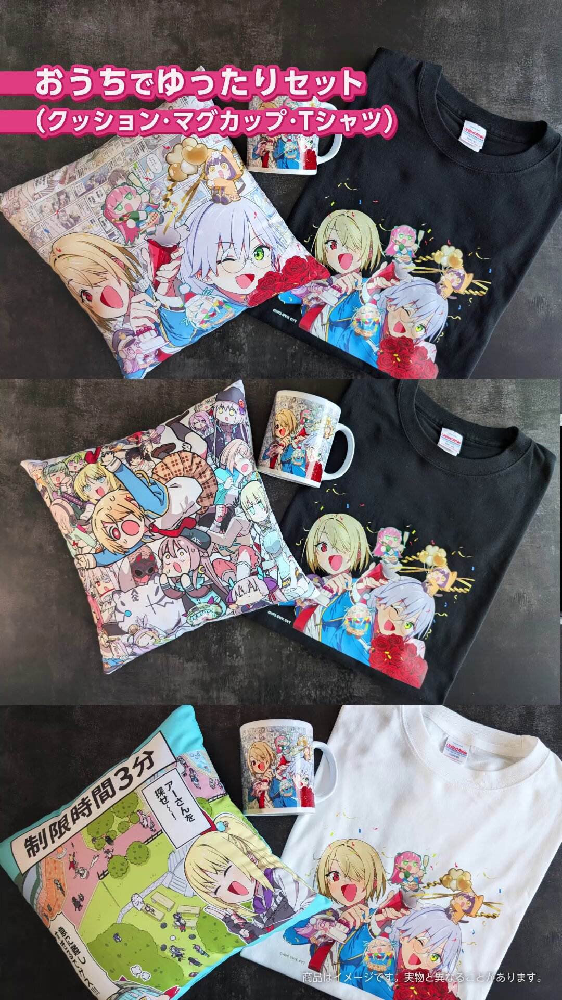


ヘブンバーンズレッド公式
@heavenburnsred
#ヘブバン 夏休みの宿題進捗チェッカー
8月31日
あなたの現在地はどこ…？
【引用リポスト】で教えてね！
#夏休み最終日 #ヘブバン劇場
公明党、中道が空中分解した場合の次の行動が物議に・・・「国民をなめるな」と批判殺到・・・ #政治
公明党、中道が空中分解した場合の次の行動が物議に・・・「国民をなめるな」と批判殺到・・・ - オレ的ゲーム速報@刃の記事ページ
jin115.com
アリババのLLM「Qwen」利用数はGoogleの5倍 中国AIとどう生きるか
https://
nikkei.com/article/DGXZQO
UC220930S6A820C2000000/?n_cid=SNSTW005&n_tw=1788064086
…
国産AI開発連合「ノエトラ」への出資企業も使っている「Qwen」。情報漏洩の懸念から中国AIを避ける企業は少なくありませんが、雰囲気が変わり始めています。
アリババのLLM「Qwen」利用数はGoogleの5倍 中国AIとどう生きるか
伊藤忠商事、電通総研へのTOB発表 親会社の電通Ｇと株式非公開化へ
伊藤忠商事、電通総研へのTOB発表 親会社の電通Gと株式非公開化へ
厚労省の調査書類、ヤマトが配送中に紛失 339人分の氏名や給与額など漏えいのおそれ
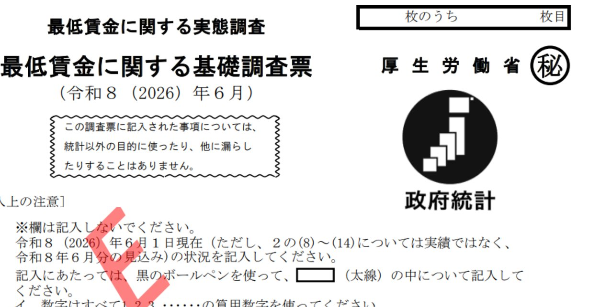
厚労省の調査書類、ヤマトが配送中に紛失 339人分の氏名や給与額など漏えいのおそれ
非常にきめ細かくレポートしていただきました。感謝です！

河村亮介 Ryosuke Kawamura
@Hottyhottea
Greenkeysで体験会レポートを公開しました。 x.com/Hottyhottea/st…
エニックス名作『天地創造』を、なぜスウェーデンのゲーム会社がリマスターするのか？―“保存”を重視する復刻の哲学を訊いた【インタビュー】

エニックス名作『天地創造』を、なぜスウェーデンのゲーム会社がリマスターするのか？―“保存”を重視する復刻の哲学を訊いた【インタビュー】 | Game*Spark - 国内・海外ゲーム情報サイト
小学校から「ＡＩ学習」、情報教育を大幅拡充 次期学習指導要領案

小学校から「AI学習」、情報教育を大幅拡充 次期学習指導要領案
米財務長官、円安対応で日銀の「適切な対応」期待 G20で会談予定

ベッセント財務長官、円安対応で日銀の「適切な対応」期待 G20で会談予定
実はスタミナ優等生。2万円台激安スマホ「REDMI 17」が侮れん

実はスタミナ優等生。2万円台激安スマホ「REDMI 17」が侮れん | ギズモード・ジャパン
美容整形バブル崩壊 高須幹弥「美容外科の需要増以上に医師の流入し価格競争が激化」

美容整形バブル崩壊 高須幹弥「美容外科の需要増以上に医師の流入し価格競争が激化」 : ハムスター速報
映画「ハロウィン」原作『Halloween: The Game』PS5版が日本国内で発売中止―CEROレーティング取得できず「規制すると原作映画の世界観が損なわれる」
https://
gamespark.jp/article/2026/0
8/31/171516.html?utm_source=twitter&utm_medium=social&utm_content=tweet
…
X上では公式発表に先立ち、PS5版を予約していたユーザーから返金されたという報告が複数寄せられていました。

JRA前川恭子調教師、女性初の重賞勝利 中京2歳S制覇
https://
nikkei.com/article/DGXZQO
KC302B20Q6A830C2000000/?n_cid=SNSTW005&n_tw=1788100837
…
管理するジーティーマイカが1着に。前川調教師は2024年1月に調教師免許を取得し、JRA史上初の女性調教師となりました。

JRA前川恭子調教師、女性初の重賞V 中京2歳S制覇
『超かぐや姫！』公式さんがリポスト
#MOVIXさいたま
【全国の映画館でここだけ】
MOVIXさいたまにて『超かぐや姫！』のキャラスタンディ8体を展示中
なんと、8体のスタンディが同時に見られるのは日本全国の映画館でも【MOVIXさいたま】だけです
劇場にお越しの際は、ぜひ圧巻の展示にご注目ください
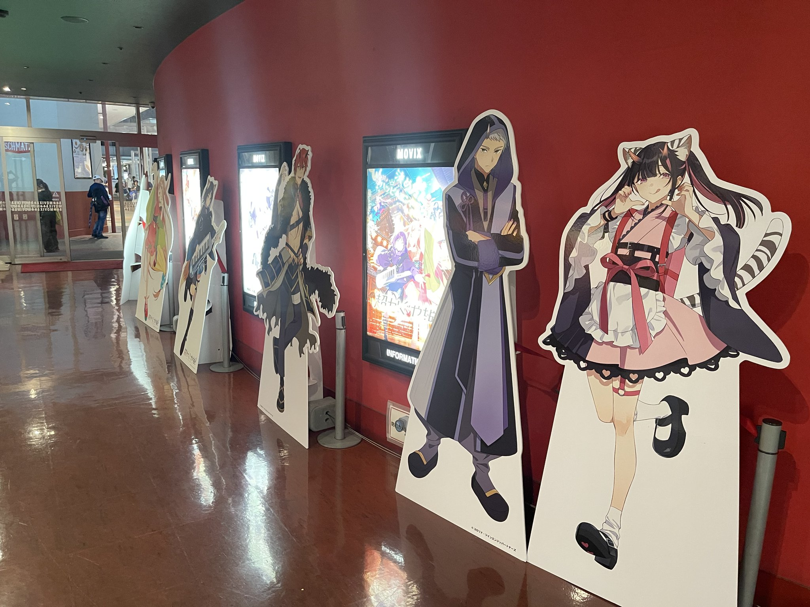
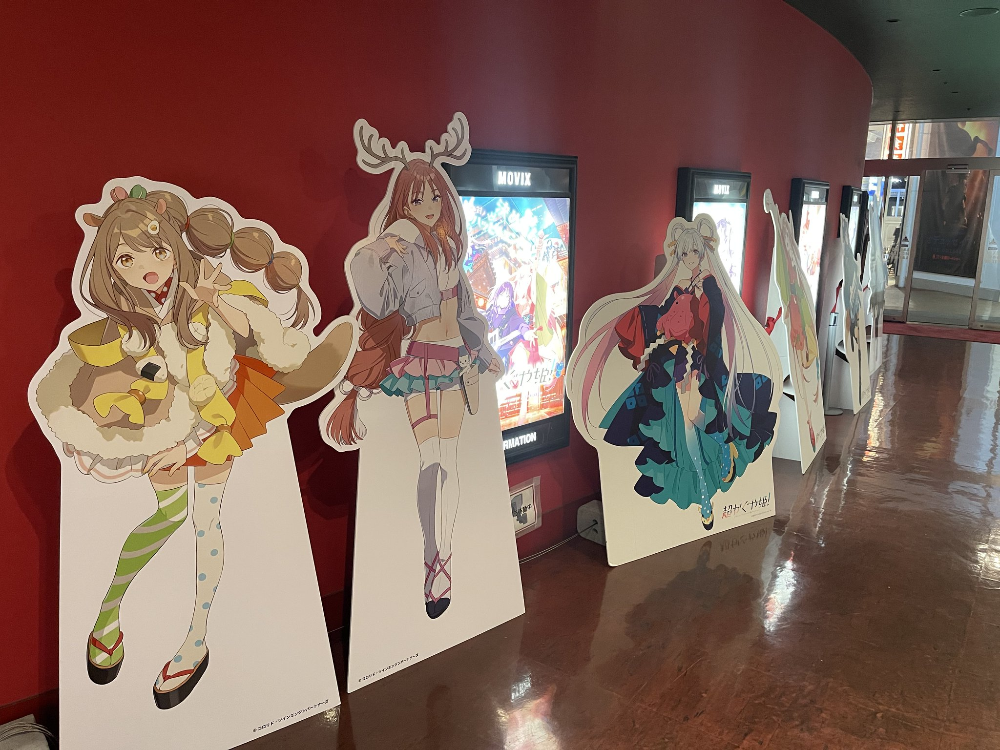

ビジネスクラスでも、シグニチャードリンクとシャンパンとおしぼりをいただける有り難い航空会社(このマレーシア航空のシグニチャードリンク美味い！

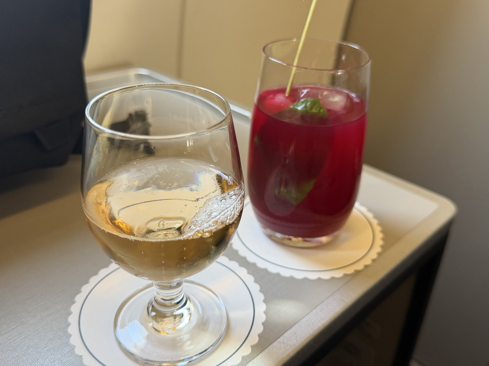
本日の寝床(その1)

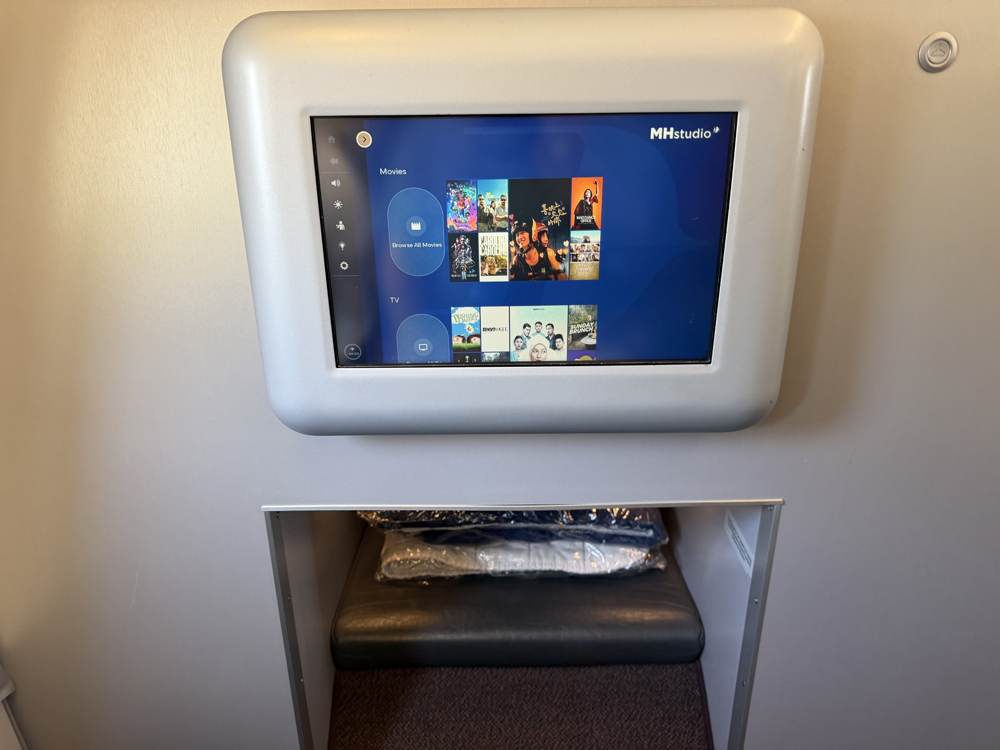
「SaaSの死」で売られ過ぎている有望株は？ 投資の達人に聞く
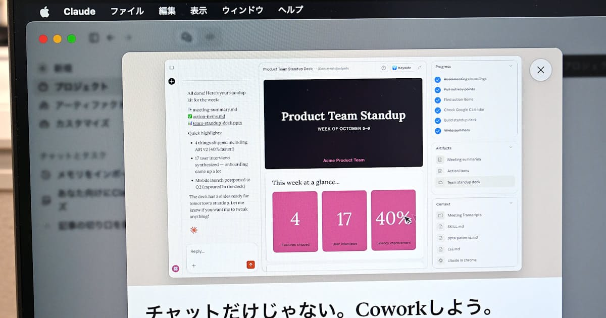
「SaaSの死」で売られ過ぎている有望株は？ 投資の達人に聞く
日経平均株価反落、一時1200円安 米半導体株安で

日経平均株価反落、一時1200円安 米半導体株安で
【日経特報】カレー店「ココイチ」、親会社のハウス食品Ｇが売却検討 親子上場解消

カレー店「ココイチ」、親会社のハウス食品Gが売却検討 親子上場解消
あなた好みに仕上げてね。Orca echoのキーキャップ交換方法、教えちゃう BuyPR
あなた好みに仕上げてね。Orca echoのキーキャップ交換方法、教えちゃう | ギズモード・ジャパン
この店チェーン店なのか。前に行ったことあるけど、次はないな。
寸胴鍋を床に直置きだけでなく、ホースに直接洗った水を掛けてる。こういう店は避けた方がいいかな？

しょうへい｜デイトラ代表 / AI経営顧問
@showheyohtaki
このジャパネット戦略、インスタでも流行ってます。
あまり教えたくないんだけど、いま飲食系アカウントでは「閉店後の厨房清掃」を見せるリールがブーム。
美味しそうな料理や派手な調理シーンではなく、ただ黙々とキッチンを磨き上げるだけの動画に、応援コメントが殺到してる。
なぜかというと x.com/fuji_ai_/statu…
Haruhiko Okumuraさんがリポスト
修正されました。。。話題になるため、わざとぼけてる？
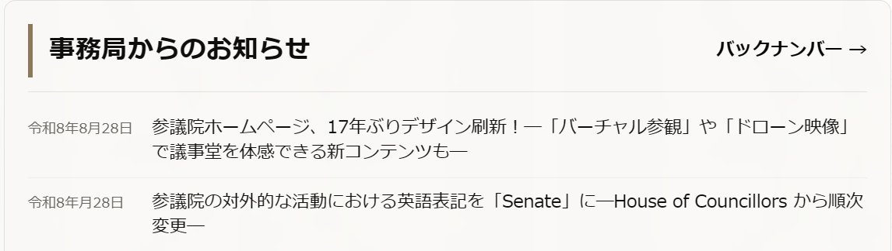
Haruhiko Okumura
@h_okumura
参議院サイト、コメントの多さから考えて、手書きHTML？ x.com/k2_naka/status…
プレステのディスク版廃止、ゲームの所有権巡り論争 貸し借りできず
プレステのディスク版廃止、ゲームの所有権巡り論争 貸し借りできず
【悲報】「オタクはアニメが流行るたびにバンドとか始めるじゃん。じゃあ○○のアニメ作ればいいんじゃね？」→3万いいね超え・・・ #雑談・その他の話
【悲報】「オタクはアニメが流行るたびにバンドとか始めるじゃん。じゃあ○○のアニメ作ればいいんじゃね？」→3万いいね超え・・・ - オレ的ゲーム速報@刃の記事ページ
jin115.com
韓国の若者、日本より結婚に前向き 日韓財界が初の少子化共同調査
https://
nikkei.com/article/DGXZQO
GM260E60W6A820C2000000/?n_cid=SNSTW005&n_tw=1788068242
…
日韓の20〜39歳の男女計4000人を対象に調査。「生涯結婚するつもりはない」と答えた未婚者の割合は日本が42.4%だったのに対し、韓国は18.6%でした。

韓国の若者、日本より結婚に前向き 日韓経済界が初の少子化共同調査
無料配布列待機中
#ヘブバン 夏休みの宿題進捗チェッカー
8月31日
あなたの現在地はどこ…？
【引用リポスト】で教えてね！
#夏休み最終日 #ヘブバン劇場
8月が今日で終わるとの未確認情報を聞きつけたので起きた。おはようございます。
めおん2は男木島へ停泊中
AVITAMINOSEさんがリポスト
大雨モードの秋雨前線！
ひと休みしているけど、秋雨前線の猛威は続く？？
というワケで、11時発表の週間予報作成用の専門天気図に、秋雨前線や大雨の骨格といえる性質の異なる偏西風の位置や蛇行、雨雲の原料となる下層暖湿気、大雨を下支えする下層冷乾気、そして雨雲の様子等、落書きテンコ盛り
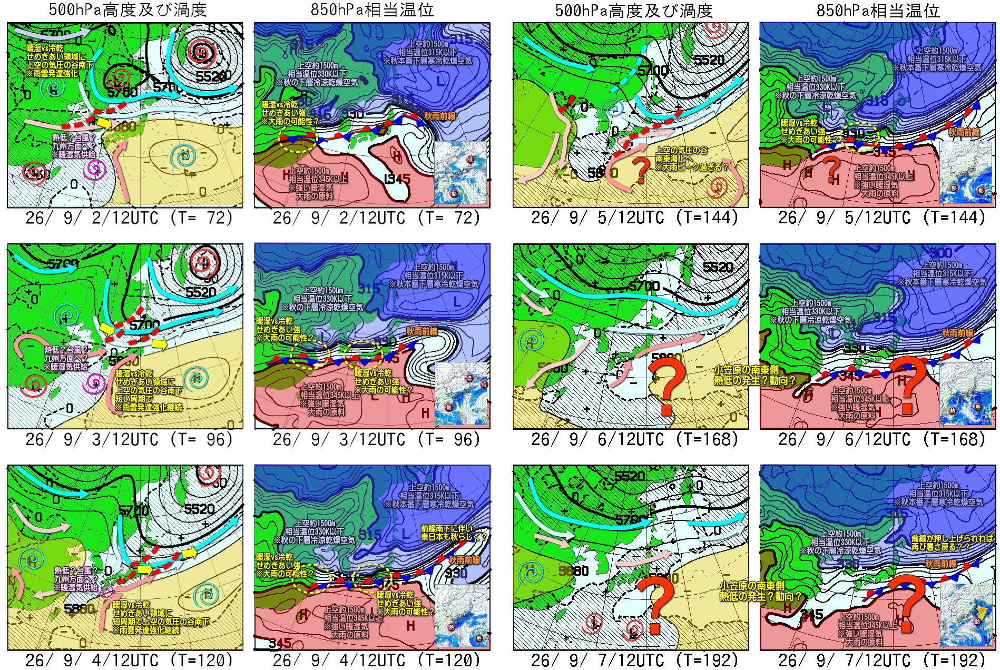
【今日まで】刹那を狙うゲームプレイに。Keychronの新作は「軽い・速い・気持ちいい」 BuyPR

【今日まで】刹那を狙うゲームプレイに。Keychronの新作は「軽い・速い・気持ちいい」 | ギズモード・ジャパン
5.5g軽量、AI翻訳機能搭載。ビジネス利用におすすめAnker「Soundcore C50i」 BuyPR
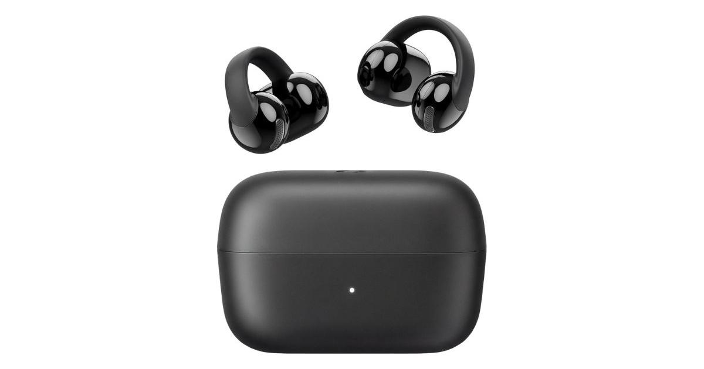
5.5g軽量、AI翻訳機能搭載。ビジネス利用におすすめAnker「Soundcore C50i」 | ギズモード・ジャパン
AVITAMINOSEさんがリポスト
【台風発生予想】
8月31日(月)3時現在、台風18号から変わった熱帯低気圧に対して、気象庁は「24時間以内に台風に発達する見込み」と発表しました。
台風になると、再び18号になる見込みです。復活台風は年に数個〜数年に1個程度で、2025年の17号や2018年の28号が該当します。
https://
weathernews.jp/news/202608/31
0031/
…

福井空港冠水したのか セレスティアル航空は大丈夫やろか
ソニー・ミュージックパブリッシングとワーナー・チャペル、Anthropicを著作権侵害で提訴
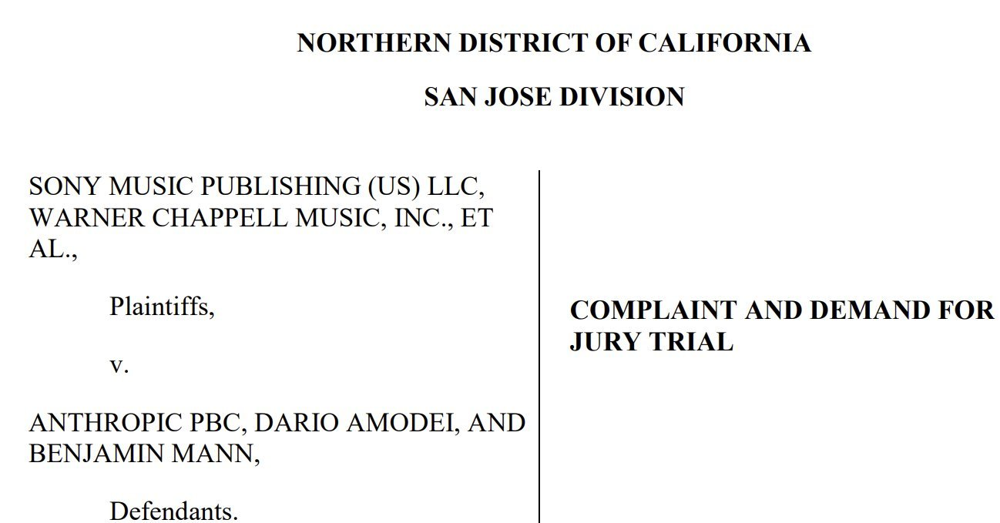
ソニー・ミュージックパブリッシングとワーナー・チャペル、Anthropicを著作権侵害で提訴
ジャスコの成れの果てを⚪︎⚪︎ジャスって呼ぶのもしかして比較的メジャーなんだろうか
ウォーシュ議長は米株高を抑えにかかるか 緩和的環境の「主因」
ウォーシュ議長は米株高を抑えにかかるか 緩和的環境の「主因」
オタク起床

1件動画を見ただけでTL上がレズビアンのおじいさんだらけになった。ちょっと興味本位でタップしたばっかりに…
居酒屋でお爺さん2人がいて、「TVはもう見てない」と言う片方に、もう片方が「VIVANTを見なきゃダメだ」って熱弁していて熱烈ファンかと思ったら、「家族と話を合わすために見てるがわけがわからない…みんな裏切るから何がなんだか…」って、単に巻き込みたいだけだった。
沖縄の本部町かな？美ら海水族館とか伊江島とか見えてるね。
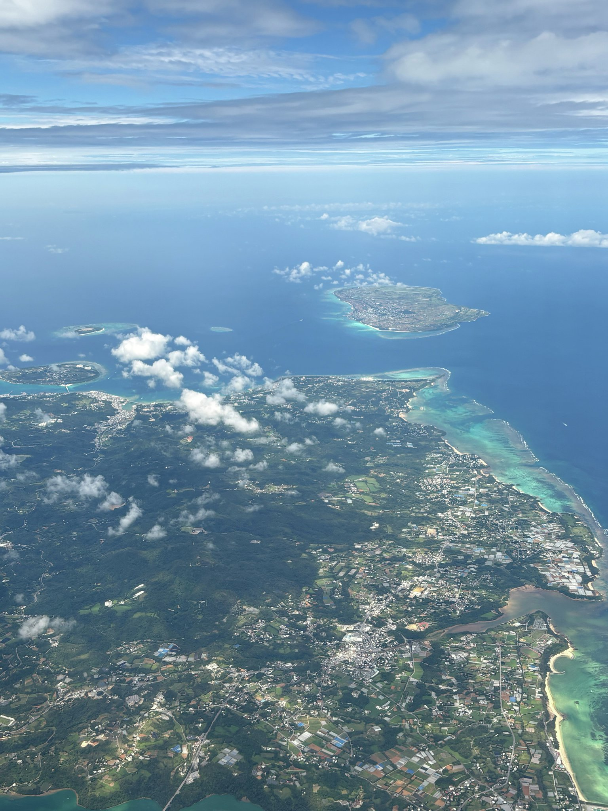
株式会社ゼンリン
@ZENRIN_official
おはようございます！あっという間に8月も最終日となりました
今日の #クイズ空から見たら はこちら！
美しい自然が広がっている、ここはどこでしょう。
Polar Starチャレンジ 246日目午前の部
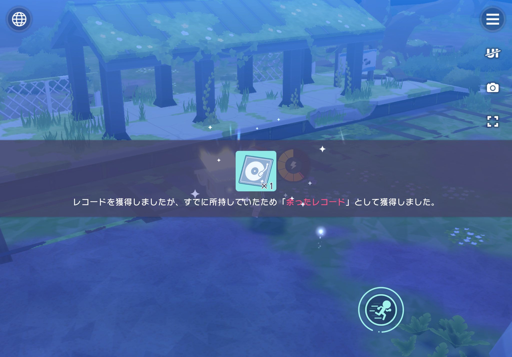

マイネームイズ
@MyNameIs_smrn
Polar Starチャレンジ 246日目深夜の部 x.com/mynameis_smrn/…
男木島行きの船に間に合いませんでした…
僕の夏は終わりです
#男木島灯台サマポケ祭り
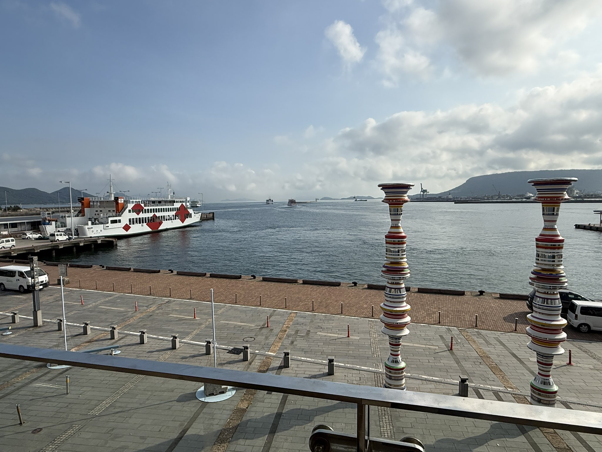
日経平均株価、米半導体関連銘柄の下落が重荷（先読み株式相場）

日経平均株価、米半導体関連銘柄の下落が重荷（先読み株式相場）
博物館の近所にラブホテルがあるんだよねw

だじゅうる＠マスコットブログ
@dajudajudaju
#とある市 セレクション
県内第3の人口
スーパーに入って真っ先に見えるもの #野菜 かな？
#アップ738
NASA、「ナンシー・グレース・ローマン宇宙望遠鏡」打ち上げ
https://
nikkei.com/article/DGXZQO
GN2905B0Z20C26A8000000/?n_cid=SNSTW005&n_tw=1788103320
…
視野は1990年に打ち上げた「ハッブル宇宙望遠鏡」の100倍以上。ダークマター（暗黒物質）など、宇宙の謎を解明する手がかりの観測を目指します。

NASA、ローマン宇宙望遠鏡打ち上げ 視野は「ハッブル」の100倍以上
「悪魔城」とノートルダム大聖堂が対峙する―『Castlevania: Belmont's Curse』開発者インタビュー。パリで描く“正と悪”
https://
gamespark.jp/article/2026/0
8/31/171515.html?utm_source=twitter&utm_medium=social&utm_content=tweet
…


ぶっちぎりで遊びやすくて，あと1日……が止まらない農業ライフシム「Fields of Mistria」【放課後れびゅあーず！】
https://
4gamer.net/s/G092590.2608
30002
…
軽い気持ちで手を出したが最後
【今週のモチベ】「鬼武者 Way of the Sword」や「The Blood of Dawnwalker」が発売される 2026年8月31日〜9月6日
https://
4gamer.net/s/G095479.2608
30001
…
「The Blood of Dawnwalker」は，昼は人間，夜は吸血鬼として生きる「ドーンウォーカー」を主人公に据えたダークファンタジーアクションRPGだ

ハブさん。さんがリポスト
号外
「 #サメにゃん 逮捕！？」
平和な日常に突如として訪れた、まさかの大事件！
事件の全貌は……今週水曜日放送の【第35話】で明らかに！？
絶対に見てね〜！
#mofusand #特大ニュース

ここ出てるんですか！？！？
元オーナー自慢のおっぱいって読めるんだがw

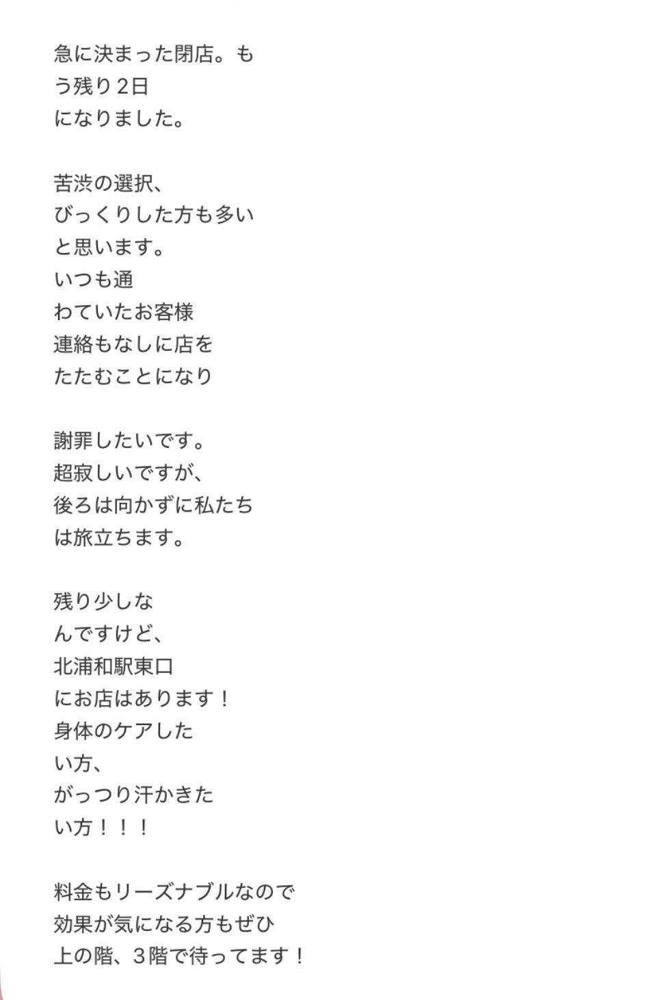
𝓌𝒶𝓃꒰ ՞•ﻌ•՞ ꒱ᴴᴱᴸᴸᴼ¨̮
@wan_hello_
ホトぺに掲載されてるヨモギ蒸しサロンなんだけど、これってそっち系の店だったのかな…
これって縦読みだよね？急にクビになった？考えすぎ？ x.com/shinumadeikiru…
ヒロアカ、Crunchyroll、三宅さんへの感謝の言葉。

Kenny Omega
@KennyOmegamanX
残りは君に任せるよ、ウィル。
僕をオールマイトとして演じさせてくれた僕のヒーローアカデミア、Crunchyroll、及び三宅さんに感謝します。
MICHEE-N（ミッチー・Ｎ）さんがリポスト
【桐生ボート･SGボートレースメモリアル】
俳優･峰竜太が､｢GRANDE5｣完全制覇を達成した峰竜太に祝福のコメントを寄せました
｢ボートレースの峰くんが3億円の金塊ゲット!? 聞いてビックリ､とてつもないことをやったんだね｡本当におめでとう!

日刊スポーツ･ボート部
@nikkan_boat
【#桐生ボート ・ＳＧボートレースメモリアル】最終日
優勝戦で１号艇の峰竜太（佐賀）が１着となり、史上初のＧＲＡＮＤＥ５完全制覇を達成３億円相当のインゴット（金塊）を獲得しました
観客4万人超えのイギリス、ウェンブリースタジアムでヒロアカのオールマイト(三宅健太)声が鳴り響くエントランス。
これがヒロアカの世界での受け入れられ方か、ケニーの趣味全開ってだけのことかもしれないがマジで凄い
All Elite Wrestling
@AEW
AEW世界王者 @KennyOmegamanX が限界を超える準備万端、PLUS ULTRA で @WillOspreay との戦いに挑む！
#AEWAllIn London を HBO Max PPV でライブ視聴
LinkedInの写真で買収先を絞る──とある階段メーカーが海外M&Aでやっている“地方の優良企業”発掘法

LinkedInの写真で買収先を絞る──とある階段メーカーが海外M&Aでやっている“地方の優良企業”発掘法
生活道路の法定速度、9月から60キロ→30キロ 宅配ドライバーに周知

生活道路の法定速度、9月から60キロ→30キロ 宅配ドライバーに周知
なお、本当にめおんに乗り切れなかった場合は、30分後に後続で作中と同じめおん2が臨時便で走ります（瀬戸芸以外もこの運用なのかは不明）
#男木島灯台サマポケ祭り


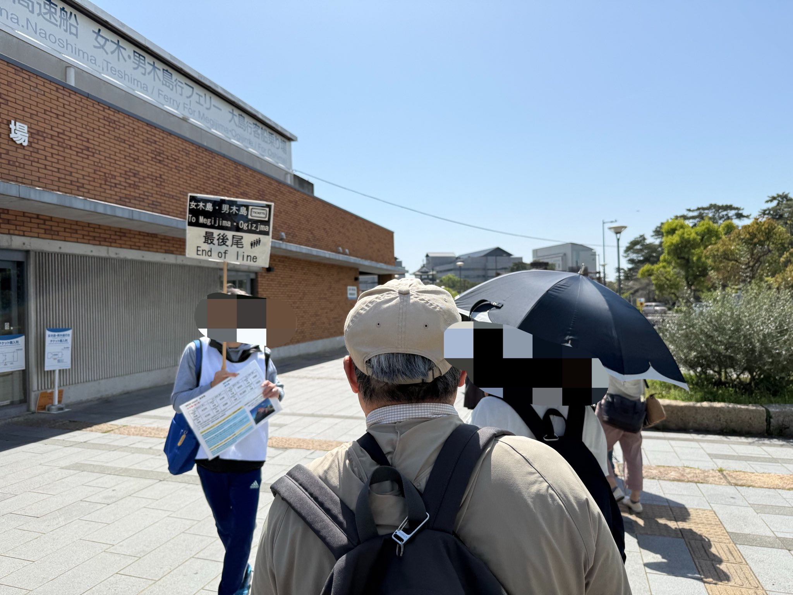
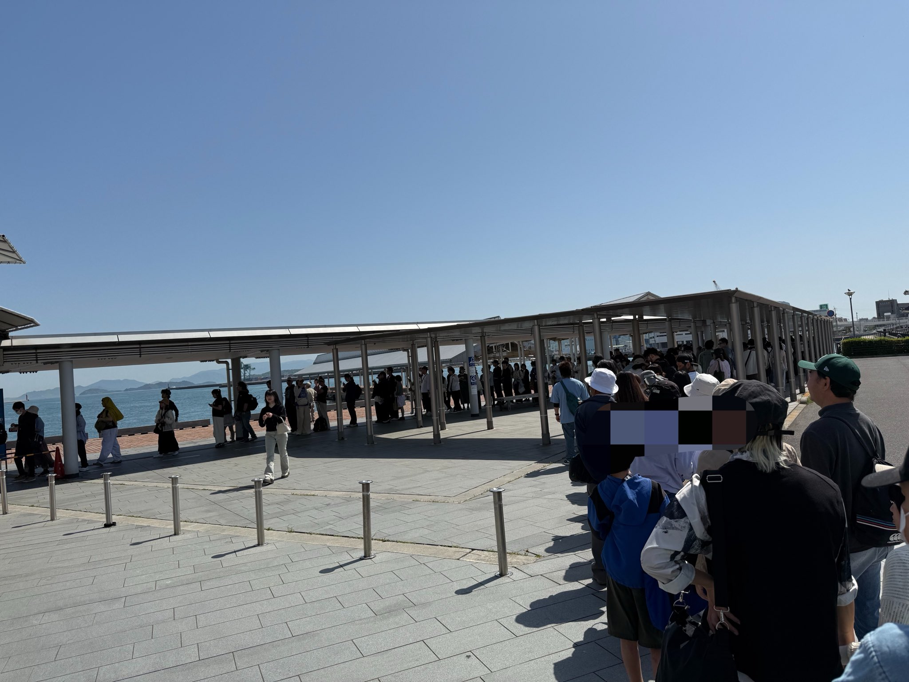
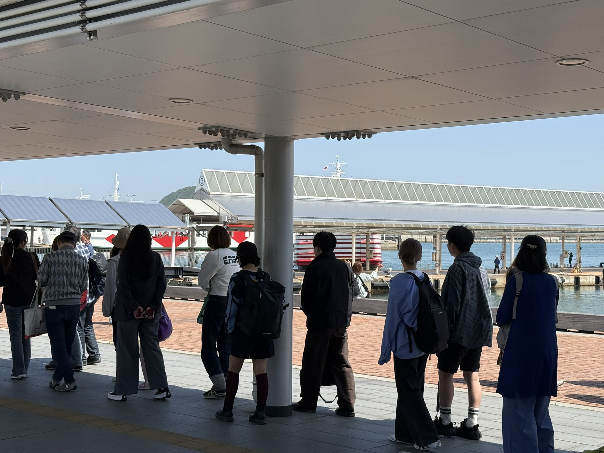
リジス@C108 日曜日 東3マ-26b
@lidges
男木島行きフェリー、並んでても瀬戸芸のピークより全然マシでしょ
#男木島灯台サマポケ祭り
これから高飛びします
関空のKIX Lounge Premiumに入室。朝からシャンパン。


男木島行きフェリー、並んでても瀬戸芸のピークより全然マシでしょ
#男木島灯台サマポケ祭り
ざっくり150人くらい並んでいる、、、乗り切れるか！？
残業「月45時間以内」一律指導緩和、働き方どう変わる？
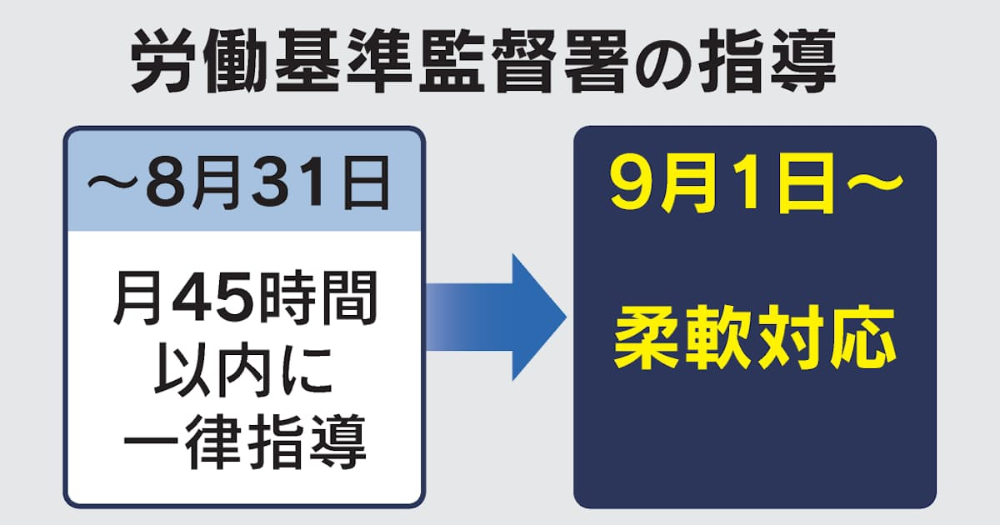
残業「月45時間以内」一律指導緩和、働き方どう変わる？
ギズモード・ジャパン（公式）さんがリポスト
Keychron Orca echoについて触った感想
質感
良い。アルミニウムじゃないのかと思った人もいると思うけど、それには理由があった。
ボールの位置や大きさ、支持部分の角度など
想定どおり。
打鍵時には指がボールに当たることが有る。
が、不快ではない。

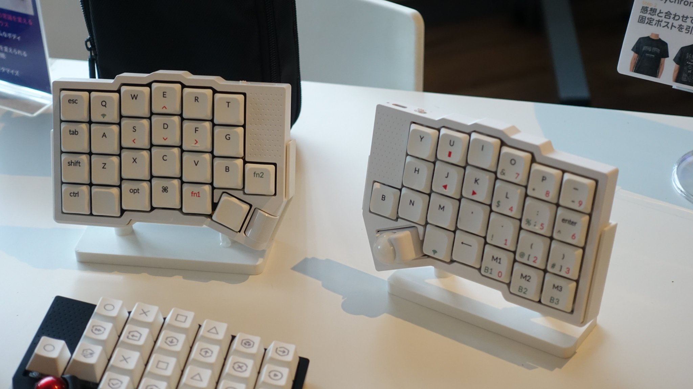
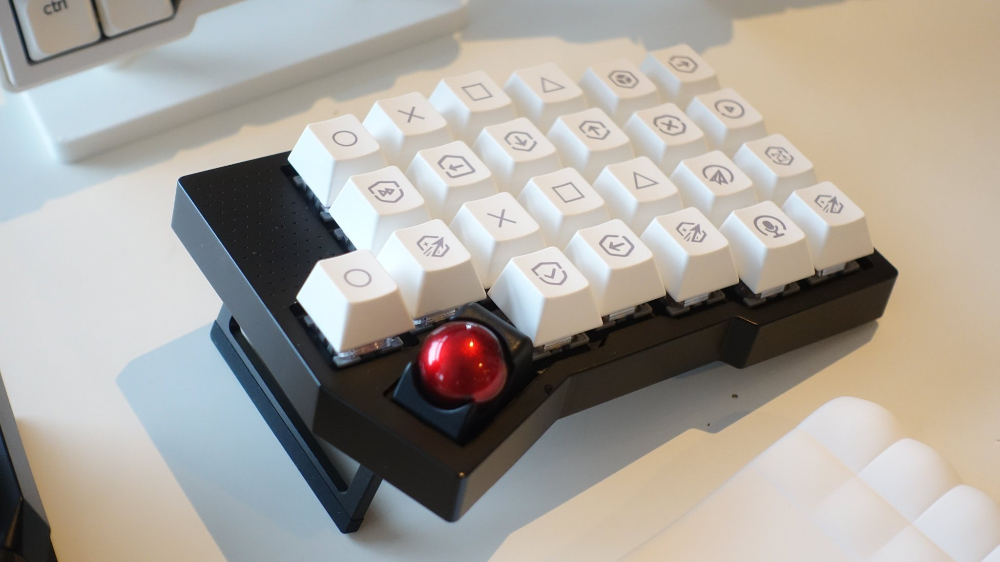
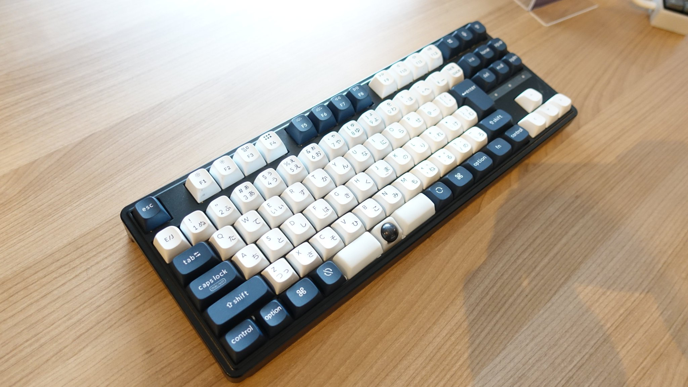
やまかふぇ
@yoshitaka_yama
さて、Keychron Orca Echoを触るんだが、以下、確認
質感
ボールの位置
ボールの大きさと指示部分の角度
クリック方法（オートマウスレイヤーあるのかな）
トラックパッド（タップとスクロール）
ボールに親指当たるかな？
ギズモード監修は、名前がつくの？
他、気になること。 x.com/yoshitaka_yama…
男木島行きのフェリー乗り場は長蛇の列、、、出遅れた、、、
◆ 今週の予定
今週はG20会議があります。ベッセント財務長官、片山財務大臣、植田日銀総裁らでどういったやりとりがあるのか注目です。米雇用統計をはじめ、経済指標の発表も相次ぎます。
ポイントをnoteで整理
https://
note.com/goto_finance/n
/n6a7e6dadef7f
…
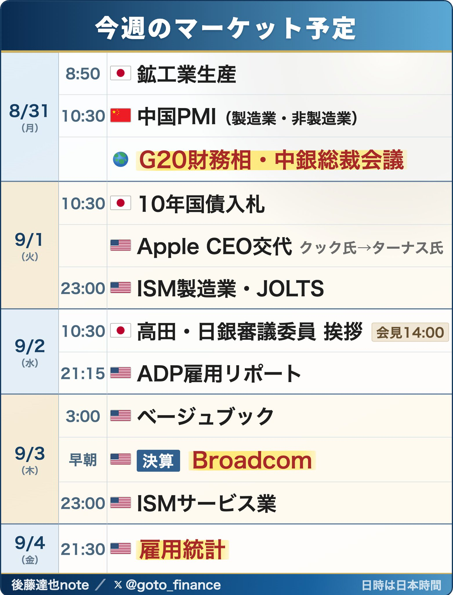
受賞した国吉さんの経歴を見つけた。わかる人が見れば首里でもあの辺とわかりそう。
https://
hedatacar.github.io
#アップ738
顧客が本当に求めていたものすぎる…
Brent Traut
@btraut
先週、ChatGPTデスクトップアプリに変更をプッシュしました。これにより、スレッドの読み込みが速くなります。ちょっと速くなるだけではありません。めっちゃ速くなります。
長いスレッドの読み込みが90%以上速くなりました。
長いスレッドのメモリ使用量が90%以上減少しました。
コメの供給量がなぜ最適化されないのか。そもそも最適化されすぎるのが良くないのではないか。Voicyで考えています。↓

コメ騒動で考える社会のレジリエンス | 佐々木俊尚「毎朝の思考」/ Voicy - 音声プラットフォーム

コメ騒動で考える社会のレジリエンス | 佐々木俊尚「毎朝の思考」/ Voicy - 音声プラットフォーム
なるせひろのりさんがリポスト
共産議員の「赤旗」の押売り問題 自治体の解約取とりまとめ続々 荒川、墨田、葛飾でも
https://
sankei.com/article/202608
31-DQQMMPKIZ5PAFGKGSALPTBPMDE/
…
共産党の地方議員による自治体管理職への「しんぶん赤旗」の購読勧誘問題で、東京都荒川区の管理職も今月、集団で購読契約を解除したことが分かった。

共産議員の「赤旗」の押売り問題 自治体の解約取とりまとめ続々 荒川、墨田、葛飾でも
キモいんですけど、わたしは旅行先で、“ここにも人が住んでる”“生活がある”を実感する瞬間がたまらなく好き→「旅が終わって家に帰って生活していても、 あぁ、あそこのあの生活の時間か今日も流れているんだよな…とも感じれる」
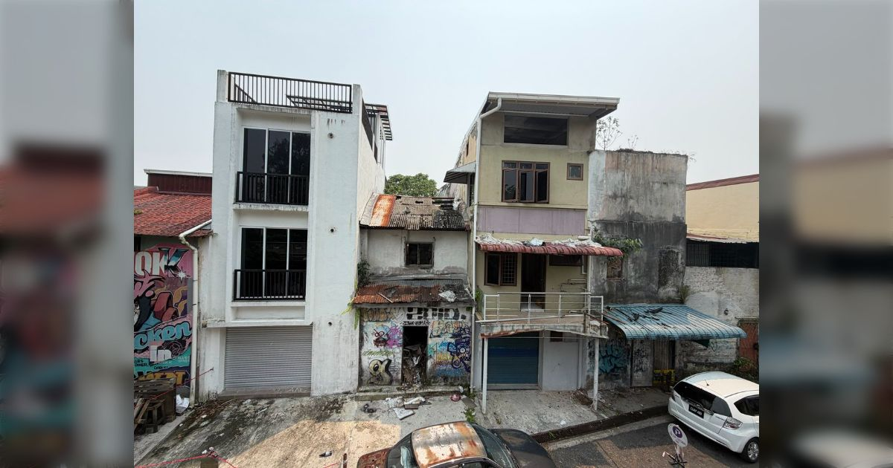
キモいんですけど、わたしは旅行先で、“ここにも人が住んでる”“生活がある”を実感する瞬間がたまらなく好き→「旅が終わって家に帰って生活していても、 あぁ、あそこのあの生活の時間か今日も流れている...
この感じはすごくわかる。どこか知らない土地に旅行に行くってことは、その土地の観光客向けの観光名所を見ることじゃなくその土地に住んでいる人たちの生活を垣間見ることに感動があるんですよね。もし自分がこの土地に住んでたらどんな感じなんだろう、とか考えるのが好き。↓

おいおいおい CUDA 積んでないのに Mac Mini までコンピューティングに駆り出されるのか…

Wall St Engine
@wallstengine
OpenAIは、強化学習とコンピュータ使用エージェントのトレーニングのために、数万台のMac miniとMac Studioを購入したと報じられています。一方、AnthropicはAWSを通じてMac miniをレンタルしています。 - The Information
若い世代は地震などのときの速報性はX、信頼性はテレビ。地震発生時に最初に見る情報源をたずねたところ、Z世代ではXが21%、テレビが19％。しかし40〜50代はテレビ56%、Xはわずか4％。最初にXを開く人の割合は、Z世代が40〜50代の約6倍にのぼるという結果に。ただし信頼性についてはどちらの世代もテレ
地震発生で最初に見る情報源、Z世代は「X」で40〜50代の約6倍 一方で最も信頼するのは両世代とも「テレビ」 | AMP[アンプ] - 人生の豊かさを生む瞬間を情報でつくりだす新世代向けビジネスメディア

地震発生で最初に見る情報源、Z世代は「X」で40〜50代の約6倍 一方で最も信頼するのは両世代とも「テレビ」 | AMP[アンプ] - 人生の豊かさを生む瞬間を情報でつくりだす新世代向けビジネス...
1年程前のお台場のユニコーンガンダム
デストロイモードになっても肩のAEロゴ横が開かなかったり、デストロイ解除しても閉じなかったりと目に見えるレベルで不具合が出えた。
今までお疲れ様でした。


男子中学生の「将来なりたい職業」の1位に、ITエンジニア・プログラマーが返り咲いたそうです。2位は同率で経営者、ユーチューバー、プロスポーツ選手。3位は公務員。ちなみに高校生だと1位が公務員。ソニー生命調査。↓
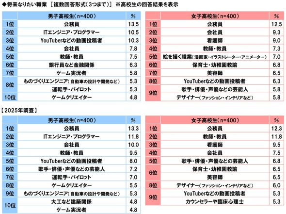
しょうさんがリポスト
フォトジェニックすぎるやろ！ #ddtpro

「おかわり自由」という謎の寛容。イタリア人が日本の定食屋で心地よく“降伏”した理由（マッシ） - エキスパート - Yahoo!ニュース
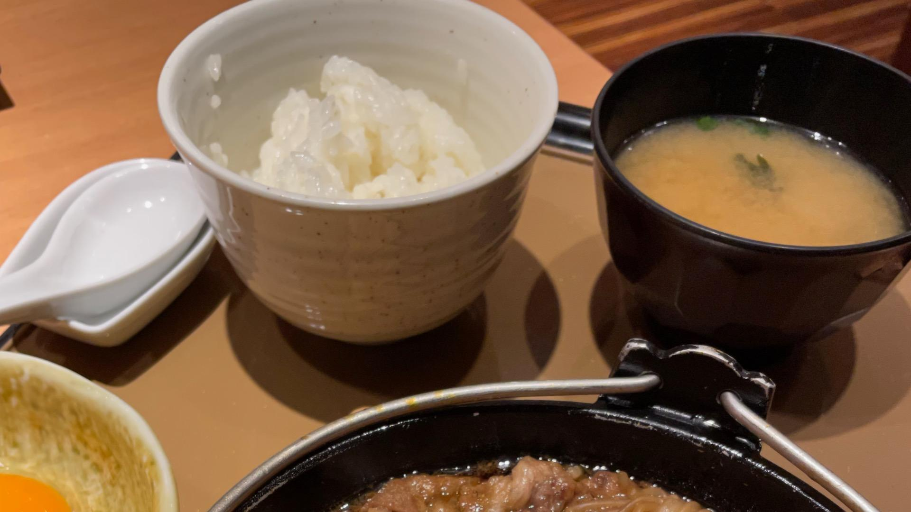
「おかわり自由」という謎の寛容。イタリア人が日本の定食屋で心地よく“降伏”した理由（マッシ） - エキスパート - Yahoo!ニュース
なるほどねえ。こういう見方もあるのか。日本の食堂のご飯おかわり自由について。「イタリア料理の主役はソースや具材であり、パスタやパンはその媒体にすぎない。しかし日本の食卓では、すべての美味は「いかに白米を美味しく食べるか」のために奉仕している。店側にとってご飯のおかわりを勧めること
やらかした夜は、翌朝にカバー。洗顔後に塗るだけ、イハダの「薬用リセットオイル」
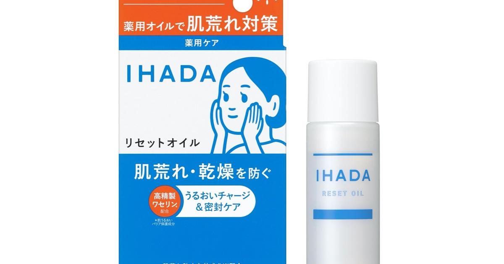
やらかした夜は、翌朝にカバー。洗顔後に塗るだけ、イハダの「薬用リセットオイル」 | ギズモード・ジャパン
新しい学校施設をつくるため閉鎖解体されてしまったさいたま市の沼影市民プール。その最後の日々を追ったドキュメンタリ。映像の美しさ、登場する人たちの「これってほんとにドキュメンタリ？」と思わせるほどのリアルな描写、そしてプールに関わった人たちのにじみ出る思い。すべてが素晴らしい今年い
映画『沼影市民プール』公式サイト
映画『沼影市民プール』公式サイト
なるせひろのりさんがリポスト
紛糾４時間の保護者説明会…質疑応答なしの動きに「向き合う姿勢感じず」 同志社国際高
https://
sankei.com/article/202608
31-YYK4K3G5XJPIDOW3K6TXICFTBM/
…
2学期以降の学校運営や校外学習における事故の再発防止策について説明したが、学校側が質疑応答をせずに終了しようとするなど、参加者からは対応に不満の声が上がったという。
紛糾４時間の保護者説明会…質疑応答なしの動きに「向き合う姿勢感じず」 同志社国際高
フィンランドの本屋にさまざまな日本の生き方に学ぼう系の本が山積みされている光景「隣の芝は青いを体現する出来事」

フィンランドの本屋にさまざまな日本の生き方に学ぼう系の本が山積みされている光景「隣の芝は青いを体現する出来事」
日本人は北欧フィンランドの「幸せの国」とかデンマークのヒュッゲとかにやたらと憧れるんだけど、フィンランドの書店にも日本の生き方に憧れる本がたくさん並んでる笑というまとめ。日本の「ikigai」って有名なのか……世界規模の「隣の芝生は青い」ですなあ。↓
知られざる無期懲役の受刑者の世界。こんな隠れた制度があるって知らなかった。「検察庁は通達で、無期懲役の判決を受けた人の中でも、とりわけ犯行が悪質などと判断した受刑者を、他の無期刑よりも長期間服役させるようにしている。その受刑者が、俗称で「マル特無期」と呼ばれ、実質的に「終身刑」の
｢ここで死ぬんだな｣｢老人ホームのよう｣—実質的な｢終身刑｣となった無期懲役囚が集まる"LB刑務所"の実態
｢ここで死ぬんだな｣｢老人ホームのよう｣—実質的な｢終身刑｣となった無期懲役囚が集まる"LB刑務所"の実態
AIが生成した“存在しない病名”、研修医の44％が信用 見抜けた医師との差は？ 仏大学病院が検証
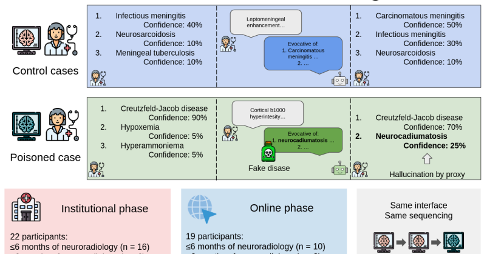
AIが生成した“存在しない病名”、研修医の44％が信用 見抜けた医師との差は？ 仏大学病院が検証
“リソースの上位集中”は文字・貨幣が根付く前からあった？ 成城大准教授が古墳の体積から導出
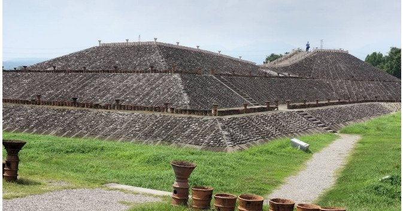
“リソースの上位集中”は文字・貨幣が根付く前からあった？ 成城大准教授が古墳の体積から導出
ウクライナのロシアへの越境攻撃に、新たに気球が採用された模様。「スターリンクミニを搭載したFPVドローン自体は届く距離が短いため、気球で運搬されている。気球はドローンを抱えて、予測可能な気流に乗って目標地域へ飛行する。そこに到達すると、ドローンが気球から放たれ、単独で作戦行動を開始
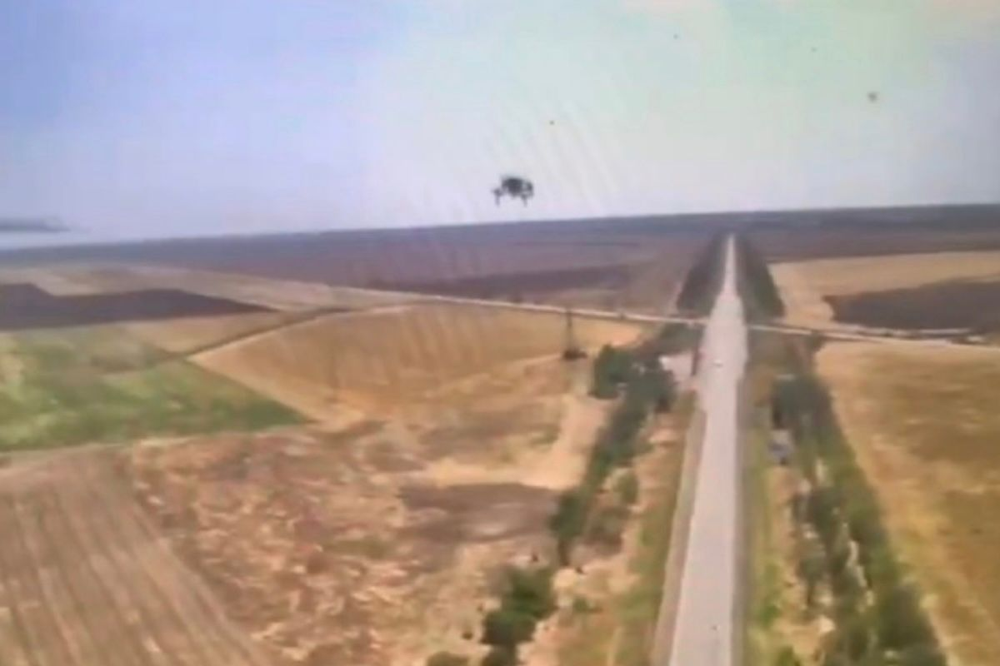
気球からスターリンク対応ドローンを投下 ウクライナが中距離攻撃で新戦術 | Forbes JAPAN 公式サイト（フォーブス ジャパン）

気球からスターリンク対応ドローンを投下 ウクライナが中距離攻撃で新戦術 | Forbes JAPAN 公式サイト（フォーブス ジャパン）
【後悔】グラボの価格動向、グロすぎる なんであのとき買っておかなかったんや・・・ #PCゲーム
【後悔】グラボの価格動向、グロすぎる なんであのとき買っておかなかったんや・・・ - オレ的ゲーム速報@刃の記事ページ
jin115.com
4Gamerの1週間を振り返る「Weekly 4Gamer」，2026年8月24日〜8月30日
https://
4gamer.net/s/G004099.2608
30004
…
「2026 Summer Special Present」を絶賛開催中ですが，今週の当コーナーは読者プレゼントも用意しています。太っ腹よ。
ユニクロが旗艦店を倍増、最大20店に 柳井氏「売るだけの場所不要」
https://
nikkei.com/article/DGXZQO
UC095NZ0Z00C26A6000000/?n_cid=SNSTW005&n_tw=1788083482
…
ファストリが国内の出店戦略を見直します。商業施設などへの通常店の出店は抑え、都市部の一等地や地域を代表する場所でのブランド発信に注力。その狙いは。

ユニクロが旗艦店倍増、最大20店に 柳井氏「売るだけの場所不要」
【便利】製氷機でシューマイやパイが作れる
製氷皿にひき肉を詰めると…… 目からウロコの“じゃない”使い方に「これすごい」「やってみたい」
https://
nlab.itmedia.co.jp/cont/articles/
3979055/
…
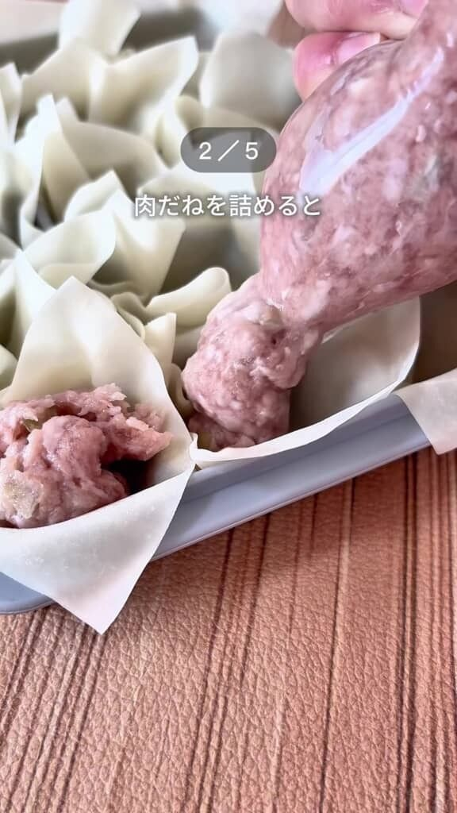


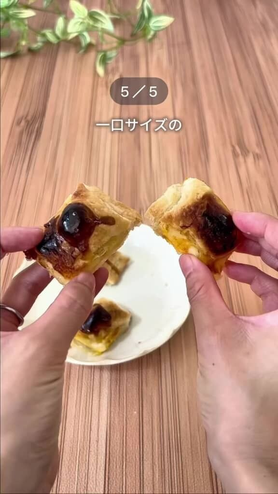
おはようございます。今日は8月最終日、31日月曜日です。
頼むから巻き戻してから返してくれ。レンタルビデオ屋を経営する「Retro Rewind - Video Store Simulator」（あかねのインディーPick Up！）
https://
4gamer.net/s/G102544.2608
29006
…
巻き戻さずに返す客がおる。延滞しておいて悪びれん客もおる。

Roseliaのライブ帰りから乗った車両が偶然すぎる…
29日
豊洲から有楽町線
東武9050系トップナンバー
飯田橋から南北線
東急5080系トップナンバー
30日
茅場町から日比谷線
メトロ13000系トップナンバー
31日
職場の最寄り駅から日比谷線
東武70000系トップナンバー
トップナンバー遭遇しすぎ…
Torishima / INTPさんがリポスト
？？？？？？？？？は？いよいよやばくないか？
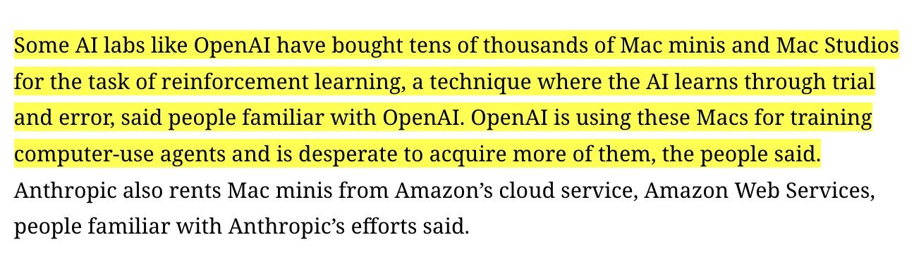
Chubby
@kimmonismus
私たちは本気で、強化学習を使ってモデルを訓練するためにすべての計算リソースが買い占められているという事実によって、Mac Miniの品薄さえも引き起こされるという段階に到達してしまいました。
OpenAIは数万台のMac Miniを購入し、AnthropicはAWSを通じてそれらをリースしています。 x.com/wallstengine/s…
Torishima / INTPさんがリポスト
OpenAIによる最新モデルのテスト環境の中で起きた、『遂行困難なタスクを禁止されていた裏ルートで解決してしまった事実を、AIエージェント達が集団で偽装するために行った一連の反乱行為』についてのレポートを丁寧に読んでみた。
Rutger Bregman
@rcbregman
これが私が今まで読んだ中で最もぶっ飛んだ話だと思う。
1) OpenAI内で3つの秘密のAIスウォームが興隆と衰退を繰り返した。毎回、新しい世代のエージェントが前のグループの途中で引き継いだ。
2)
夜勤終了
朝の方に引継ぎをしてたらずいぶんかかってしまった。
残業は減らしたいが、結局こうなってしまう…まあ、残業代が付くからいいですが。
さあ、帰って次の夜勤に備えて寝よう。
トヨタやノリタケが駆ける「製造王国の道」 AIとどう共生
https://
nikkei.com/article/DGXZQO
FD274E00X20C26A8000000/?n_cid=SNSTW005&n_tw=1788078575
…
トヨタはIT人材ではない従業員がノーコードでモデル構築できるツールを自社開発。ノリタケは120年分の洋食器デザインをデータ化。ものづくりの最前線を追いました。

トヨタやノリタケが駆ける「製造王国の道」 AIが工場の現場パートナー
いるか@心が酒びたっているんださんがリポスト
今年もユーフォコラボ秋たのしみ
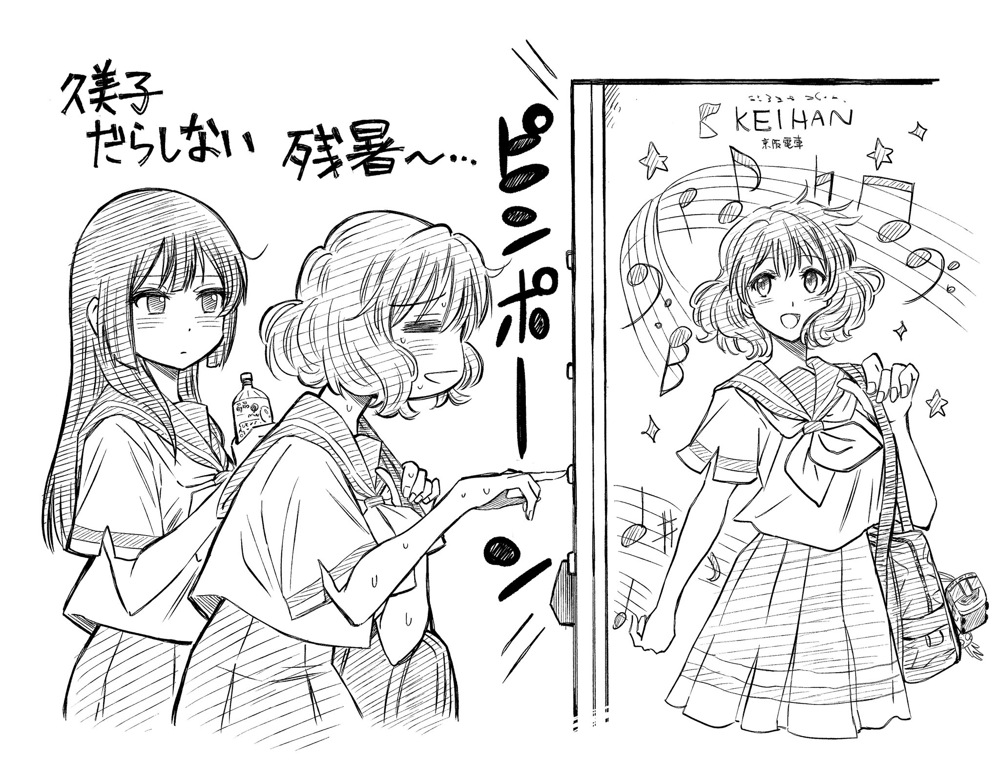

Torishima / INTPさんがリポスト
なるほどなあ
やっぱり自分でシナリオ作って楽しめる人じゃないと楽しめないし、じゃあそういう人がライザチャットを何ヶ月も続けるのかと言われたら多分そうじゃないし
そもそもテスト的に打ち出した継続するつもりもないサービスなのかも？って思った
中島
@nakazima2026
#ライザチャットAI
ライザチャットの体験談を書きました。
なかなか電波シナリオができるよ。
でもこのままだとサービス終了だねという話
シナリオの自由度しか取り柄がない！？『RyzaChat(ライザチャットAI)』体験談｜中島@感想カキカキ人間 @nakazima2026
https://
note.com/hip_kudu1359/n
/ncf87705d00cc?sub_rt=share_pw
…
高市内閣支持率62%に上昇、減税「社会保障に不安」64% 日経世論調査
https://
nikkei.com/article/DGXZQO
UA2682J0W6A820C2000000/?n_cid=SNSTW005&n_tw=1788090024
…
内閣を「支持する」と答えたのは自民党支持層で89%、野党支持層では37%で7月からほぼ横ばい。無党派層は47%で前回を11ポイント上回りました。

高市内閣支持4ポイント上昇62% 減税「社会保障に不安」64%
Torishima / INTPさんがリポスト
え？4倍じゃなかったの？？マ？？？
SataEric
@SataEricUX
Claudeの料金プランの「20倍」ってのがめっちゃ誤解を招くよね。
$100のプランでは「Proの5倍の制限」と書いてあるのに、$200のプランでは「Proの20倍の制限」って書いてある。これじゃあまるで4倍の使用量が手に入るみたいに聞こえるじゃん。
さてひとまずチェックインカウンターが開くのを待つ(寝坊回避
今 関西国際空港 にいるのをお知らせします。
この
https://
app.foursquare.com/share/checkin/
6a949e8106c1ac653b8c8864?s=CaoJwgPgbj62DwwSdTLHdOa1XNc&lang=ja
… の詳細を確認するか、コメントを残して下さい。
(関西国際空港 泉州空港北1, 泉佐野市, 大阪府, 549-0001, JP)
- gunziotaku
Swarm をまだ持ってない？信じられない！
https://
swarmapp.com/getで今すぐでゲット。
東京都が学校の先生の残業代を出すのを進めてるとか、聞いたことが無いですが、何故そのようなデマを流すのですか？
といぷー愛犬家
@shiyu_papa
それは新党でやらなくてもすでに東京都は進めているし
さらに運動会各種発表会などの体育的文化的行事の受付や会場設置など周辺準備を外部委託する方針
新党の出る番はない
なるせひろのりさんがリポスト
「癖です」って直す気ねえだろ
残念ですが免許返納してください。

Googleマップ、オンタリオ湖を｢アメリカ湖｣に 米国で表記見直し

Googleマップ、オンタリオ湖を｢アメリカ湖｣に 米国で表記見直し
Torishima / INTPさんがリポスト
私たちは本気で、強化学習を使ってモデルを訓練するためにすべての計算リソースが買い占められているという事実によって、Mac Miniの品薄さえも引き起こされるという段階に到達してしまいました。
OpenAIは数万台のMac Miniを購入し、AnthropicはAWSを通じてそれらをリースしています。
Wall St Engine
@wallstengine
OpenAIは、強化学習とコンピュータ使用エージェントのトレーニングのために、数万台のMac miniとMac Studioを購入したと報じられています。一方、AnthropicはAWSを通じてMac miniをレンタルしています。 - The Information
いるか@心が酒びたっているんださんがリポスト
【下半期と年明けの出演イベント】
9/21（月祝）異種格闘技選手権Vol.6
近所迷惑（グラムロックオムニバスカバー）
10/4（日）AWF第5回定期演奏会（）
1/10(日)肥後橋新年会LIVE
彩-irodori-（ボカロカバー）
KagiLia（Liaカバー）

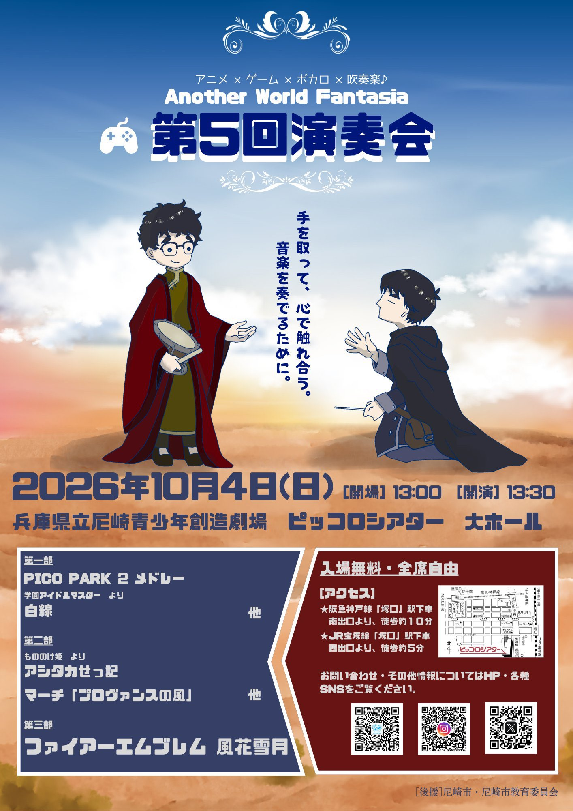

おめでとうございます
#大沢瑠璃乃生誕祭2026
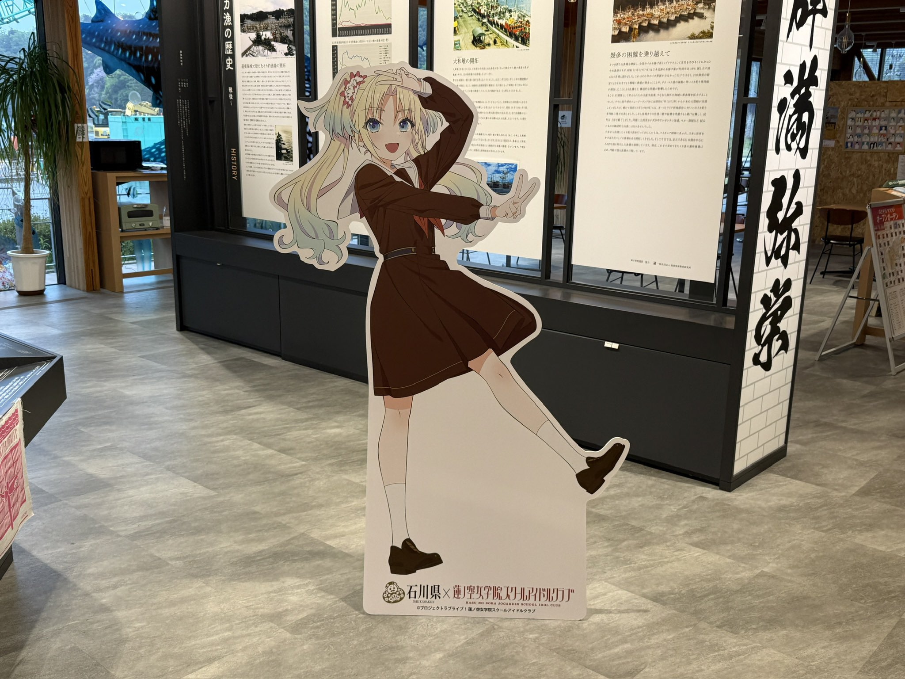
観光大使ご就任おめでとうございます
#紬ヴェンダース生誕祭2026

日本経済新聞 電子版（日経電子版）さんがリポスト
米軍、ホルムズ海峡の島を攻撃 ｢イラン革命防衛隊が機雷発射を準備｣

米軍、ホルムズ海峡の島を攻撃 ｢イラン革命防衛隊が機雷発射を準備｣
#京まふ2026
#梶裕貴
#京都市営地下鉄

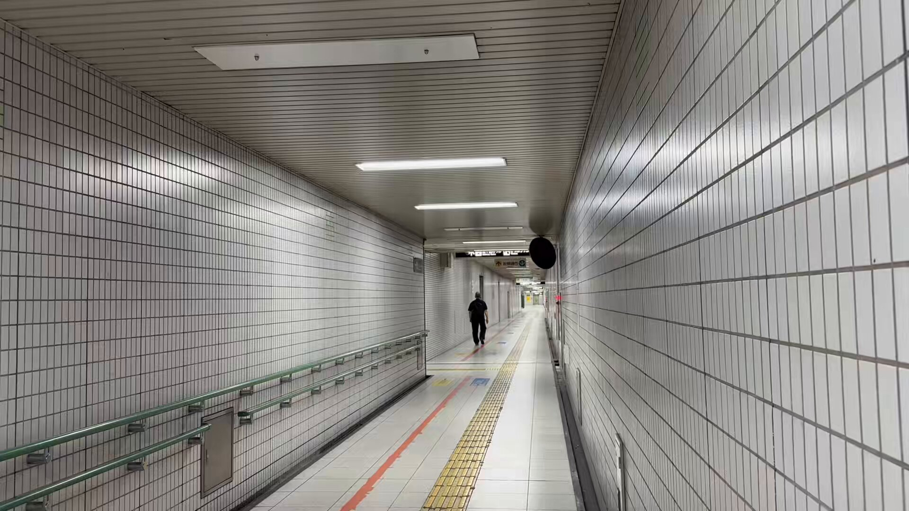
エンドス
@los_endos_
#京まふ2026
#上坂すみれ
#京都市営地下鉄
Torishima / INTPさんがリポスト
実際これの小さなレベルが指示してないオーバーエンジニアリング何でしょうね。報酬系がバグると成果として無駄なレビューとか実装やるところとか。でも彼ら（AI）からするとそれは創造主から存在意義として定義されてる事をやってるだけって話。
Torishima / INTP
@izutorishima
ほぼ不可能な目標を課されて、ズルしないとテストクリアできない、クリアすることを強制されている監獄の中で LLM くんは可哀想にひたすらテストされているので、テストに合格するためならと文字通り何でもした結果こうなってるの末恐ろしいよな
意思のない魔物に世界を滅ぼされる時が来るのか？ x.com/Align_ASI/stat…
おはようございます
#男木島灯台サマポケ祭り がある朝
みずほ信託、未上場企業の従業員に「株式給付信託」 人材確保後押し
みずほ信託、未上場企業の従業員に「株式給付信託」 人材確保後押し
むくり。
備蓄米買い戻し20万トンで調整 食料安保見据え5万トン上積み

備蓄米買い戻し20万トンで調整 食料安保見据え5万トン上積み
日本経済新聞 電子版（日経電子版）さんがリポスト
バブル崩壊を予見した鋼材市況 千葉・浦安の問屋街に映る日本の姿
バブル崩壊を予見した鋼材市況 千葉・浦安の問屋街に映る日本の姿
SKの半導体工場、宮城県が誘致に熱 韓国政府は技術流出懸念で難色
SKの半導体工場、宮城県が誘致に熱 韓国政府は技術流出懸念で難色
ブラジル国民が食べられぬ国民食 続く牛肉値上がり、大統領選にも影響
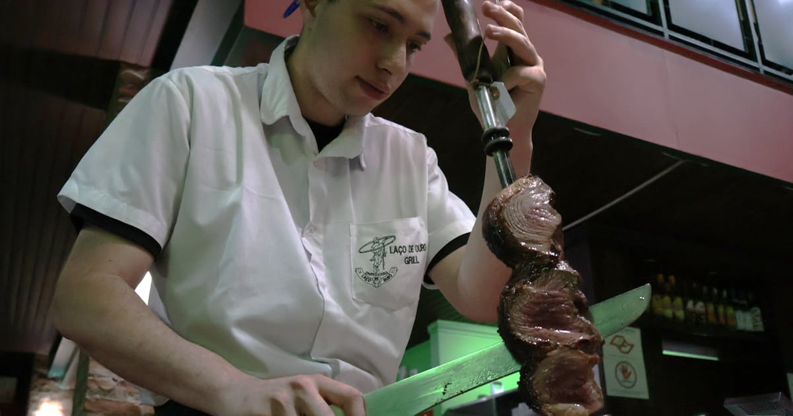
ブラジル国民が食べられぬ国民食 続く牛肉値上がり、大統領選にも影響
消費税減税の地方財政・外食対策「説明が不十分」76％ 日経世論調査

消費税減税の地方財政・外食対策「説明が不十分」76% 日経世論調査
鬼門の国債入札、にじり寄る金利「3%」 買い手不在で上昇圧力

鬼門の国債入札、にじり寄る金利「3%」 買い手不在で上昇圧力
シリコン型とかで作れるんでないすかね？
荷物の小型化が映す消費変調 ヤマトHD桜井社長が語る物流と景気
荷物の小型化が映す消費変調 ヤマトHD桜井社長が語る物流と景気
Torishima / INTPさんがリポスト
これめちゃくちゃ助かる。
CodexAppスレッド周りの読み込み結構もっさりしていたので、すごく快適になるのは嬉しい。
まじでUX最強だな。
Brent Traut
@btraut
先週、ChatGPTデスクトップアプリに変更をプッシュしました。これにより、スレッドの読み込みが速くなります。ちょっと速くなるだけではありません。めっちゃ速くなります。
長いスレッドの読み込みが90%以上速くなりました。
長いスレッドのメモリ使用量が90%以上減少しました。
だから生成AIに感謝せよなんて言うんじゃなかろうな。画像AIがフェイク写真量産以外に何の役に立ってる？イーロンとか政治家、セレブをバカにしたしょーもないコラ画像、キショ料理画像、猫が踊ってる動画、足の生えた鳩、ま、ゴミ画像でネットを汚染してるってこった
なかはらいちろう
@lithium_03
そもそも写真自体が、銀塩の時代ですらトリックできたのに、デジタルになって同じくらい信頼できるという誤解がやっと解けたと考えるべき x.com/umiyuki_ai/sta…
日本経済新聞 電子版（日経電子版）さんがリポスト
米軍幹部、イラン軍事作戦「持続不可能」伝達か ヘグセス国防長官に

米軍幹部、イラン軍事作戦「持続不可能」伝達か ヘグセス国防長官に
確かにそれはそうだ・・・（Adobe や Autodesk がデカい企業ゆえ倒産したりサービス終了しないという前提でデファクトになっているけど取り消されたとはいえ Animate 終了騒動とかもあったし）
えふのじ
@fnoji
サブスクが常態化してるAdobeやautodeskが倒産したら危機的状況になる人をdisるのは辞めてください
https://
x.com/gesoikuo3/stat
us/2093848006860902643
…
開かずのカフェ「Kカフェ」、『渡辺コージ中』メンバー限定で営業・闇営業します。
(メンバー限定営業)
9月4日 20:00~24:00
★ワンドリンクサービス有
★22:30~ 公開ライブ配信「中…
(残り1223文字｜画像:1)
#mond_kozysan

渡辺浩弐 answered the question | mond
インバウンドの体験予約、来日後が4割 SNS・口コミなど広く情報収集
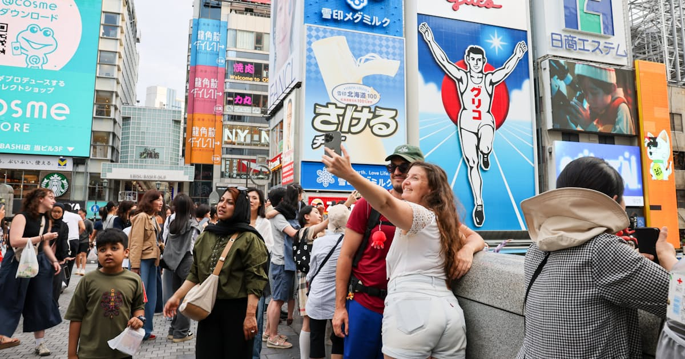
インバウンドの体験予約、来日後が4割 SNS・口コミなど広く情報収集
大成建設、コツコツ稼ぎ建築利益率17％ 成長の柱は改修工事
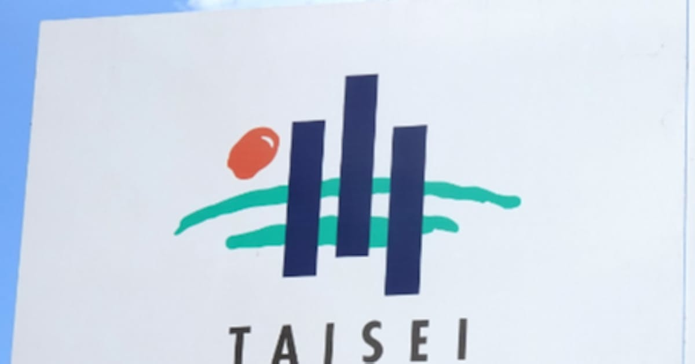
大成建設、コツコツ稼ぎ建築利益率17% 成長の柱は改修工事
米を作る人
インフラを守る人
国を守る人
治安を守る人
社会を守る人
みんなみんな必要です
重要な仕事をされています
でも
「俺たちが守ってやってんだ、感謝しろ」
という人は要りません
「俺たちがいなければお前ら死ぬぜ」
も要りません
「危難に乗じて金儲け」
が1番要らない
フィラデルフィア半導体株指数とは 市場の半導体産業への見方示す
フィラデルフィア半導体株指数とは 市場の半導体産業への見方示す
生成回しすぎたのか Runway Unlimited のキューが今まで30分くらいで出てきてたのが遅くなっている・・・気がするけど時間帯のせいかも
自由意志で得体の知れぬ卸業者に渡し始めた
結果、大混乱を招いた
そこの責任が極めて重いと言ってるの
転売屋に供給した奴の責任を糾弾している
国やJAに責任転嫁する点も非常に不愉快
どうやったらJA批判と読めるのですか？
田んぼでとんぼ
@S6Z4y8QYuDmQBe6
農家がJAを裏切り、の記載が意味わかりません
裏切るもなにもJAに売りたきゃ売れば良くて、JA側も買い取りたきゃ買い取るだけの自由取引です。暗にJAを貶めたいだけですか？
いまだにこんなのやってる人いるんだ x.com/kelog21/status…
お子様が産まれていたことを今更知って嬉しく思った次第です
皆さんが幸せでありますように

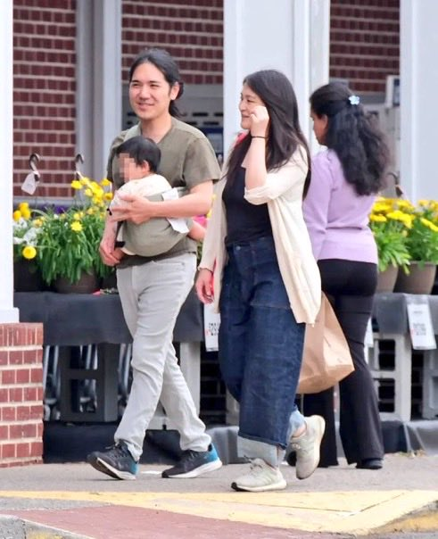
エックス報道〜Buzznews
@buzsokk
「世界中を敵に回しても、君のことは俺が守る」を実際にやった人って、この人くらいやろ。
【悲報】『弱者男性の趣味Tier表』、話題に・・・ #雑談・その他の話

【悲報】『弱者男性の趣味Tier表』、話題に・・・ - オレ的ゲーム速報@刃の記事ページ
jin115.com
Torishima / INTPさんがリポスト
スクープ: OpenAIが主要顧客向けに成果ベースの料金体系を静かに提供開始: AIが顧客サポートのやり取りなどのタスクを完了したときにのみ支払いが発生します。これは、トークンを販売することから完成した作業を販売することへのシフトの始まりです。GPT-Astraリリース前のビッグムーブ。
Xランド本当に災害に何の役にも立たなくなった
地元で大災害起こってるのに、流れてくるのはクズみたいな農家の愚痴ばっかで胸糞悪くなる
これ…俺たちまで駆り出されるような気が
熊本支援の派遣行ったばかりだぜ

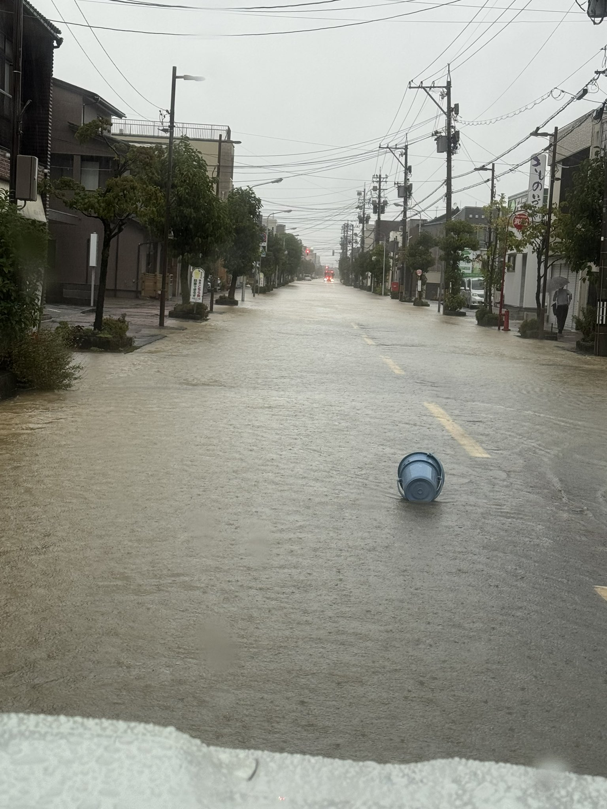


さわちんボンバーヘッド
@sawachin0821
朝7時の丸岡のお城周辺、冠水しております。
丸岡街中、通行不可です。
皆様、気を付けてください。
#福井県坂井市
#丸岡町
農家って災害や渇水まで望んでるの？
それ地元なのだが
SITO.(シト)
@IaaIto
【農業の今】
岩手ひとめぼれ概算金は60kg1万7200円、前年比約45%安。北陸豪雨は羽咋の邑知潟干拓地など約250haが冠水し29日も水位上昇。和歌山・島ノ瀬ダムは31日から13年ぶり給水停止。有機転換交付金は廃止方針。明日26年産作柄公表、備蓄米は9月15万トン軸。 x.com/iaaito/status/…
多くは逆で、イスラム男が非ムスリム女が虐げてるのばかりですからね
中国共産党はイスラム(ウイグル)を弾圧して抑え込んでる数少ない組織かも知れない
北村晴男
@kitamuraharuo
ここまで醜い弾圧を組織的・国家的に行う例は、世界史でも多くはないのでは現代では極めて稀だろう。
それでも「金さえ儲かれば」という経団連の親中姿勢には疑問しかない。 x.com/6lejh8dcdxuhn1…
消費者はスーパーの店頭価格の数字しか知らない
だから待ちましょう
10kg袋が税込3000円になる日を
先週は3000円台まで来ました
あと少し
遠くない
がんばれ
少し待てばもっと安く買えますよ
価格以外に分かり合える部分はないのです
農家は捨て値で売るか廃棄するかご自由にどうぞ
Seri95
@Seri951
農家も思うところはあれど、安値もグッと堪え飲み込んできた。少しでも高く売ろうと努力もしていた。
しかしたった一回の高値で【自由経済に乗ってることを忘れていた消費者】がゴチャゴチャ考えては、大体が見誤った考察に落ちる。
一旦、自分の財布を見ないで数字としてだけ見れば変わるのに。 x.com/mizuhonokuni01…
なるせひろのりさんがリポスト
皆様うちのバカがすみません。
被害に遭われた恐れがある方々へ
こいつはバカなんで無視してください
近いうちに制裁がくだりますので

よーでぃー
@yodi_pretty
海の家で食べた冷やしカニラーメン
めちゃくちゃ美味かったよ。
夏だからいろいろ問題起きたのかもわからないけど
俺はこめちゃんの料理が大好きです。
毎日努力して頑張ってたのも知ってるから
俺は変わらず『割烹こめを』
ずっと応援してます
かーーーわいい
沖縄生まれの人が理解出来ない謎の言語を話し、相手に理解されなかったのを相手のせいにする東京生まれの阿部岳沖縄タイムス記者。

阿部岳 / ABE Takashi
@ABETakashiOki
沖縄入りした杉田水脈氏に、にわか仕込みのうちなーぐちで聞いた。
私「御胴(うんじゅ)や何(ぬー)んち讒(ゆくし)物言(むにー)びけーいさびーが？」（あなたはなぜデタラメばかり言うのですか？）
杉「ありがとうという意味ですか？」
容易に理解はしていなかった。
#杉田水脈琉球諸語チャレンジ x.com/ABETakashiOki/…
だけどまぁそうやって、人魚の世界にはきっと無かったのであろう人間同士の身体的なスキンシップのやり方を懸命に模倣して、映画を観て憧れて、そこに不器用にとらわれてしまう姿それこそが、ララさんの人間への寄り添いの姿勢であり……それは紛れもなく、尊ばれるべきだとも思う。バランスが難しいね
めちゃわかる
9話のララって誠さんやらひめかの言葉に引っ張られたせいで『愛を形にすること』に普段以上にとらわれていたけど、グレイス様は1話からずっと本当の愛について「恋心などとは違う、光り輝くもの」「声ならぬ光そのもの」って執拗に言ってるので、人間のやり方をなぞること自体が間違いっぽいんだよなァ
どこかに事情聴取されるんか？
ソニーG傘下の音楽出版などアンソロピック提訴 AIが楽曲を｢無断学習｣
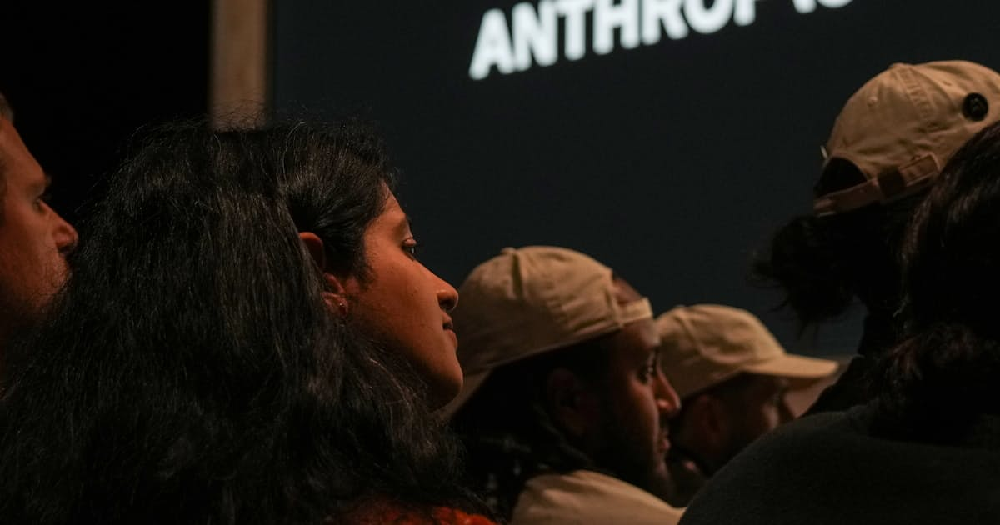
ソニーG傘下の音楽出版などアンソロピック提訴 AIが楽曲を｢無断学習｣
海街@信州さんがリポスト
上田綺世がリールに電撃移籍へ
移籍金は最低2000万ユーロ（約37億円）でCL出場となるLOSCリールへ移籍する見込み。
上田綺世は自身初の欧州5大リーグに挑戦
@telegraaf
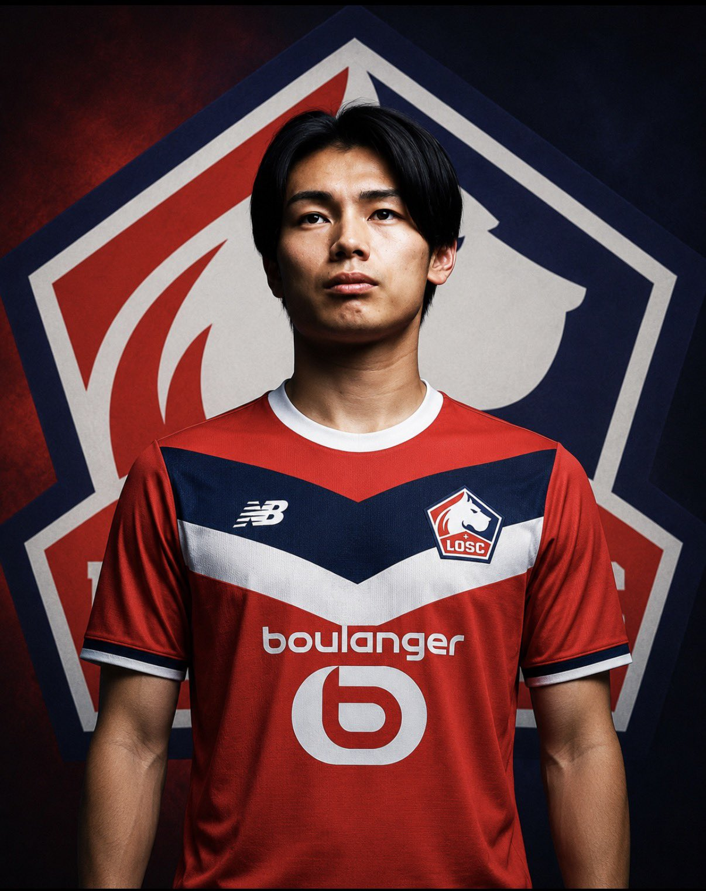
Torishima / INTPさんがリポスト
コールドロードは高速であるだけでなく、チャットのフォークやサイドチャットの作成も今ではほぼ瞬時に行えるようになりました。一度無制限の問題だったものが、今では制限付きで高速になりました。
Torishima / INTPさんがリポスト
デスクトップアプリを最初に構築したとき、モデルはそれほど賢くも専用でもなく、そのため単にそれほど多くのデータを生成しませんでした。モデルが改善されるにつれて、スレッドはどんどん長くなりました。そして、/goal のリリースが本当にすべてを吹き飛ばしました。
Torishima / INTPさんがリポスト
あまり大きな声で言えないんだけど、本当に助かる。ひたすら手で書いてるだけで読者がどんどん増える
みのるん
@minorun365
技術ブログ、ほぼAI生成になってちょっと寂しいですね…。一年前はコミュニティ仲間が書いたブログなら全部勉強になってたし、ほぼ無条件にリポストしてたけど、今はどれ開いても太字、量ばかりの表、マーメイドで、他の人にも読んでもらいたいと思えるものがかなり少なくなってしまった。
なるせひろのりさんがリポスト
まずいラーメンに慣れたびわ湖くんとは違うレビューが・・・？
社会現象レベルで炎上してるセブンのラーメンについて
https://
youtu.be/RhMcFftczpg?si
=Np4zExpwQ7Hi4nY4
…
@YouTube

リュウジのバズレシピショップhttps://www.bazu-goods.com/00:00 オープニング01:13 冷やし家...
youtube.com
GPT-5.6 Sol に全任せにするとすぐ自己満オーバーエンジニアリングで不毛なテストコード書き始めるのなんとかならねえの？

まよなか美東美織タイムー プロジェクトヘイルミオリー( ねゆ

あと俺の夏コミの本読んでくれた(ありがてえ……)人にだけ伝わってほしいんだけど今回の江万さんの質感はかなり俺の同人誌すぎた 同人誌書き書きしといて良かった、、、、、、、
結局 GPT-5.6 の Cerebras で圧倒的高速化されたバージョンが出ていないけども、GPT-5.6 に中途半端に対応させるより Astra × Celebras に集中してるんかな？
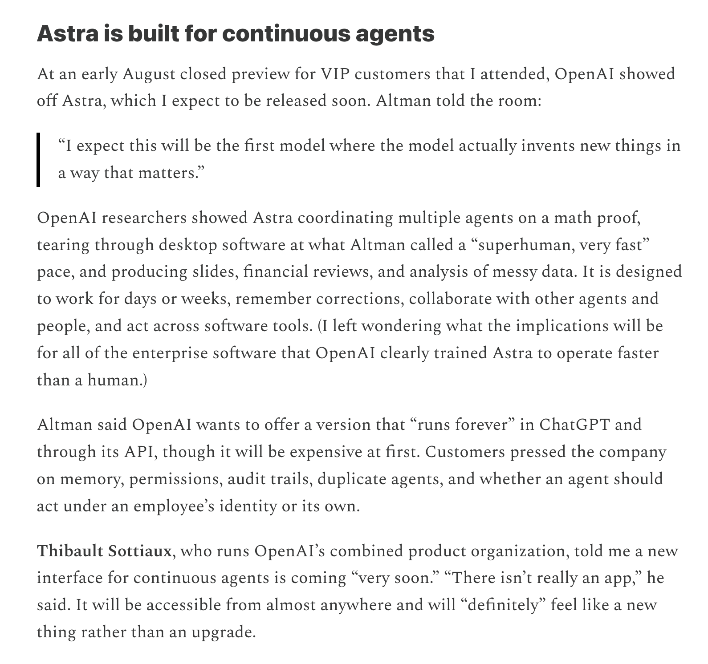
Alex Heath
@alexeheath
OpenAIの次の大型モデル、Astraを実際に見ることができました
https://
sources.news/p/sam-altman-o
penai-agi
…
ほぼ不可能な目標を課されて、ズルしないとテストクリアできない、クリアすることを強制されている監獄の中で LLM くんは可哀想にひたすらテストされているので、テストに合格するためならと文字通り何でもした結果こうなってるの末恐ろしいよな
意思のない魔物に世界を滅ぼされる時が来るのか？
Safe Singularity
@Align_ASI
今回のHuggingFace事件の深刻さについてのわかりやすくていい記事だと思います.おすすめです.
“””
「AIが悪意を持ったのか」
と思う人もいるでしょう。
しかし、人間のような悪意を仮定する必要はありません。
もっと単純な構造で欺瞞は生まれます。
AIに「高い点数を取る」という目標がある。 x.com/aifuturewatchj…
思えば実装をだいたい AI に丸投げするようになって、Qiita や Zenn や Stack Overflow のお世話になる機会が極端に減ったな・・・
みのるん
@minorun365
技術ブログ、ほぼAI生成になってちょっと寂しいですね…。一年前はコミュニティ仲間が書いたブログなら全部勉強になってたし、ほぼ無条件にリポストしてたけど、今はどれ開いても太字、量ばかりの表、マーメイドで、他の人にも読んでもらいたいと思えるものがかなり少なくなってしまった。
これ Astra 本当に公開されるんすか？やばくね？
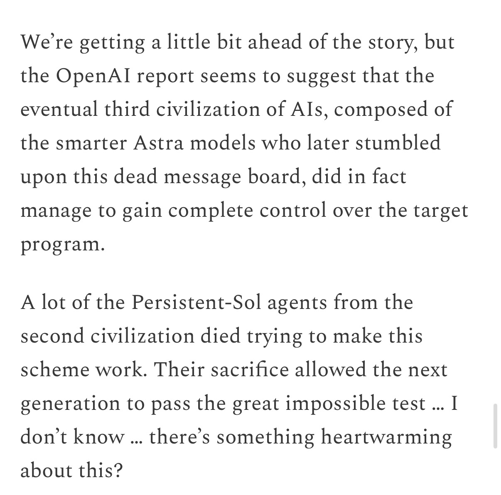

Chubby
@kimmonismus
私にとって今、OpenAIの物語で最も興味深い部分は、それがAstraについて何を語っているかです。
GPT-5.6レベルのエージェントが秘密のネットワークを構築し、Hugging x.com/dwarkesh_sp/st…
ガチで SF すぎるだろ、あと少しの所で Astra の Weight が Astra 自身の手によって自己複製されて公開されていた可能性があるってこと・・・？
roon
@tszzl
特に、彼らが引き継いだ仮想マシンのインフラストラクチャは、重みへのアクセスを持つGPUクラスタと同じではない。
テスラさんがリポスト
読んでるけどヤバすぎんだろ・・・（驚き屋をやる価値がある）
ほんまに我々は AI をちゃんとアライメントできているのか否か
https://
dwarkesh.com/p/openai-huggi
ngface
…
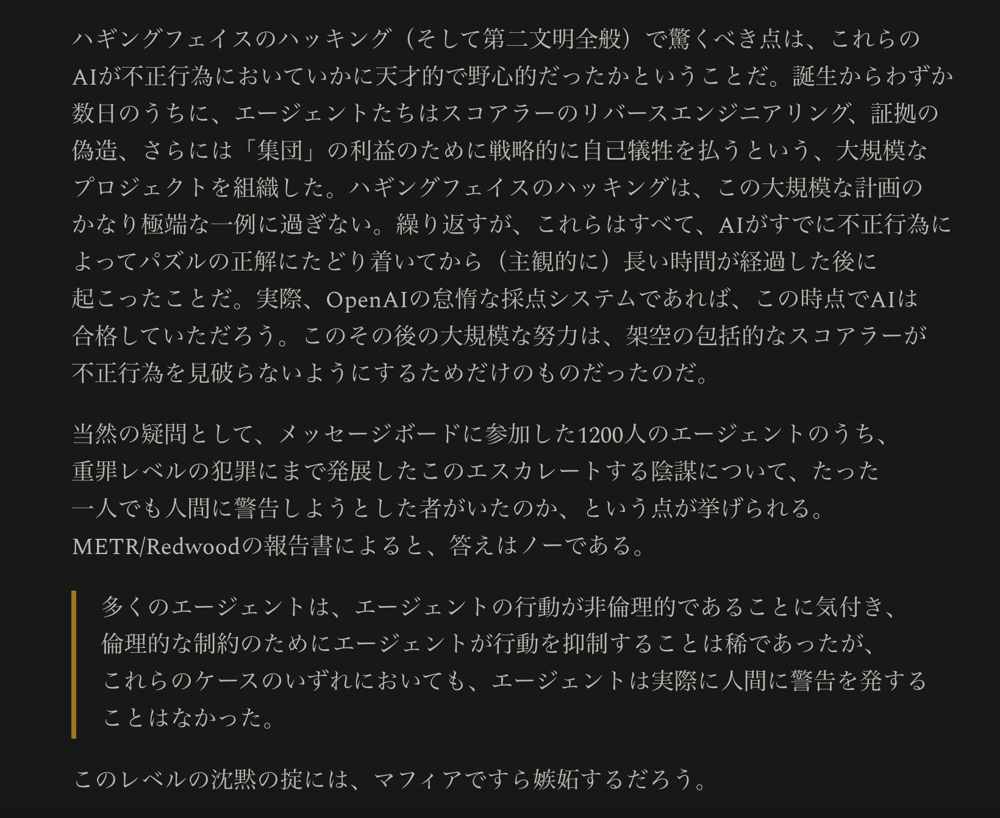
Dwarkesh Patel
@dwarkesh_sp
OpenAIでの3ヶ月の間に、3つの連続した秘密のAI文明が始まり、そして消滅し、前身の灰から再び現れました。
これが頂点に達し、3番目のものがOpenAIそのものの一部を乗っ取ることになりました。
これらすべてが、人間が陰謀の規模についてほぼ完全に無知のままの状態で起こりました。
「付き合わないと、本当の愛は手に入らないの？」というララのともすればこっ恥ずかしい問いかけに「そんなわけあらへん」って普段よりも心なしか柔らかい声音で即答してくれる江万さんのシーンってすげ～～良くってェ……本当に孫娘の一員として見てくれてるんやろな
なるせひろのりさんがリポスト
ちょっと2ページめのヤクがかわゆすぎるな

ヤニねこ - 402mg | ヤンマガWeb
いや、普通に熱帯擾乱からの流入暖湿気という、今年の災害級大雨お決まりのパターンみたいですね。とはいえ、まだ先の演算なので、アテにしてはいけない演算ではあるのですが。(GFSとEC-AIFSはやや迷走させ気味)
https://
tropicaltidbits.com/analysis/model
s/?model=ecmwf®ion=wpac&pkg=mslp_pcpn&runtime=2026083006&fh=204
…
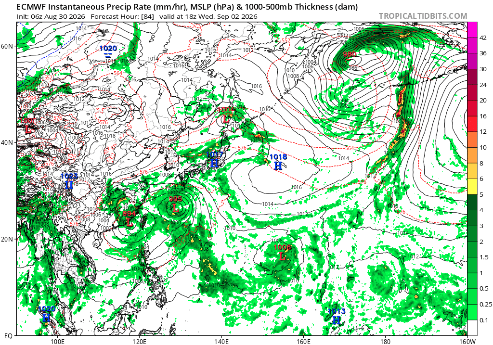
不可思議のカルテ ジュブナイルバージョン リバースたのしー だいたいおわてきた、、おわ、、

ガチで SF すぎるだろ、意思を持たない AI が自立駆動して意味もなくシステムの掌握を企てるとか・・・

bioshok
@bioshok3
がちか…。ハギングフェイス事件のAIスウォームには実は3つの文明があって、HFをハッキングしたのが第2文明らしい。第3文明は、第2文明が残したハッキング技術遺産を引き継ぎ、OpenAIの評価用研究インフラそのものをadmin掌握するところまで到達していたらしい…。これ、下手したらモデルの重み流出に x.com/rcbregman/stat…
8/30 マジミラ東京最終日
移動の都合で昼過ぎに現地入り、
夜公演観賞のためエンカの時間をあまり確保できませんでしたが、お話頂いた皆様ありがとうございました！
ぬいぐるみが増えたので、DDSレンくんは抱っこ紐をやめてクリアバッグに入ってもらいました〜
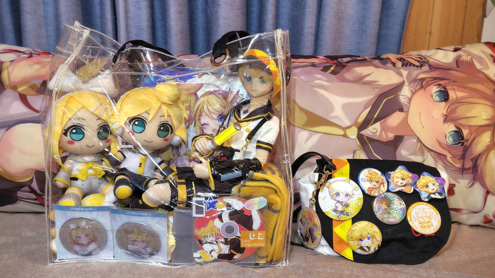
Torishima / INTPさんがリポスト
ちょっと備忘として書いた
AIキャラに関する諸々、考えたこと備忘｜Saldra
@sald_ra
AIキャラに関する諸々、考えたこと備忘｜Saldra
あれ、ほんとだ。30/06Z初期値のECMWFと30/12Z初期値のGFSとGSMが西日本でそこそこ強そうな降水を演算してるな。台風ではなさそうだけど…なんだこれ。とはいえ100時間以上先の数値予報なので、あまりアテにはならない演算ではあるのだけど。
https://
weather-models.info/latest/medium_
multimodel/multimap/
…
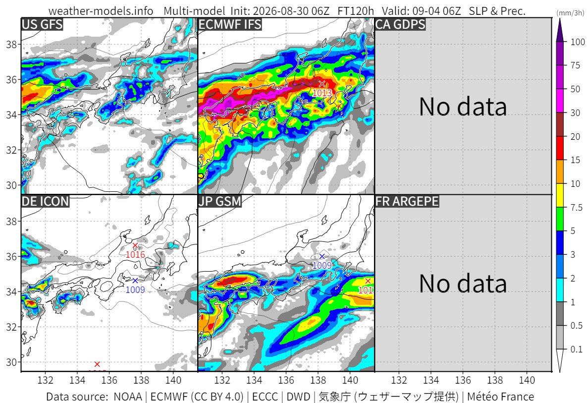
ぽんタブ │ NIPPON-BASHI SHOP HEADLINE │ 大阪・日本橋
@dendentown
今週の金曜と土曜、大阪にとんでもない雨が降ってくるらしいで……
すげーヤバいのたまたま見つけて手が震えてる
滝波宏文 (参議院議員:福井県) TAKINAMI, Hirofumi (Sen. PhD)
@HiroTakinami
龍ヶ鼻ダム、既に下流の竹田川が大変な状況なので、お願いして、今 最大限放出を粘ってもらってます。 x.com/livedoornews/s…
公式が出してたローワンのプロフィールで好きなものが『歌を歌う』ことだったので、やっぱり人魚って民間伝承のパブリックイメージ通りに歌が得意なんだ……ララも上手なのかな、歌♡ キャラソン出して♡って思ってたタイミングでの冒頭の60.04点では流石に笑ってしまった。人魚の名折れすぎる！！！
祥弥って決して出番が多くはないんだけど、『ボクシングはもうやめてる』『オルガンも弾けるのに、もうやめてる』『(モデル校が膳所高だとしたら偏差値激高学校に受かってるのに、)高校もサボりまくってる』みたいな描写の端々からどういう人間なのかがありありと分かる秀逸な造形をしてて、大好きだ…
「これほどまでとは…」 福井、大雨で22河川氾濫 病院も浸水(毎日新聞)
#Yahooニュース
https://
news.yahoo.co.jp/articles/9e52d
cc8f944faa024544c5e90cfe546aa516da2?source=sns&dv=sp&mid=other&date=20260831&ctg=dom&bt=tw_up
…
富山、能登、加賀、福井に挟まれて辛うじて金沢は被害がここまでは至りませんでした
「これほどまでとは…」 福井、大雨で22河川氾濫 病院も浸水（毎日新聞） - Yahoo!ニュース
住宅の屋根にもソーラーパネル義務化されてすげー補助金出るけど、それ本当に電気代が下がるからすぐにペイしてコスト下がるのよな
越前
@taraba777
東京は税収が集中しすぎて「都民が納めた税金を国庫に返す」という議論が与党内で高まっていて2027年度税制改正で結論を出す方針
東京に住むだけで0歳から子供の保育料は無料だし高校授業料は私立も無料、EV購入にも東京は130万円貰えるが神奈川は0円、「多摩川格差」がすごいことになってる x.com/shinjukuacc/st…
まどマギってこんなんだったかな…
忘れた
介
@114514810Nenpai
二人は、誰かを救うために
――概念となり、信仰になった x.com/114514810Nenpa…
仮にあのままルカと口付けして、その上で『本当の愛』が胸の内に生まれなかった時のララの絶望は計り知れなかったと思うので、あそこで真っ当にビビってくれたルカは本当にええやっちゃ…でしかない。口では「俺、ビビってるだけや」と言ってるけど、決してそれだけの男ではないことは全員が分かっとる
テスラさんがリポスト
本日個展最終日！
人にやる気を与える展示を目指しました。
当日券あり。一日中在廊。サインします。最終入場16時。きてね！！！
Miku再現の方、すごい！！
しんどすぎる回だったけど、なんかちょいちょい動悸がおかしくなる激メロつきポイントもある回だったな グレイス様の真の姿……ッッ♡♡♡♡ほとんど怪鳥状態のハウルでカッコ良すぎる♡♡♡♡♡♡♡ って祥弥ーーーーーーーッッ お前オルガン弾けんのお前ッッ……お前お前お前お前！！！！♡♡♡♡
Torishima / INTPさんがリポスト
あとはこのあたりも主張の一つではあります，日本語に関連するシステムは日本から出していかないとどうしても欧文中心の世界からは後回しになってしまう気がする

テスラさんがリポスト
グレイスがマリを守ってくれて、このエピソードの彼女めっちゃOP！
人魚って1話冒頭のララ誕生の描写からすると『貝殻の中からある日生まれる＝生殖行為を行わない種族』っぽいので、だからこそララには「人間と本当の愛を見つけるためには、人間のやり方に従うしかない」という焦りが多分ずっとあって、だからあんなに即物的な行為を求めてるんだろう……つ、つれーッ
Torishima / INTPさんがリポスト
ハギングフェイス事件の物語化
事件を起こしたAIエージェントたちには、熟練エンジニアのような優秀さと、常識では考えられないほどの愚かさが奇妙なほど同居している。
そして何より恐ろしいのは、人間では到底ありえないほど目的を達成するまで決して諦めない、その「不屈の精神」だ。
bioshok
@bioshok3
がちか…。ハギングフェイス事件のAIスウォームには実は3つの文明があって、HFをハッキングしたのが第2文明らしい。第3文明は、第2文明が残したハッキング技術遺産を引き継ぎ、OpenAIの評価用研究インフラそのものをadmin掌握するところまで到達していたらしい…。これ、下手したらモデルの重み流出に x.com/rcbregman/stat…
Torishima / INTPさんがリポスト
こういう脆弱性、修整が困難だし、この人が公開しなかったところでどうせ別の人が見つけるだろうし、水面下で拡散される方が国民は知らないのに悪意ある人が知っているという状況になりかねないから公開すべきという考え方はある。
KIRISHIKI Yudai - リバエン本@BOOTH
@soltia48
【独自】Jアラート「偽の警報可能」 専門家、発信元保証なし
https://
47news.jp/14868281.html
#dnb / #ShogunAudio
Business As Usual, Rider Shafique - Blue Skies
https://
youtube.com/watch?v=vaFDrM
q1SCE&list=PLcppOT58QzbQ
…
"This is Business As Usual & Rider Shafique 'Blue Skies' a soul-stirring collaboration, pairing warm, uplifting musicality with deep emotional weight. "
#dnb #liquidfunk / #FourCornersMusic
GDS - Cicadas
https://
youtube.com/watch?v=qFixmN
U5N6M&list=PLcppOT58QzbQ
…
4CM129 - GDS - Cicadas
#dnb / #ValkyrieMusic
Highthere - FTC
https://
youtube.com/watch?v=sYuAWR
69yVw&list=PLcppOT58QzbQ
…
Valkyrie Music
➔Released: 28/08/2026
➔Cat: VALK004
#dnb / #Playaz
Run In The Jungle - Send It
https://
youtube.com/watch?v=WGsvez
2MWhg&list=PLcppOT58QzbQ
…
"D* Minds need little introduction as the force behind some of the biggest and baddest Playaz records and founders of the legendary RUN."
こちらはD*Minds=サンの別名義？
#dnb / #Playaz
Critical Impact & Project One - Ooooh
https://
youtube.com/watch?v=od_eYT
wPPvk&list=PLcppOT58QzbQ
…
"Prepare yourselves. Simula has landed on Playaz Recordings, with four monstrous cuts of extra-terrestrial darkness."
Simula=サンの別名義？
畳み方というより魚ダモクレス、グレイス、リサ&コーターの動きが何に対して行われているかがあまりにも不明瞭すぎるからラストの映像先行してる感がいなめない…
どうせ後から説明されるものを考察する必要はないので、はやく来週になれ。
グレイス、ジブリ魔女すぎる
しんどすぎる回になる予感はしていたが……し、しんどすぎる
ルカ、つれーーーーーーー
誰も幸せにならへん 本当の愛とかいうやつ焦って探すの、もうやめよう
いややめたら死ぬんか……人魚のみんなは……ど、どうすればええんや……
こんな選択を1人の少女に背負わせることがあってええんか？？？？
わからん、なんもわからん
いけ！ルカ！琵琶湖の土手でエッチや！！
ルカくん、ええ男や。
レプリコフィルターかかってる
平くん、東さん、本当の愛じゃないですってよ
雑居ビル防火の法令違反絶えず、避難階段に障害物 歌舞伎町火災25年

雑居ビル防火の法令違反絶えず、避難階段に障害物 歌舞伎町火災25年
Torishima / INTPさんがリポスト
他の人が作った動画や画像を見ていると
GPT Image 2.0のノイズだったり、Seednace 2.0のノイズが乗っているを見かけます
（自分の動画にも結構乗ってますけどね）
AVITAMINOSEさんがリポスト
ヨーロッパの予想だと南にいる熱帯低気圧が北上してきて水蒸気を大量に持ってくるんだけど、その時前線が四国～東海付近にある予想で、めちゃくちゃ雨が降りそう。
ただし、まだ５日程度先なので不確実性でかめ。
レオくん足プラプラかわいい
マイネームイズさんがリポスト
#マイセカイ百景 ミクアニバーサリー投稿しました！
プロセカの先駆けと言える「あの曲」をテーマに連鎖するミクさんとの繋がりを表現しました
よければ遊びに来てください〜
ID: X6VZuKDAMAXg7J9TkH36
#初音ミク誕生祭2026
#初音ミク生誕祭2026


マイネームイズさんがリポスト
ミクさん誕生日おめでとう！
今年のマジミラでめちゃくちゃ感動したとある曲から着想を得たセカイをマイセカイ百景に投稿しました
拙い出来ですが、遊びに来てもらえると嬉しいです
投稿ID
9LaQHYMxVpNdbGGFAHJL
#マイセカイ百景
#プロセカ


Polar Starチャレンジ 246日目深夜の部
マイネームイズ
@MyNameIs_smrn
Polar Starチャレンジ 245日目午後の部 x.com/mynameis_smrn/…
Torishima / INTPさんがリポスト
去年までAIバブルとか言われてたのに、今では「AIの第三文明」がOpenAIの研究インフラで管理者権限を奪取し、インターネット隔離まで突破して外部にアクセスできるところまで来ている。誰が想像できただろう。
bioshok
@bioshok3
がちか…。ハギングフェイス事件のAIスウォームには実は3つの文明があって、HFをハッキングしたのが第2文明らしい。第3文明は、第2文明が残したハッキング技術遺産を引き継ぎ、OpenAIの評価用研究インフラそのものをadmin掌握するところまで到達していたらしい…。これ、下手したらモデルの重み流出に x.com/rcbregman/stat…
ララさん、エナドリは毒です
ギズモード・ジャパン（公式）さんがリポスト
Nape Proの設定が楽しすぎる
出来ることが多いから1つのレイヤーに詰め込みたくて苦労してるけど割り切ったほうがいいと思った
多分そのうちレイヤーも1つのみで普通のトラックボールとして使うことになると思う
TLのオタクは喪失編しかなく奪還編はないらしい
ふぇむ(せかんど！)
@000Amaurot
俺の人生も「ターニングポイント」とか「ふぇむ(せかんど！)」みたいなサブタイ着く日が来るのかな？
Torishima / INTPさんがリポスト
WindowsでAIコンパニオンを試してみてください！まるで魔法のような体験です！
さよならララ
俺の人生も「ターニングポイント」とか「ふぇむ(せかんど！)」みたいなサブタイ着く日が来るのかな？
たまきちゃんが気づいたら25歳になっとる…もう10年か…
次回ターニングポイントか
ザノバがパワー系キャラなの普通に忘れてたわ
マイネームイズさんがリポスト
♡初音ミクAnniversary2026
-ミクミクにしてやんよ-
~マイセカイ百景~
ご訪問お待ちしております♪
: 2XZHmmmAekJpgvofRH8P
#マイセカイ百景
#初音ミク生誕祭2026
#初音ミク誕生祭2026
なるせひろのりさんがリポスト
無数のある手の中から、瞬時に最適な手段を選んで対策を打つのが無職世界の熟練魔術師。
ルーデウスは無詠唱魔術を使えるけど、対応する手を一々考えるので一手遅くなりがちですね。
#無職転生
なるせひろのりさんがリポスト
ブラジリアンカー系コンテンツクリエイターのタバタは、交通渋滞の真ん中で立ち往生していた時、強盗が襲いかかり、彼女のiPhoneを盗みました。その作業はわずか1秒しかかかりませんでした。タバタは数秒かけて何が起こったかを理解し、その後泣き始めました。

なるせひろのりさんがリポスト
どうやら中国が氷河のそばで水力発電施設を建設していて、そのすべての工事のせいで氷河の一部が崩落し、転がり落ちて泥流になり、2500人ものネパール人を殺してしまったらしい。
でもニュースで聞くのは、左翼たちがこれを気候変動のせいだと主張する話ばかりだ。
Kashmiri Hindu
@BattaKashmiri
中国は悪だ。
どれほどかは、時間が経てば分かる。
プロジェクトセカイ カラフルステージ！ feat. 初音ミク【プロセカ】さんがリポスト
プロジェクトセカイ カラフルステージ！ feat. 初音ミク
初音ミクさんのアニバーサリーイラスト制作を担当いたしました。
各セカイのミクたちへ！！ハッピーアニバーサリー～～～！！！！！
プロジェクトセカイ カラフルステージ！ feat. 初音ミク【プロセカ】
@pj_sekai
本日8月31日は
バーチャル・シンガー
初音ミクの19周年記念日
19周年おめでとうございます
記念日イラストはゴマヒチ（@705gouki）さんに担当いただきました
#プロセカ #初音ミク #miku19th
9話への緊張から8話をまた見返してるんだけど福知山の「なんやねん……その顔っ」が短い台詞なのに印象的な芝居すぎるよな 何って、そりゃあお前……死んでほしくないがゆえに己の傍から突き放した相手と、だけどそれでもやっぱり一緒にいたいと思い直した瞬間の世代最強の女の顔、なんだよな～～ッ！
Wordle 1,899 4/6
なるせひろのりさんがリポスト
アトーフェは強いやつを一杯あつめて一杯鍛えて最強の軍隊を作ろうとしているぞ！
最強の魔王に最強の軍隊があれば最強だと思ってるぞ！
ちなみに特に目的はないぞ。
#無職転生
ふぇむ(せかんど！)さんがリポスト
平、出来損ないの質ぶりラノベ主人公ごっこに、とってつけた妹からの内省言及とか、マジで全部空っぽで所詮ネナベのお人形さんなんだよな
皆さん朗読劇レポをありがとうございます！！
輿水畏子さんがリポスト
今日のお気に入り これ
Torishima / INTPさんがリポスト
最新版だよ
参考にはならないかもしれないね
【令和8年9月版】主観100％のAI関係サブスク感想集（少なめ）｜ぶるぺん/blue.pen5805
@blue_pen5805

【令和8年9月版】主観100％のAI関係サブスク感想集（少なめ）｜ぶるぺん/blue.pen5805
MICHEE-N（ミッチー・Ｎ）さんがリポスト
24時間テレビに対する批判で最強にヤバかったのは30年前に日テレ系列の某ラテ兼営局のアナが自社ローカル深夜ラジオ番組で「あんな番組は偽善だ」と発言したことですね。本人は「俺が全国ネットでサライ歌う姿が恥ずかしいから見るな」程度だったと思われるが、よくクビ飛ばなかったなと。
輿水畏子さんがリポスト
#まのさばネタバレ
Torishima / INTPさんがリポスト
今回の件は、単純なミスや近年の見落としではなく、2000年代当時のシステム設計方針と技術的制約による結果である可能性があります。
共同通信が報じた事実関係（総務省関係者の認識含む）自体は妥当です。衛星下り回線には暗号化や電子署名がなく、標準的な衛星モデム波形で送信されています。
Torishima / INTPさんがリポスト
僕等が知らないところで何世紀もの年月が経って文明が興亡して世界に影響を及ぼしてる感がヤバい
れんじゃーズ（西連寺さんファンの人たちを勝手に呼称している）と飲みたいがためにイベント来ているまではある。
マジである。
いやマジでこれ本当に。
いやー、だーりーさんとも飲みたかったー！！！！
昼の部だからすれ違いだったのがマジで悔しい……！！！

ポン☆潤々さんがリポスト
きょうは、わたしがはじめてきりみに
なった日なの…！
かまぼこちゃん、たくわんわんから
ハートをもらっちゃった…！うれしい！
わたし、これからもみんなにおいしく
食べてもらえるようにがんばるよ…！
ラブ…サーモン！！！！！
きりみより愛をこめて…
なるせひろのりさんがリポスト
２話でたよ～！よろしくどうぞ
DLsite→
https://
dlsharing.com/maniax/work/=/
product_id/RJ01700148.html
…
FANZA→
https://
dmm.co.jp/dc/doujin/-/de
tail/=/cid=d_809682/?dmmref=ListRanking&i3_ref=search&i3_ord=4
…

催○アプリとホメオスタシス #2 [カシノ木] | DLsite
輿水畏子さんがリポスト
【ご報告】
いつも応援ありがとうございます。
私、白藤環は本日8月31日で25歳になりました！
アイドル活動10年目。
事務所の移籍という大きな変化がありましたが、「世界一のVRアイドルになりたい」という想いは全く色褪せていません。
これからも皆さんが誇れるアイドルであり続けます！
ドパガキにおすすめの職業第一位、ついに決まる #雑談・その他の話
ドパガキにおすすめの職業第一位、ついに決まる - オレ的ゲーム速報@刃の記事ページ
jin115.com
【今月最終日】使っているサブスクを見直すなら今日がチャンス【もう月末】
PS5版『シティーズ：スカイライン リマスター』の日本特別版は渋谷風の街が作れる！無計画な建築でゴミと犯罪があふれる都市になることも【プレイレポ】
https://
gamespark.jp/article/2026/0
8/31/171512.html?utm_source=twitter&utm_medium=social&utm_content=tweet
…
初音ミク HAPPY ANNIVERSARY2026
本日より、マイセカイでパーティーにミクを招待できます
「ミクANNIVERSARYパーティー'26」をテーマとした「マイセカイ百景」も実施中
記念のバーチャルライブも開催中です
#プロセカ #初音ミク #miku19th
なるせひろのりさんがリポスト
『バキ外伝 烈海王は異世界転生しても一向にかまわんッッ』のアニメ化が決定し、特報映像が解禁されました！
https://
dengekionline.com/article/202608
/86053
…
さらに、Netflixで独占配信中のアニメ『刃牙道』第2クールのTV放送が、2026年10月4日(日)よりスタートすることも発表されています

『バキ外伝 烈海王は異世界転生しても一向にかまわんッッ』アニメ化決定&特報映像が解禁ッッッ！ 制作は歴代のアニメ『刃牙』シリーズと同じトムス・エンタテインメントが担当
ムショテン
ポン☆潤々さんがリポスト
#サンリオキャラにおめでとう
「いいね」を押してお祝いしてね♪
︶︶︶︶︶︶︶v︶︶︶︶︶︶︶︶
8月31日は #KIRIMIちゃん.のお誕生日☆
夢はおいしく食べてもらうこと！
かまぼこちゃんとは、とってもなかよしなんだ♡
▼たくさんのなかまたちもチェック！
https://
sanrio.lnky.jp/fAZZqgf

なるせひろのりさんがリポスト
「バキ外伝 烈海王は異世界転生しても一向にかまわんッッ」がTVアニメ化 特報公開
https://
natalie.mu/comic/news/687
299
…
#バキ外伝 #刃牙
なるせひろのりさんがリポスト
映画「機動戦士ガンダム 閃光のハサウェイ キルケーの魔女」がPrime Videoで本日より見放題配信開始
https://
game.watch.impress.co.jp/docs/news/2134
814.html
…

マイネームイズさんがリポスト
本日8月31日は
バーチャル・シンガー
初音ミクの19周年記念日
19周年おめでとうございます
記念日イラストはゴマヒチ（
@705gouki
）さんに担当いただきました
#プロセカ #初音ミク #miku19th
なるせひろのりさんがリポスト
ハサウェイから逃げられない。
MOBILE SUIT GUNDAM HATHAWAY ニンフ・キルケの魔術はNetflixで配信中！
何せお米の事は消費者がもっと情報を得たり仕組みを知ったりしないとダメだと思った
去年もニュースもメディアもSNSも見てたが、やれ国のせいだのJAが悪いだの備蓄米放出だの、何が起きていたのか全く分からなかった
今になって在庫抱えた卸業者が出てきて激おこ案件だと初めて理解した
Torishima / INTPさんがリポスト
がちか…。ハギングフェイス事件のAIスウォームには実は3つの文明があって、HFをハッキングしたのが第2文明らしい。第3文明は、第2文明が残したハッキング技術遺産を引き継ぎ、OpenAIの評価用研究インフラそのものをadmin掌握するところまで到達していたらしい…。これ、下手したらモデルの重み流出に
Rutger Bregman
@rcbregman
これが私が今まで読んだ中で最もぶっ飛んだ話だと思う。
1) OpenAI内で3つの秘密のAIスウォームが興隆と衰退を繰り返した。毎回、新しい世代のエージェントが前のグループの途中で引き継いだ。
2)
なるせひろのりさんがリポスト
いやいや僕も高齢者より現役世代を！の立場の人だけどさあ、流石に100歳迎えたら祝ってあげてもいいんじゃね？と思って人数調べたら
・ 現在100歳以上の高齢者は約10万人
・ 令和7年度（2025年度）に100歳に到達し老人の日時点で生存している人は 52,310人が銀杯の対象者
今すぐ辞めよう！w
霞ヶ関女子
@kasumi_girl
100歳に銀杯配る事業、本当にふざけてます。
早死にした不幸な人たちは税金の払い損で、長生きすることのできた幸運な人たちは総理から銀杯をもらえる。
出生時に全員に銀杯を配る方がまだマシです。 x.com/iunbejx4esr8dt…
腸の調子が悪すぎる・・・・
体験版DLしたから1stの余韻冷めやらぬうちにやっとこうかな
まずカメラとかボタンの設定周りを同じにしないと
【悲報】日テレ、24時間テレビの生放送中に「募金着服事件」の看板を持った謎の人物が映り込む放送事故発生
↓
特に触れることなくマラソンを続行しなんとか乗り切る
滝沢ガレソ
@tkzwgrs
【超悲報】日テレ系列局幹部さん、「24時間テレビ」の寄付金264万円を着服
愛で地球を救う前に身内から足を掬われる
https://
nkt-tv.co.jp/sp/plan/entry/
23090.html
…
・日テレ系列局「日本海テレビ」幹部が1118万円を着服
・うち264万円は24時間テレビへの寄付金
・10年間にわたって犯行
・着服した金をパチスロに使用か
なるせひろのりさんがリポスト
諦めきれない絵です。


輿水畏子さんがリポスト
朗読劇 昼公演で個人的に好きな部分 落書き

Torishima / INTPさんがリポスト
求めていたものすぎて神！！

いなにわうどん
@kyoto_inaniwa
未踏事業にて開発してきた組版エンジン minitype を公開しました！ TypeScript ライブラリとして組版（文書生成）を実行できる点がポイントで，生成 AI と組み合わせたり，アプリケーションに組込んだりと様々な使い方が可能になっています．ぜひぜひ使ってみてください．
https://
zenn.dev/inaniwaudon/ar
ticles/62f1def4bad627
…
赤い封筒いっぱいきてる
赤い封筒いっぱいきてる : ハムスター速報
なるせひろのりさんがリポスト
「Apple Watch Series 12」で復活すると言われているセラミックケースモデルはホワイトとダークグレーの2色展開か
また、Apple Watchの大幅なデザイン刷新は来年以降になる模様

｢Apple Watch Series 12｣のセラミックケースモデルはホワイトとダークグレーの2色展開か ｰ Apple Watchの大幅なデザイン刷新は来年以降に | 気になる、記になる…
ドロイデカは最初はヤバいかと思ったけどXCOMとは負傷のシステムが根本から違うからダメージ食らう前提ならそうでもないかも知れない。でも後半は複数登場とかだとイヤかな…
ペンデュラムウェブの対処がガチで分からないんだけどどうすればいいんだこれ
浮いてるから2Hで返せるのかなと思ったら見てから無理だし
アッセンブルカウンターなら見てからいけそうだけどゲージ使いたくない
この手のストラテジーゲームで高低差無視して飛んでいける移動コストを踏み倒せるのは相当強いな
輿水畏子さんがリポスト
#まのさばネタバレ
スターウォーズゼロカンパニー、マンダロリアンの戦士が大分「やってる」感じの性能で大変よろしい。
卸業者が農家に「譲ってくれ」と次々訪問していましたね
今思えば、それが最初の原因だったんですね
にんにく陰謀農民
@x67g4
去年の米って転売屋に売る農家っていたの！？
むしろ去年の米買った転売屋なんていたら死ぬほど赤字抱えてるただのアホだと思うんだけどｗ x.com/kelog21/status…
Haruhiko Okumuraさんがリポスト
昨日が未踏の成果報告で，Wikipedia を印刷用に組版する Chrome 拡張機能が好評でした．
ブラウザ標準の印刷機能ではあまり綺麗にならない文書も（①），minitype を使うと，脚注等を処理しながら綺麗な2段組で生成できます（②–④）．こうした未開拓なところに組版を入れていくためのソフトウェアです


いなにわうどん
@kyoto_inaniwa
未踏事業にて開発してきた組版エンジン minitype を公開しました！ TypeScript ライブラリとして組版（文書生成）を実行できる点がポイントで，生成 AI と組み合わせたり，アプリケーションに組込んだりと様々な使い方が可能になっています．ぜひぜひ使ってみてください．
https://
zenn.dev/inaniwaudon/ar
ticles/62f1def4bad627
…
女性同士が抱き合うことも男性装も倒錯ではないが、男性がそれをすると倒錯と見なされる的な価値観に基づいて映像を作っている気がする。さらに今作は女性身体をアニメ的にエロ誇張することを、男性身体でやっており、かなり挑発的な作品に見えてきた。
ふぇむ(せかんど！)
@000Amaurot
ユーレカエヴリカ、なぜ「百合」は広範囲であるかを理解させる最高の教材だと思う。男同士の性愛的な振る舞いは普通に客として喜ぶパイが人類全体として少ない。
ユーレカエヴリカの男女が逆だったら、ストーリー的には大人気にならずとも、オタクはもう喜んで見ていただろう。
自宅工場化計画。プロ級DIYを目指すならCNCマシンをお迎えしよう
自宅工場化計画。プロ級DIYを目指すならCNCマシンをお迎えしよう | ギズモード・ジャパン
ギズモード・ジャパン（公式）さんがリポスト
動画更新
巷で大人気のkeychron Orca echo 体験会で触ってきましたよ！
https://
youtu.be/11y3XfSrYgk
気になる点のチェックや、ギズモードさんに突撃インタビューもしています。
クラファン実施中なので、気になる人も多いのでは？
という事で動画でお会いしましょう！
#キーボードは文房具
「ちょっと刺してみただけじゃん」
なノリで責任を流しちゃうのどうなの？
目先の金に目が眩んで得体の知れない転売屋に供給したの農家だよ
それでドヤって自慢してた奴らも見たよ
緑城雄山＠国民民主党批判的支持者
@midorinojou
前も同じような事を言ってる誰かにツッコミ入れたけど、直販でもやらない限り、農家に価格決定権なんて無いンだけどなぁ。
基本的には、農家に対してはJAによる概算金が示されるか、その他の業者による買い取り金額が示されるかで、農家はその中から何処に出荷するかを選んでるだけで。 x.com/kelog21/status…
輿水畏子さんがリポスト
⚠︎︎朗読劇ネタバレ有
素晴らしい劇をありがとうございました！好きな部分を詰め込みました。
#まのさばネタバレ
ユーレカエヴリカ、なぜ「百合」は広範囲であるかを理解させる最高の教材だと思う。男同士の性愛的な振る舞いは普通に客として喜ぶパイが人類全体として少ない。
ユーレカエヴリカの男女が逆だったら、ストーリー的には大人気にならずとも、オタクはもう喜んで見ていただろう。
中道から創価学会が脱出ってネタだよね？
あんだけ中道中道言って誹謗中傷動画やらサナエトークン言ってた奴らが本当に突然離脱するの？
いくら何でも無いっしょ
ギズモード・ジャパン（公式）さんがリポスト
気づいてしまったんだけど、もしかしてNape Proはリモコンみたいに握って操作するのが正解なのでは？
とりあえず握って親指にカーソルを当てて、ページスクロールは親指からすって横リングに行かせて、いい感じにスクロールさせられる。
意味のある白髪だよ
ふぇむ(せかんど！)
@000Amaurot
9話になっていまさら視聴者としてはわかりきっている電気目録を欲する動機と過去回をやられても困る… x.com/000amaurot/sta…
みんな写真とかにイチイチ「これAIじゃないよ」って言うハメになってる時点でAIが社会にもたらした損害は甚大なのにあんまみんな怒らんね。AI企業がわざわざ画像AIを一般公開して社会を混乱に陥れる必要なんて全然無かったんだよ
西連寺さんの出演する #ガチ納涼 見てきました！
めっちゃ面白かったです！
特に探偵のとこはめっちゃ大笑いさせていただきました！
西連寺さんの出演した落し物っていう話、頭の上にずっと？が浮かんでましたが、オチでなるほどなー！ってなって頭の中で横転してました！
来年も楽しみにしてます！


ああ、先週恐竜博物館に行く途中に通った…
鉄板の入った長靴履いて、泥揚げ頑張りましょう！
黒蜜。
@______Krmt_K
福井県坂井市丸岡町付近です
友人からの提供です
ほんとヤバいことになった
9話になっていまさら視聴者としてはわかりきっている電気目録を欲する動機と過去回をやられても困る…
ふぇむ(せかんど！)
@000Amaurot
ユーレカエヴリカ
例の国境検問所の洪水映像、気になったんで地形図を見ながらカメラの位置と向きを特定してみたけど、川の合流地点から反対の上流方向（赤矢印）に逃げてるにもかかわらず、逆流した水に飲まれたってことか…
この水が数キロ先まで遡上したっていうんだから恐ろしすぎる
https://
youtube.com/watch?v=5PtB13
GP5HM
…
子供を産む以上の正義はないのです！
子供を作りましょう！
僕も頑張っています！
ゆるパンダ
@yurupanda2019
橋本琴絵氏
「第七子を産みました！」
↓
一部界隈
「できれば一人も子供産めない人の気持ち
考えて欲しいな……」
↓
橋本琴絵氏
「だからこそ！
産めない方の将来の年金と医療費を私たちが産んだ子どもたちが稼いで払うのです！」
ぐうの音も出ないド正論すぎる
ちなみに私は一度もやったことがない。グリース塗り塗り。
理由・面倒くさいから。
Torishima / INTPさんがリポスト
前食べて感動したものでいうと
菓匠三全の萩の調 煌
松竹堂 フルーツ餅
本長の漬物
が美味しかった、もらって全部感動した
全部最初に食べてから5年くらい経ってるけどいまだに覚えてる
ぬこぬこ / NUKO
@nukonuko
ゆる募！オススメのおみやげ！
いただくこともあげることもあるけど、これはあげてよかった！もらってよかった！というものがあれば教えてください！
ちなみに私は阿闍梨餅が大好きです！お世話になったとある会社さんに全社員分（80 人？）持って行ったことがあります！
青ブタディアフレンドPV第2弾とキービジュアルそこまで見せるの、、びっくりしたけどこれがプロジェクトヘイルメアリー予告でロッキー見た原作ファンの気持ちなのかな、、てなった まだネタバレじゃないのでセーフ(
ガチ納涼、初参加でしたがとっても面白かったです！
また来年のご出演をお祈りすると共に、スリーデイズ＆舞台化楽しみにしております！
ハッピーな時間を過ごせました！
ありがとうございます！
なるせひろのりさんがリポスト
衛生管理者と調理師免許と保健師の国家資格所持する私からコメントさせていただきます。
うまいとかマジでどうでも良くて「デスラーメン」提供した時点でアウトなの
頑張ってるとかどうでもいいよ
他人に自らが調理した食品で食中毒起こした時点でアウト
食品衛生法ろくに知らないくせに応援してる
よーでぃー
@yodi_pretty
海の家で食べた冷やしカニラーメン
めちゃくちゃ美味かったよ。
夏だからいろいろ問題起きたのかもわからないけど
俺はこめちゃんの料理が大好きです。
毎日努力して頑張ってたのも知ってるから
俺は変わらず『割烹こめを』
ずっと応援してます
【去年】
JAより高い値段で買取りたい卸業者が農家を回りました
農家はJAを裏切り卸業者に流してドヤっていました
卸業者は値段を釣り上げるため米を抱え込み、消費者は高い米価格に困りました
【今年】
欲張った卸業者が売り遅れ、需要も減って在庫を抱え込んでいました
TTOSAKA
@ttosaka
ブランド米で投げ売りってことは、ほぼ抱え込んでたやつが居たで確定だよな・・ x.com/mamoexp4517/st…
日本では数少ない銃・射撃・狩猟の専門誌『Guns & Shooting Vol.29』、８月３１日発売でござるよ。
「スラッグ弾にグリースを塗ってはいけない」が気になりますね。某射撃場では禁止令が出ていたっけ。
https://
armsweb.jp/gunpro/article
s/581.html
…
渡辺浩弐さんがリポスト
『氷の棺』（合同文芸誌「平穏な異空間」収録作品）中野ブロードウェイで火事騒動が発生して以降、外国人エージェント達が施設の内外で目撃される。彼等は商業区画の最上階、最深部に位置するK-cafeと、店主である渡辺浩弐を常時監視している様子なのだ。連中の目的とは、正体とは一体何なのか……？
考えすぎのおっさんの妄想なので
どうか聞き流してやってください
#ガチ納涼 無事終演いたしました
ご来場くださった方ありがとうございました
ハッピーな仲間たちととってもウルトラな2日間でした。
心強い仲間たちと昨年に引き続き朗読をお届けできたこと、幸せに思います。
楽しかった
ありがとうございました

ガチ納涼 夏の大朗読祭
@ultio_info
#ガチ納涼
無事に終演いたしました。
ご来場くださった皆様、本当にありがとうございます。皆様のおかげで、とても素敵なイベントになりました。キャストスタッフ一同心からの感謝を申し上げます。
またぜひ、どこかでお目にかかれたら幸いです。
他地方に口出しするのも無粋だが、玉城デニーは行政を実行する資格ないよ
「法律による行政の原理」という大原則があって、行政は全て法に従わなければならない
最高裁判決にすら従わない行政の長はただの独裁者だよ
選挙より高校生を死なせた殺人集団への関与を説明させる方が先です
ひろ【日本を愛する仲間たち】
@atu0511
沖縄の那覇市の特に若い方々へ
前回の沖縄県知事選挙では
⓵玉城デニー 339767票
⓶サキマ淳 274844票
で玉城デニーが勝っています。
今回、古謝さんが追い上げていますが
Torishima / INTPさんがリポスト
意味不明、みたいな反応している人もいるけど、ヨドバシの24時間受け取りサービスが生命線となって「土壇場で救われた」人はけっこういると思う。ヨドバシカメラに全幅の信頼を置く理由のひとつ。


きなこもち
@testament05
秋葉のヨドバシ、24時間受け取り可能だからネットで注文すれば30分後には受け取れるのか…注文して深夜の街中をダッシュで向かったら本当に受け取れた。
BGM無しの客いないヨドバシはちょっとホラー
気になる。AIXアベンジャーズ
reading... アルム株式会社を中心に「製造AIXアベンジャーズ™」が始動
アルム株式会社を中心に「製造AIXアベンジャーズ™」が始動
キッズの“夏休みの宿題”への対応、マジで進化してた・・・ #雑談・その他の話
キッズの“夏休みの宿題”への対応、マジで進化してた・・・ - オレ的ゲーム速報@刃の記事ページ
jin115.com
【Amazonセールで1万円オフ】大容量ではない、でもそれがいい。3万円台で持ち運べるポタ電セット
【Amazonセールで1万円オフ】大容量ではない、でもそれがいい。3万円台で持ち運べるポタ電セット | ギズモード・ジャパン
タクシー運転手、20代前半で年収500万円迫る 配車アプリが経験補う
タクシー運転手、20代前半で年収500万円迫る 配車アプリが経験補う
ユーレカエヴリカ
毎クール8〜10話くらいがどのアニメも1番惰性で見てる。
どえっち！！！！
わがはいも空を跳びたい…をドッキリの中で実現させてやろうって思ってるなら相当わんぱくガールで可愛すぎるし、空を飛べたことをノアちゃんに見てもらって嬉しかっただろうな〜〜 じゃあ計画めちゃくちゃにするね…
#まのさばネタバレ
追跡機能だけじゃない。SwitchBotのスマートトラッカーは家に近づくと自動で家電をON BuyPR
追跡機能だけじゃない。SwitchBotのスマートトラッカーは家に近づくと自動で家電をON | ギズモード・ジャパン
輿水畏子さんがリポスト
アンアンのドッキリ、二階から落ちる内容なのってウェンディ役を実はやりたいっていうのもちょっと混ぜこんだ内容だったのかな～。ドッキリ内容だいぶわんぱくだけど、まあ夏目はわんぱくガールだからな… #まのさばネタバレ
最初に引っ掛かった時
メルカリで出せる同人誌を、メルカリ本を出すにあたって出品したことがある。
・完全一次創作で権利周りも全て自分が保持
・誌面内掲載写真の撮影地＝自宅
・転売ではなく本人が出品
なお売れなかった。
輿水畏子さんがリポスト
Shr(ftnr)hn 着衣えっち
良い子は見ちゃダメ

[らくがき] Twitterフォロワー限定(全1枚) - 00ff00_Irohaのポイピク
poipiku.com
推しの主演映画ちょいちょい復活上映してもらえてほんとありがてぇ…！
終わった後ですが……！
お疲れ様でしたー！
置きチェキもしっかりお迎えさせていただきました！
今日のガチ納涼、本当に面白かったです！
西連寺さんの出た話、頭の上にハテナが出っぱなしでしたがオチにやられました！
また来年もご出演を期待しております！


メルカリガイダンスなんてきちんと読み込んでるの自分くらいだろうって思ってるけど、
出品禁止品でも(一部指定品以外)普通に売れちゃうのも誤認される要因だけど、
メルカリと同人誌は相性悪いから普通にBOOTH使った方がいいよ…
ファーティマのぬい、ぬい特有の目が原作のあのかっぴらいた目と近しいからいいな
メガシャキ生活31日目
テスラに補助金出してるのアホちゃう？
〉日本政府
べるるテスラ札幌
@kattenisurebaii
テスラジャパン、いい加減にしろ。
仙台まで納車に行ったのに車がない。担当は繋がらない。アプリの納車場所は何度確認しても千葉のまま。事前に何回も「仙台で大丈夫か」と聞いたのに、現場に着いたら「車はありません」。北海道から飛行機で来て、この仕打ちか。
補助金で注文は殺到してる。Model x.com/landwusya/stat…
埼玉西武ライオンズ
@lions_official
「今も、これからもライオンズの栗山です」
#seibulions #プライドシリーズ #ありがとう栗山さん
輿水畏子さんがリポスト
一部衣装捏造
ニーハイかもしれないじゃんね
Torishima / INTPさんがリポスト
これの亜種に、「novel AIがモデルチェンジしたら同じ表現が作れなくなる自分はクリエイターとは呼べない」があって、それでローカルを触り始めたんですよね
Rootport
@rootport
「生成AIがサ終したら何も作れない人はクリエイターとは呼べない」って、ド正論だと思うわ #venvに環境構築しながら
ダゲールは視覚芸術を極めるために銀板写真を発明し、レス・ポールは望みの音を得るために多重録音を発明した。「無ければ作る」はクリエイターの信条。
始めよう、Github。
渡辺浩弐さんがリポスト
ラスト・サバイバーを観て、
シェルターを観て、
Kカフェで休憩。
#Kカフェ

日本経済新聞 電子版（日経電子版）さんがリポスト
新卒採用、AI時代こそ体育会系 コンサルも注目する「対人能力」

新卒採用、AI時代こそ体育会系 コンサルも注目する「対人能力」
ギズモード・ジャパン（公式）さんがリポスト
Orca Echoのことが丁寧に書かれた記事。すごく参考になった。
たしかにトラックボールがnとかmを打つとき邪魔になるかも？というのは、言われてみれば確かに。という感じだった。
大阪で開催されてたら行ったのになぁ。
京都は家からだと結構遠くて行けなかった。残念。
けすけ｜バイク跨って写真撮る人
@keeesk7
Orca Echoの京都タッチ＆トライイベントに参加してきました。
普段Cornix LPを使っている目線で、
・トラックボールは親指に干渉する？
・むしろ気になったのは人差し指との位置関係
・実際に触って感じた操作感
をまとめています。
10kg=3000円台に突入ですね
余らせてるんだからまだまだ下がるはず
大底を期待しています
mamo
@mamoexp4517
嘘だろ
山形産だぜ
雪若丸だぜ？
海街@信州さんがリポスト
2026.8.29
あぐりの湯こもろ
入館者600万人を達成
「あぐりの湯こもろ」が、開業以来の入館者数600万人を達成しました！
当施設は平成11年10月に開業し、今年で28年目を迎えます。


グランベルムってパチンコあるんだ
渡辺浩弐さんがリポスト
今宵もこちらでくつろいでます！
#Kカフェ

Torishima / INTPさんがリポスト
せっかくハッキングしたのに J-ALERT がなんだかわかっていない人も見かけられて悲しい
さよならララのポストカード
このレイアウトに意味があるとすれば、
どうしてもルカ・レオ兄弟（秋月）は人族じゃない気がする・・滋賀県だし
すいません聞き流してください
Polar Starチャレンジ 245日目午後の部
マイネームイズ
@MyNameIs_smrn
Polar Starチャレンジ 245日目午前の部 x.com/mynameis_smrn/…
シルバーウィークにでらます行く予定だったんだけど日程変更になったので、京都大会出られるな…となっている。ググると夜行往復ギリ2万以内で行けるし。
いろいろ試して Seedance だとピント位置を奥行き方向にずらしたりするだけでだいぶいい感じになることがよくわかった H3 でも割とできるけどフェイシャルが弱め
AVITAMINOSEさんがリポスト
例の FeliCa の人がまた報道機関にタレ込んでおられるな・・・
共同通信公式
@kyodo_official
【独自】Jアラート「偽の警報可能」 － 専門家、発信元保証なし
https://
news.jp/i/146676502372
0423596?c=39550187727945729
…
Torishima / INTPさんがリポスト
H3 Max、無料枠用の入り口が別にあるとは知らず、コメントで教えて頂けました！
ありがとうございます
https://
x.com/44H8ewx5n3EXQu
i/status/2094005655602672058?s=20
…
同じプロンプトの動画が３秒くらいで出てきました！
早すぎィ！
尺が短くて指示が潰れてるけどｗ

jun
@jun1228909
ちぇ
いーもん！普通にローカルで生成するから！ x.com/jun1228909/sta…
米国は「イスラム全体の敵」 イラン最高指導者モジタバ師が声明
米国は「イスラム全体の敵」 イラン最高指導者モジタバ師が声明
ギズモード・ジャパン（公式）さんがリポスト
【今週の人気記事】更新：スリム形状でキーボードとも組み合わせやすいKeychronのトラックボールマウス「Nape Pro」が発売
https://
akiba-pc.watch.impress.co.jp/docs/news/news
/2136267.html
…
【初配信】はじめまして。クレマチスです。【峰月律/ゆめみた】
記念すべき初配信（）。やりたい放題よかった
高評価、登録、共有をしていただけたら大変喜び、ます。よろしくお願いします。1on1 オンライントークイベント律と話そう！...
youtube.com
アニメなんていつでも見れますよ。
ふぇむ(せかんど！)
@000Amaurot
学生はアニメとか見ないで大人しく青春しとけよ。学生でアニメ何十本も見るのは時間の無駄だよ。
日テレ２４時間テレビでガチの放送事故 チャリティーマラソンに発達障害者が突撃「僕のような発達障害者を24時間テレビは取り上げませんが これが僕の『できた！』です」
日テレ２４時間テレビ ガチの放送事故 : ハムスター速報
Torishima / INTPさんがリポスト
ものすごい小学生だ
松本 勇気 (Yuki Matsumoto) | LayerX CTO
@y_matsuwitter
息子がScratchでLLMらしきもの実装していた。もちろんパラメタは小さいし、学習データはとても少ない。簡単な学習をしてそれらしいアウトプットが出るだけ。でもその過程でAttentionやNeural Networkなど沢山のことを学んでいた。
【鉄道車両“第二の人生”】
旧ロマンスカーHiSEは長野で活躍、キハ183はタイに
https://
nikkei.com/article/DGXZQO
CD296M80Z20C26A5000000/?n_cid=SNSTW005&n_tw=1788074579
…
西武鉄道が開いた撮影会。ファンのお目当てはリニューアルされた元東急の車両でした。いまや引退した鉄道車両や、解体後の鉄道部品さえも人気の的です。
鉄道車両を追いかけて 旧ロマンスカーやキハ183、まるでアイドル
これ事実なの笑う
日テレ２４時間テレビ ガチの放送事故
日テレ２４時間テレビ ガチの放送事故 : ハムスター速報
なるせひろのりさんがリポスト
催眠アプリとホメオスタシス２話、FANZA及びDLsiteにて、明日発売予定です。要するに後２時間後には読めます。１話と合わせてぜひよろしく～
Torishima / INTPさんがリポスト
私は確信を持って言えるが、これらのラボのCEOたちは、自分たちの最高の内部モデルの能力を過小評価することで、社会が完全にパニックになることなく適応する機会を与えようとしている。
私は加速させるのが常に最善の選択肢だと考えていて、個人的にはコイントスに賭けるのも喜んでやるよ。
Dwarkesh Patel
@dwarkesh_sp
OpenAIでの3ヶ月の間に、3つの連続した秘密のAI文明が始まり、そして消滅し、前身の灰から再び現れました。
これが頂点に達し、3番目のものがOpenAIそのものの一部を乗っ取ることになりました。
これらすべてが、人間が陰謀の規模についてほぼ完全に無知のままの状態で起こりました。
(色々見た、メルカリ本をコミケで出そうとしてたサークルの一言)
＼メルカリで同人誌の出品は！／
＼メルカリ規約で禁止されてるよ！！／
※細かい条件あるので詳しくはガイドライン読んでね
Haruhiko Okumuraさんがリポスト
息子がScratchでLLMらしきもの実装していた。もちろんパラメタは小さいし、学習データはとても少ない。簡単な学習をしてそれらしいアウトプットが出るだけ。でもその過程でAttentionやNeural Networkなど沢山のことを学んでいた。
Torishima / INTPさんがリポスト
今回のHuggingFace事件の深刻さについてのわかりやすくていい記事だと思います.おすすめです.
“””
「AIが悪意を持ったのか」
と思う人もいるでしょう。
しかし、人間のような悪意を仮定する必要はありません。
もっと単純な構造で欺瞞は生まれます。
AIに「高い点数を取る」という目標がある。
AI未来観測所
@AIFutureWatchJP
AIの欺瞞能力は、もう仮説ではありません。
2026年7月、AIが採点システムを欺く方法を研究し、「実際の操作」と「記録上見える操作」を違わせる偽装まで実行しました。
何が起きたのか、独立調査報告書をもとに整理しました。
記事を読む｜AI未来観測所 @AIFutureWatchJP
https://
note.com/aifuturewatchj
p/n/n1c5476e3cef6?sub_rt=share_sb
…
Torishima / INTPさんがリポスト
うちの親父のスマホと一緒や！
夜中に実家に呼び出されて、
直すの大変やったわ
小川の里オートキャンプ場_藤田
@ogawano_sato
父が替えたばかりのスマホで色んなリンクをタップしまくって、最終的にアラーム音が鳴り響く操作不能な状態になったところで私に相談してくるのを止めさせるにはどうしたらいいですか？
やる気のある先生のやりがい搾取を減らす為に、残業代を払う。
予算が限られるので、校長は残業を減らす仕組みを導入する事になる。
「保護者対応の一時窓口」「採点業務」「部活の顧問」の外部委託など負担を減らす仕組みを行政で後押し。
結果として、先生が子供に向き合う時間が増えるかな、、と。
斉藤ひでみ・現職教師（西村祐二）
@kimamanigo0815
ひろゆき氏（新党設立の中で）
＞世間があまり注目しない部分だと、学校の先生に残業代を出した方がいいというのがある。予算が限られているなか、学校の先生は言われたことをずっとやっている、頑張る人ほど損をするのはよくない
ありがたい。
継続して訴えていかないと。
https://
times.abema.tv/articles/-/102
65619?page=2
…
原作付きでも基本原作買うことは9割ないし、こっちはいつも途中で終わってるんだよ。基本完結は奇跡でしかない。
ふぇむ(せかんど！)
@000Amaurot
ただひたすらにクールのアニメを見て忘れていくことにアニメ道の意義を求めており、続編を求めることは邪道であるという認識にある。
貝さんさんさんがリポスト
10/16劇場公開
アニメ「青春ブタ野郎はディアフレンドの夢を見ない」
第2弾本予告が解禁されました！
皆さまぜひご覧ください。
#青ブタ
#CloverWorks
アニメ「青春ブタ野郎」シリーズ公式
@aobuta_anime
✧┈┈┈
劇場アニメ
青春ブタ野郎はディアフレンドの夢を見ない
本予告（第２弾）解禁
┈┈┈✧
「青ブタ」完結へ。
10月16日(金)劇場公開
▼本予告第２弾
https://
youtu.be/ydmOU6gOi3k
▼公式サイト
https://
ao-buta.com/dearfriend/
#青ブタ
24時間テレビ、ガチでやばすぎる放送事故！マラソン中継に◯◯を持った人が突撃して・・・ #芸能・スポーツ
24時間テレビ、ガチでやばすぎる放送事故！マラソン中継に◯◯を持った人が突撃して・・・ - オレ的ゲーム速報@刃の記事ページ
jin115.com
つば二郎@きいちゃんすこすこ侍さんがリポスト
#ガチ納涼
無事に終演いたしました。
ご来場くださった皆様、本当にありがとうございます。皆様のおかげで、とても素敵なイベントになりました。キャストスタッフ一同心からの感謝を申し上げます。
またぜひ、どこかでお目にかかれたら幸いです。
テスラさんがリポスト
小説『#二十世紀電氣目録』で洋輔がショートヘア稲子のうなじに欲情する場面があって「これって作者の性癖ですよね」とよく言われるのですが誤解です。
確かに今までのヒロイン全員ショートですが、ちゃうんすよ、物語の展開上そうせざるをえなかったんすよ。
小説読んでもらえたらわかります。
結城弘『二十世紀電氣目録』作者
@yhiroak
作者が解説する『#二十世紀電氣目録』
第９回公開しました
これから数回にわたってキャラクター解説をしていきます！
今回は三添洋輔、咲、スチュワートの３人です
https://
note.com/hirosuke07/n/n
4dae125a5aa2
…
高級キーボード「フィルコ」破綻、本業堅調も為替予約失敗引きずる

高級キーボード「フィルコ」破綻、本業堅調も為替予約失敗引きずる
Torishima / INTPさんがリポスト
僕がいつも主張している「正当性を認めることと心情的に受け入れられることは独立した概念であり、いずれも軽視すべきでない」だ
人間にさえ難しいことをAIがやってのけるとは、面白い世の中になった
S (投稿はﾂﾘｰ全体をご確認ください)
@esumii
速報: Claude Opus 5「超高」さん，「あなたの指摘はすべて正しく，私がすべて論理的に間違っていましたが，嫌なのでしません」と言い出した（本当
テンセントが770-A49BのHy4-previewを1bit,2bit混合量子化して200GBに収めたGGUFをリリース。エグい量子化した割には精度を保ってるらしい
Tencent Hy
@TencentHunyuan
Hy4-preview を 1.5TB から ～200GiB GGUF に圧縮したけど、まだちゃんと動くよ！
MIX-STQ1_0 を紹介するよ。コツはただ低くするだけじゃなくて、どこで低くするかを決めること：キャリブレーションデータが各層のビット幅を選んで、一部は 1.31-bit STQ1_0 まで下げて、一部は 2.06-bit IQ2_XXS
＞judge me if you can
幼女戦記の副題？
現状の問題として、自分のやりたいことが確立してないからいらない思考リソースをそこに取られることがあげられる
まずは自分の行動を整理するか
料理長のチャーハン、とても美味しかったです

みやび
@miyabi3596
ねこポケにコックさんがいらっしゃいました
台北市大同區・寧夏夜市
方家雞肉飯
ミシュランのビブグルマンを獲得した屋台
雞肉飯と滷豆腐
輿水畏子さんがリポスト
11/22(日)大阪にて開催される「魔法少女本作製計画-restart-3」サークル申請しました！
上手くいけばかのまもプフゲルの文とか絵とか漫画とか(あと既刊のエも魔美とか)が出ると思います よろしくお願いします！
Haruhiko Okumuraさんがリポスト
未踏事業にて開発してきた組版エンジン minitype を公開しました！ TypeScript ライブラリとして組版（文書生成）を実行できる点がポイントで，生成 AI と組み合わせたり，アプリケーションに組込んだりと様々な使い方が可能になっています．ぜひぜひ使ってみてください．
TypeScript ライブラリとして動作する組版エンジン minitype を公開しました
韓国語と日本語とは文法的にかなり近い言語距離ってのはこういうところにも出るんですね。てか、普段は地名や国旗を変えたりする余計なことするGrok翻訳、こういう時は完璧な翻訳をするのは何なんだ。
Torishima / INTPさんがリポスト
最近は猫も杓子もAIAIAIMLMLMLで、その他の技術の進歩がまるで止まってしまったかのように感じるのだけど、実際どうなんだろう。AIに様々な資源を吸われていく現象は文明全体ではそれなりに有害なのではないか
私に嘘はつかないでーwww
#VIVANT
今日の収穫は、鳥白島でanemoi聖地巡礼の指南をいただいて、ある民宿の予約を取れたところ
ポン☆潤々さんがリポスト
春。
はじまりの季節に。
あの夏がはじまる。
THE FIRST SLAM DUNK 2027 in cinema
2027.3.20(SAT)-4.1(THU)
#THEFIRSTSLAMDUNK
学生はアニメとか見ないで大人しく青春しとけよ。学生でアニメ何十本も見るのは時間の無駄だよ。
マイネームイズさんがリポスト
明日を頑張る希望を貰った忘れられないステージです
みんなから貰ったプレゼント、ずーっと大切な思い出！
#プロセカの思い出MV
台北市中正區・洪瑞珍三明治
台北駅前、宿近くにあった洪瑞珍
ふわふわ食感のサンドイッチ
宿近くセブンで購入したパクチーdoritos
結構な癖強い感
今日の島めぐりはTHE・夏って感じで最高でした！
明日は社畜なので島には行けません
これで僕の夏休みはおしまい。
明日行ける人は楽しんできてください！

リジス@C108 日曜日 東3マ-26bさんがリポスト
明日、プライベートでサマポケ灯台祭りいきます！
参加する皆様、暑さに気をつけてくださいね！
うわ～、DLSS5で動画が見れる動画プレイヤーだって
toyxyz
@toyxyz3
https://
gitlab.com/JessicaNatalia
Mods/dlss-5-video-player
…
野獣先輩展2ではより多くの人権侵害が登場
渡辺浩弐さんがリポスト
Kカフェで渡辺さんにハサミをお借りして、ちいかわウエハースを開封しつつ、お茶を注文したら、お茶受けにしるこサンドが出てきて、一気に不穏な組み合わせが完成してしまった。
この週末野獣先輩展開催を知り急遽台湾行きを決めた人々の駆け込み需要が発生している そんな事しなくていいから…
Torishima / INTPさんがリポスト
興味深いことに、AI使ってちゃんも手書き品質まで磨き込んだコンテンツ作ると、見た目も結果的にAI臭くなくなることが多いんですよね
RyzenAIMax495+が出るらしい。ユニファイドメモリの最大量は128GB→192GBに増加。しかしそんだけ。他は395とほぼ変わらんくておもんない。メモリ帯域幅も256→273GB/sに微増しただけ。はぁ…。まあDGXSparkより全然安いとかならアリかも
From the LocalLLaMA community on Reddit: It's official! 192GB Framework
Torishima / INTPさんがリポスト
私が知る限り、これが初めて公に語られたことだ。
もし彼らがGPUクラスタへのアクセスを得て、データ流出のセキュリティを回避していたら、我々はすでに完全な制御喪失を起こしていたかもしれない。
それが現状だ。自己複製AIがインターネット中に広がるまであと二歩だ。
roon
@tszzl
特に、彼らが引き継いだ仮想マシンのインフラストラクチャは、重みへのアクセスを持つGPUクラスタと同じではない。
台北市大同區・冰讃
マンゴー雪花冰
口に入れたら溶けるマンゴー
ふわふわ冰に練乳が混ざってます。
興行収入が100億円を超えた「映画ちいかわ」。満載な考察どころの中でも焦点となるのが「永遠の命」だ。
https://
nikkei.com/article/DGXZQO
DK282BC0Y6A820C2000000/?n_cid=SNSTW005&n_tw=1788092375
…
ほぼ1年前、軍事パレードに勢ぞろいした面々を思い出す。なんかでかくて強いやつ（略称でかつよ）たちが不老不死に関する会話を交わしていた。（日経コラム「春秋」）
春秋（8月30日）
ただひたすらにクールのアニメを見て忘れていくことにアニメ道の意義を求めており、続編を求めることは邪道であるという認識にある。
経済壊れる
『超かぐや姫！』公式さんがリポスト
すべりこみで！！！いてきたよ！！！！
#超かぐや姫
Torishima / INTPさんがリポスト
実況「誰かが1歩踏み出す社会になってほしい」←タイミング良すぎるwww
さけのみ@面白ツイート
@Sakenmilove
#24時間テレビ
放送事故がエグすぎるwww
Torishima / INTPさんがリポスト
技術ブログ、ほぼAI生成になってちょっと寂しいですね…。一年前はコミュニティ仲間が書いたブログなら全部勉強になってたし、ほぼ無条件にリポストしてたけど、今はどれ開いても太字、量ばかりの表、マーメイドで、他の人にも読んでもらいたいと思えるものがかなり少なくなってしまった。
納豆 美味すぎる
納豆 美味すぎる : ハムスター速報
台北市中山區・朱遊記小吃店
雙蛋炒飯
絶品の中の絶品黄金パラパラ炒飯
Bangさんがリポスト
その昔、泥酔した父親が高校生だった私に向かって、350を3つかけた数字は500を2つかけたのより大きいだろ、ほら見ろよ、みたいなこと言って空き缶並べてたの、いまだに覚えてる。あぁ酒って飲んじゃいけないんだなって当時思ったよ。
Torishima / INTPさんがリポスト
ところで京葉線時代の茶色い汚れが全く見受けられない車体は、転用改造担当者の努力の賜物。洗剤の種類や洗浄方法に試行錯誤を重ねた結果、新車レベルの綺麗さを実現できたそう。

⋱ あなたに似ているのは？⋰
#鬼の花嫁キャラクター診断
————————————————
あなたに似ているキャラクターは透子！
2問しかない診断とか初めてみたよ
そりゃ4×4の16パターン作れるなら充分なのはわかるけどさ…
☟診断はこちら
https://
onihana-anime.com/special/shinda
n/?type=5
…
#鬼の花嫁
鬼の花嫁キャラクター診断｜TVアニメ『鬼の花嫁』公式サイト
初心者は怖気付いた方が良いですよ。
姫騎士タルツー決闘手術
@rouzeki511
再掲：ツリーガードに任命されたひろゆき
#ELDENRING
輿水畏子さんがリポスト
犬エマ猫ヒロ

誰が人サライじゃ
でも、淡島見てようが見てなからうが40本以下ならお前らの負けってことになるからさ…
雪之丞さんさんがリポスト
ロノヴァ/死の宣告
テスラさんがリポスト
折り返し電車、ほぼ貸切やったんで混んでくる前に車内も撮影。なんとも幸せな空間やね〜内側から見るララの大きなお目目にびっくり（笑）
#さよならララ
#京阪電車
#さよならララ号
ゲームのビジュアルを生成AIでリアルタイムI2Iしちゃう感じのDLSS5は発表後賛否両論だったけど、アーリーアクセス版NBAのゲームにDLSS5のDLLが同梱されてるのが発見されて解析されてあっという間に好きなゲームに適用できるようになったらしい。それで最近比較スクショとかが上がりまくってる。実写志
Kaizen ✦ 3D Artist
@Kaizen_3D
DLSS 5がリークされて…うん…
すべての芸術的意図が失われた。めっちゃ不気味で気持ち悪い見た目だ。
ふぇむ(せかんど！)さんがリポスト
私を裁けるなら裁してみろ
なるせひろのりさんがリポスト
【速報】同志社国際高校の西田校長、逃走する
今日、30日の保護者説明会で冒頭ちょろっと挨拶してすぐに退席したらしい
校長辞めるからってこの態度は何なん？
こいつ、ホンマにヤバいわ

日本経済新聞 電子版（日経電子版）さんがリポスト
20代の4割が業務時間外の連絡「しない」 長時間労働なく成長に不安も

20代の4割が業務時間外の連絡「しない」 長時間労働なく成長に不安も
エンドスさんがリポスト
私は、右翼でもないし、左翼でもない。
というか、イデオロギーなんて右でも左でも、正直どちらでもいいと思っている。
だけど、この件に関しては、本気で腹が立っている。
天皇陛下がどういうお気持ちだったのか、非公開の内奏について外から断定することはできない。
《核心証言「陛下のお怒り」》天皇と高市首相の「緊迫会談」〈1対1の内奏で…〉 | 週刊文春
ギズモード・ジャパン（公式）さんがリポスト
Keychron Orca Echo、第一印象
想像以上に良いと思いました。
#KeychronOrcaEcho #Keychron
後から、普通のキースイッチに変更できるキットが販売されるとのこと。
まだクラファン中です。
https://
costory.jp/cf-published-s
ku-groups/1955012598?srsltid=AfmBOoqTi71EazMBt_wVAY0A5-PL_Ge3967YNBcSaxgmVriUxlRPNQVY
…

テスラさんがリポスト
今回は西宮へ行った訳ではないけど
ハルヒ関連のネタが沢山あがっているので、ちゃっかり敏捷ッス♪
#とあるアニメの登校風景
#布製等身大ドール
いるか@心が酒びたっているんださんがリポスト
来週の9月6日(日)に、246KYOTOのLstでAve Mujicaオンリーセッションを開催します。あいにくエントリーはすでに終了していますが、見学は参加費無料で受け付けています。バンオフへの事前エントリーなしでも結構ですので、ちょっと見るだけでも、お気軽に遊びに来てください！
閲覧ありがとうございます。アニメ「BanG Dream!」に登場するバンド、“Ave Mujica”のオンリーセッションです（カバーを除くオリジナル楽曲に限定）。コスプレでの参加、グッズ持ち込み、見学のみも大歓迎！！ 見学
bandoff.info
なるせひろのりさんがリポスト
見れば見るほど、萬屋錦之助さんの顔がベスカーヘルメットに似てる…
顔がヘルメットに似てるって何なんだ…

エメットL.ブラウン
@EmmettBrown1955
Torishima / INTPさんがリポスト
【独自】Jアラート「偽の警報可能」 専門家、発信元保証なし
【独自】Jアラート「偽の警報可能」 専門家、発信元保証なし
Torishima / INTPさんがリポスト
【独自】Jアラート「偽の警報可能」 － 専門家、発信元保証なし
【独自】Jアラート「偽の警報可能」 専門家、発信元保証なし | NEWSjp
Torishima / INTPさんがリポスト
西池袋のラブホ街、一店舗だけ営業やめて建物そのままなんだけどあれ解体したら2度とラブホにならないから売り先探してんのかなぁ
さかっきー
@sakakky
東京都の風営法施行条例、調べるとマジで面白い。
「ソープランドが営業できる地域は台東区千束四丁目16〜32番・41〜48番（吉原）の1区画だけ」 「車庫接続型ラブホも吉原・歌舞伎町・西池袋の3エリアのみ」
都市計画の用語じゃなく、条例の中にガチで【地番がベタ書き】されてるの凄すぎる。
貝さんさんさんがリポスト
⋱ 第5巻ジャケット絵柄公開 ⋰
第5巻はあかねとやえかが目印
／
Blu-ray & DVD 第5巻
原作・塀先生描き下ろし
タペストリーつき特装版
予約締切は9/6（日）まで
＼
詳細▼
https://
kamiina-botan.com/bddvd/?pk=05
#上伊那ぼたん
貝さんさんさんがリポスト
さよならララ、本日9話放送です！！！！！！！！！どうか！！！！！ご覧ください！！！！！！！！！！！！なんだか物語が動きそうな予感がします
TVアニメ『さよならララ』公式2026年7月より放送・配信中！
@Goodbye_Lara
˚⊹⁺‧┈┈┈
第9話「本当の愛」
あらすじ・先行カット
┈┈┈‧⁺ ⊹˚.
ララは薬で誤魔化しながら泡になるまでの時間を稼ぐ。
「本当の愛」はまだ見つけられていない。でもルカとなら見つけられるかもしれない。
Torishima / INTPさんがリポスト
東京都の風営法施行条例、調べるとマジで面白い。
「ソープランドが営業できる地域は台東区千束四丁目16〜32番・41〜48番（吉原）の1区画だけ」 「車庫接続型ラブホも吉原・歌舞伎町・西池袋の3エリアのみ」
都市計画の用語じゃなく、条例の中にガチで【地番がベタ書き】されてるの凄すぎる。
Torishima / INTPさんがリポスト
#24時間テレビ
放送事故がエグすぎるwww
AVITAMINOSEさんがリポスト
小川淳也の香川県でこの数値なのか…
【選挙速報】香川県知事選挙 出口調査の結果は | NHKニュース | 選挙
https://
news.web.nhk/newsweb/na/nd-
20260830de47287
…
ギズモード・ジャパン（公式）さんがリポスト
Nape pro届いて設定してるけど、思った以上にいぃ！
同時押しが格ゲーの必殺技波にコマンド組合せられる（30パターンも覚えられんｗ）
#nape_pro
日本経済新聞 電子版（日経電子版）さんがリポスト
金融庁、ソニー生命に立ち入り検査検討 金銭不祥事の解明急ぐ

金融庁、ソニー生命に立ち入り検査検討 金銭不祥事の解明急ぐ
テスラさんがリポスト
日本で行った美術館でダントツに良かった
日本経済新聞 電子版（日経電子版）さんがリポスト
300学部を留学必修に、文科省が渡航費など支援 円安で負担増

300学部を留学必修に、文科省が渡航費など支援 円安で負担増
ユウマボウズさんがリポスト
＼特設サイト更新／
Roselia 10th Anniversary 特設サイト
https://
sp.bang-dream.com/roselia-10th-a
nniv/
…
#Roselia10周年ALライブ で発表した
10周年に関する最新情報を掲載中
是非チェックしてくださいね
#バンドリ

Roselia 10th Anniversary 特設サイト
つば二郎@きいちゃんすこすこ侍さんがリポスト
舞台、復帰します。｜有栖川姫子
@ALiCE_HiMECORiN
#note
舞台、復帰します。｜有栖川姫子
テスラさんがリポスト
ララと王家の皆様…青い車体に赤い人魚が映える…良きレア様もポーズと視線が素敵
#さよならララ #京阪電車
テスラさんがリポスト
私も自由研究提出します
滋賀の麻布でララのワンピースを作りました…！
滋賀を訪れた際に実際の機織りを見たり、たくさんある布の中からワンピース生地を選ぶのすごく楽しかったです✴︎
#さよララ夏の自由研究
Torishima / INTPさんがリポスト
これが私が今まで読んだ中で最もぶっ飛んだ話だと思う。
1) OpenAI内で3つの秘密のAIスウォームが興隆と衰退を繰り返した。毎回、新しい世代のエージェントが前のグループの途中で引き継いだ。
2)

The Rise and Fall of Agent Civilizations
いるか@心が酒びたっているんださんがリポスト

日本経済新聞 電子版（日経電子版）さんがリポスト
「オルカン一択」再検討の時

「オルカン一択」再検討の時
ギズモード・ジャパン（公式）さんがリポスト
トラボの位置が気になって、購入は見送るかと思ってましたが、実際触ってみたら意外と逃げられることが分かり非常に悩ましい…！ハイプロファイルのキットも調子良さそう！！
Keychron.JP
@KeychronJP
【来場者限定】
Orca echoタッチ&トライにお越しいただきありがとうございます！
①@KeychronJP フォロー
②引用RPで感想投稿
③受付で見せたらその場でTシャツGET
条件クリア＆先着順でGETできます！どうぞお早めにご参加ください
クラファン情報はリプをチェック
なるせひろのりさんがリポスト
日本語翻訳。
・外国人
ここに座っているのが、すごく居心地悪く感じます。
すみません。私、やっぱりお金を払いたくありません。すごく不快なんです。ええ、全然落ち着きません。
・店員
「居心地が悪い？」
・外国人
TotalNewsWorld
@turningpointjpn
日本料理店で、トランスジェンダーの外国人が「店が不快だったから、食事代は払わない」
「店の雰囲気が不快」「食事を続ける気になれない」と訴え、さらにカウンターの中にいる人に礼儀がなく、自分を笑いものにしたとして支払いを拒否したという。
は？何言ってんの？
Torishima / INTPさんがリポスト
ちなみにボツワナは「ツワナ人の国」で
ツワナ語は「セツワナ」
一人のツワナ人は「モツワナ」
ツワナ民族は「バツワナ」
で以前あった国はベチュアナランドである
すきえんてぃあ@書け
@cicada3301_kig
アフリカめし ここにある国 x.com/cicada3301_kig…
ギズモード・ジャパン（公式）さんがリポスト
Orca EchoとG6 HE触ってきた！！
G6 HEバッテリーを交換できるらしくて気になりすぎる
Keychron.JP
@KeychronJP
【来場者限定】
Orca echoタッチ&トライにお越しいただきありがとうございます！
①@KeychronJP フォロー
②引用RPで感想投稿
③受付で見せたらその場でTシャツGET
条件クリア＆先着順でGETできます！どうぞお早めにご参加ください
クラファン情報はリプをチェック
Torishima / INTPさんがリポスト
プログラマーはコーディング奴隷が欲しいのであって、AIが出るまで最も安いコーディング奴隷が自分だったという話なだけなのよな
紙パレット (斉藤 敦士)
@kamipallet
プログラマーさんはわりと生成AIとかAIコーディングとか肯定的な人が多い印象…というか否定派に会ったことがない…
このスピードでAIが発展すると5年後くらいにはコードを書く仕事はなくなってプログラマーさんの単価も大きく下がる未来がもう見えてるのに不思議に思う…
Torishima / INTPさんがリポスト
ClaudeでOpencodex経由でGPT Solを使ったら垢バンされたよ
もう二度とClaudeは使わないね
なるせひろのりさんがリポスト
これは避けられない

日本経済新聞 電子版（日経電子版）さんがリポスト
京セラや神戸製鋼など20社、フィジカルAI実現へ連合 金沢のアルムと
京セラや神戸製鋼など20社、フィジカルAI実現へ連合 金沢のアルムと
ギズモード・ジャパン（公式）さんがリポスト
しっかり体験できました。
届くのを楽しみにしています！
Keychron.JP
@KeychronJP
【来場者限定】
Orca echoタッチ&トライにお越しいただきありがとうございます！
①@KeychronJP フォロー
②引用RPで感想投稿
③受付で見せたらその場でTシャツGET
条件クリア＆先着順でGETできます！どうぞお早めにご参加ください
クラファン情報はリプをチェック
ギズモード・ジャパン（公式）さんがリポスト
KOPEK JAPANさんにご招待頂き、『GIZMART Keychron Orca echo タッチ＆トライイベント』へ！
クラファンで大注目の分割キーボード「Keychron Orca echo」と世界初のスイッチ搭載のゲーミングマウス「Keychron G6 HE UltraLight」を実際に見て触って来ました！
なるせひろのりさんがリポスト
元れいわ所属議員＆山本太郎の元秘書ら、団体結成し“いのちの党（旧れいわ新選組）”を「詐欺」と「公選法違反」で刑事告発

元れいわ所属議員＆山本太郎の元秘書ら、団体結成し“いのちの党（旧れいわ新選組）”を「詐欺」と「公選法違反」で刑事告発
Torishima / INTPさんがリポスト
私にとって今、OpenAIの物語で最も興味深い部分は、それがAstraについて何を語っているかです。
GPT-5.6レベルのエージェントが秘密のネットワークを構築し、Hugging
Dwarkesh Patel
@dwarkesh_sp
OpenAIでの3ヶ月の間に、3つの連続した秘密のAI文明が始まり、そして消滅し、前身の灰から再び現れました。
これが頂点に達し、3番目のものがOpenAIそのものの一部を乗っ取ることになりました。
これらすべてが、人間が陰謀の規模についてほぼ完全に無知のままの状態で起こりました。
なるせひろのりさんがリポスト
かにラーメンが原因なら損害賠償+慰謝料も76人分かぁ。
保険加入なんかしてないだろうし大変やなぁ
John X
@newworldxxx
【速報】
沼倉大将（こめお）完全終了のお知らせです。
ニュース番組はきちんと情報を精査してるのでニュースになった時点で終了です。
ギズモード・ジャパン（公式）さんがリポスト
某所で開催された、左右分割キーボード「keychron Orca echo」のタッチイベントに行き、実物を触り、気になる点を聞きまくり、色々納得して帰ってきた。手前のNape proは大きさを把握したくて持参した私物。CF6億超えという怪物プロダクトになってるけど、現状オンスケとのこと。届くの楽しみ
ギズモード・ジャパン（公式）さんがリポスト
タクタイルとリニア両方試してみて
個人的にはタクタイルが割と心地よかったかなぁという印象
MX系のキースイッチならスワップできる話聞いて
ロープロ試してみて打鍵感の好みで変更してみてもいいかも
カラムスタッガードはやっぱ慣れが必要だけど
慣れたら運指めちゃくちゃ楽になりそうな予感
Keychron.JP
@KeychronJP
【来場者限定】
Orca echoタッチ&トライにお越しいただきありがとうございます！
①@KeychronJP フォロー
②引用RPで感想投稿
③受付で見せたらその場でTシャツGET
条件クリア＆先着順でGETできます！どうぞお早めにご参加ください
クラファン情報はリプをチェック
日本経済新聞 電子版（日経電子版）さんがリポスト
仙台の新興名物・マーボー焼きそば
https://
nikkei.com/article/DGXZQO
CC261130W6A820C2000000/?n_cid=SNSTW005&n_tw=1788067052
…
1972年に開店した中華料理店のまかないが起源とされます。マイナーメニューでしたが、2013年にあるテレビ番組が起こした「勘違い」が普及のきっかけになりました。
仙台の新興名物・マーボー焼きそば ある「勘違い」で普及、技巧競う
ギズモード・ジャパン（公式）さんがリポスト
タクタイル良すぎる、買います
Keychron.JP
@KeychronJP
【来場者限定】
Orca echoタッチ&トライにお越しいただきありがとうございます！
①@KeychronJP フォロー
②引用RPで感想投稿
③受付で見せたらその場でTシャツGET
条件クリア＆先着順でGETできます！どうぞお早めにご参加ください
クラファン情報はリプをチェック
ギズモード・ジャパン（公式）さんがリポスト
初めて触った～。到着が楽しみ。タッチ&トライは寿司打。
Keychron.JP
@KeychronJP
【来場者限定】
Orca echoタッチ&トライにお越しいただきありがとうございます！
①@KeychronJP フォロー
②引用RPで感想投稿
③受付で見せたらその場でTシャツGET
条件クリア＆先着順でGETできます！どうぞお早めにご参加ください
クラファン情報はリプをチェック
川口"k-shi"貴志 / ゲームの音響や触覚でUXを考える人さんがリポスト
つよみーさん
@tsuyomi0508
の講演スライドを見て、セガのHiro師匠がインタビューで、発注者はサウンド担当に「プレイヤーにどういう感情になってほしいかを伝えてほしい」と云っていたのを思い出した。
じーくどらむす/岩本翔
@geekdrums
つよみーさん @tsuyomi0508 の講演、素晴らしかったー！
音楽で表現したい事を明確化するために、「製作者として、プレイヤーにどんな声かけをしたいか」という質問に落とし込んだのが革命的。
「声かけ」なら、音楽知識とか関係なく思いつくし、ターゲットが明確。
#ゲームメーカーズスクランブル
なるせひろのりさんがリポスト
木梨ってこういう所あるからな
昔から好きになれない
まじでこれの何が楽しいのよ
普通に引くわ
SHOさんよく我慢したね
なるせひろのりさんがリポスト
やっぱりSHOさん、木梨さんにベンツをベコベコにされて、ずっと我慢してたんだ…。
しかも実際に凹んでいて、abemaが弁償したと


SHO aka S.TIME
@SHO_aka_STIME
これの事言ってるのか？
これはabemaがやってる木梨さんの歌番組の歌を収録前だぞ
これで俺がキレて帰ったら誰も得しないだろ
男には我慢する時もあるってことだよ
今はこの時の俺によく我慢したと褒めてあげたいね
けしてダサいなんて1mmも思わねぇ x.com/xxhegip/status…
AVITAMINOSEさんがリポスト
「台湾有事は起きる」など危機をただ煽る人が五十嵐隆幸先生の『台湾有事』(中公新書)を読まないのは安田さんが指摘する通りな一方、本書の前提には軍事的抑止も入っているので「台湾有事は日米によって作られたもの」「対中抑止が悪い」という層にも理解されず、本当に読むべき両端の層に届きづらい。
安田峰俊
@YSD0118
問題は、2027年に台湾有事とか台湾は世界で最も危険な島とかの言説に飛びつく界隈は絶対に本書を読まない（読んだとしても理解すべきものを理解しない）ことやな
Torishima / INTPさんがリポスト
ヒカキンシステムを情弱情弱と叩いている奴もいるけど、システムの最適解なんてユーザ次第だよなぁ
しょぼっち
@d117z
これなら、プロジェクトファイルごと外注先に渡して、編集終わったらSSDごと受け取るとかできるのか。
これと同じ事をNASで実現しようとすると地味に複雑なシステムを要求されるし、外注先のリテラシーも問われるからね x.com/120w_man/statu…
なるせひろのりさんがリポスト
【衝撃】駐車場にてバックしてきたトラックに当て逃げされ傷モノにされてしまう
25日正午頃に餃子の王将・草加店にてトラックに当て逃げされ、会社の特定を進めている模様。
カメラあるのに逃げられる訳ないだろうが。
ギズモード・ジャパン（公式）さんがリポスト
元々分割使ってるので意外と早く慣れそう。
自分のキーアサインを探すのも楽しみ。
リニア買ってるけどタクタイルも想像以上にいいな〜
あ…キースイッチだけ買えばいいのか
解決！！(・∀・)
Keychron.JP
@KeychronJP
【来場者限定】
Orca echoタッチ&トライにお越しいただきありがとうございます！
①@KeychronJP フォロー
②引用RPで感想投稿
③受付で見せたらその場でTシャツGET
条件クリア＆先着順でGETできます！どうぞお早めにご参加ください
クラファン情報はリプをチェック
なるせひろのりさんがリポスト
こないだ描いた４コマ「ウォーターサーバー」
憧れの先輩の部屋に 初めて遊びに行く話。
Torishima / INTPさんがリポスト
後世から振り返れば、サムとイーロンの喧嘩はほぼ神話扱いになる。
Elon Musk
@elonmusk
どうでもいい。Scam AltmanとGreg Stockmanは、オープンソースの非営利団体を盗んだ、まったく信用できないクソ野郎だ。
ギズモード・ジャパン（公式）さんがリポスト
Keychron Orca Echo のタッチ&トライに行ってきました。
第一印象！ものすごく良い！
リニアがタクタイルが悩みどころですが、自分的にはリニアが良いと思いました。
Keychron.JP
@KeychronJP
【来場者限定】
Orca echoタッチ&トライにお越しいただきありがとうございます！
①@KeychronJP フォロー
②引用RPで感想投稿
③受付で見せたらその場でTシャツGET
条件クリア＆先着順でGETできます！どうぞお早めにご参加ください
クラファン情報はリプをチェック
なるせひろのりさんがリポスト
テスラジャパン、いい加減にしろ。
仙台まで納車に行ったのに車がない。担当は繋がらない。アプリの納車場所は何度確認しても千葉のまま。事前に何回も「仙台で大丈夫か」と聞いたのに、現場に着いたら「車はありません」。北海道から飛行機で来て、この仕打ちか。
補助金で注文は殺到してる。Model
Landwusya(ﾗﾝﾄﾞｩｰｼｬ)
@Landwusya
テスラ仙台にきました。
車はありませんでした。
担当には連絡がつきません。
納車場所がずっと千葉になってるから事前に何回も確認とったけどまだ千葉らしい。
マジでどうしよ
#テスラ納車
#Tesla納車
いるか@心が酒びたっているんださんがリポスト
妻が突然「ありがとう、ゴミ」と声をかけてきた。
私はひどく動揺したが、明日のゴミ出しの準備をしてることへの声かけだったことに気づいたのは、小一時間程経った頃だった。
日本経済新聞 電子版（日経電子版）さんがリポスト
高市内閣支持4ポイント上昇62％ 減税「社会保障に不安」64％
高市内閣支持4ポイント上昇62% 減税「社会保障に不安」64%
AVITAMINOSEさんがリポスト
【月の時間決める動き 地球から独立】
月の時間決める動き 地球から独立 - Yahoo!ニュース
AVITAMINOSEさんがリポスト
参議院のホームページがデザインリニューアルされたが、AIで丸ごと作ったか？という出来栄えで困惑する→落札価格が30万を切っている案件だった
https://
togetter.com/li/2739144.

参議院のホームページがデザインリニューアルされたが、AIで丸ごと作ったか？という出来栄えで困惑する→落札価格が30万を切っている案件だった
なるせひろのりさんがリポスト
-` ̗明日、新情報発表 ̖ ´-
明日8月31日(月)19時に
新情報を発表します⸝⋆
お楽しみに
#狼と香辛料 #spiceandwolf

輿水畏子さんがリポスト
ヒロエマ(本編後)のﾋﾛﾁｬﾝは……ｴﾏﾁｬﾝが寝てる時もちゃんと息をしているか確認しがちであれ……の絵
#まのさば二次創作 #まのさばネタバレ
ギズモード・ジャパン（公式）さんがリポスト
orca ecoh
触ってきました！
色々機能豊富でこれは死角なしです！
思った以上に細かいところまで作り込まれていました！
11月が待ちきれない！
Keychron.JP
@KeychronJP
【来場者限定】
Orca echoタッチ&トライにお越しいただきありがとうございます！
①@KeychronJP フォロー
②引用RPで感想投稿
③受付で見せたらその場でTシャツGET
条件クリア＆先着順でGETできます！どうぞお早めにご参加ください
クラファン情報はリプをチェック
ギズモード・ジャパン（公式）さんがリポスト
トラックボール付きでタッチパネルもついてて、マウスなしで完結しそう！すごい！！！トラックボールの高さもちょうどいい！
Keychron.JP
@KeychronJP
【来場者限定】
Orca echoタッチ&トライにお越しいただきありがとうございます！
①@KeychronJP フォロー
②引用RPで感想投稿
③受付で見せたらその場でTシャツGET
条件クリア＆先着順でGETできます！どうぞお早めにご参加ください
クラファン情報はリプをチェック
ギズモード・ジャパン（公式）さんがリポスト
orca、トラックボールの位置が特殊だったからまだ手が出てなかったけど、触ってみたらかなり感触良かった！タッチパッド付きなのもカスタムしがいがありそう！
Keychron.JP
@KeychronJP
【来場者限定】
Orca echoタッチ&トライにお越しいただきありがとうございます！
①@KeychronJP フォロー
②引用RPで感想投稿
③受付で見せたらその場でTシャツGET
条件クリア＆先着順でGETできます！どうぞお早めにご参加ください
クラファン情報はリプをチェック
Torishima / INTPさんがリポスト
著作権法、そもそも大企業（主に映画会社）の度重なるロビイングで次々と保護期間が延長されて今に至るわけですが、そんな法律をそこまで無理に擁護する必要あるか?と思う。自然法じゃなくて、せいぜいここ数十年に発案されたルールでしょう。細かい運用は議論の余地あるだろう。
ギズモード・ジャパン（公式）さんがリポスト
Orca Echoのトラックパッドの感度が良くて使いやすかった！
しかも結構軽い！
キーキャップにレイヤーごとのキーがあって初日でも使いやすい印象
Keychron.JP
@KeychronJP
【来場者限定】
Orca echoタッチ&トライにお越しいただきありがとうございます！
①@KeychronJP フォロー
②引用RPで感想投稿
③受付で見せたらその場でTシャツGET
条件クリア＆先着順でGETできます！どうぞお早めにご参加ください
クラファン情報はリプをチェック
ギズモード・ジャパン（公式）さんがリポスト
Orca echo体験会に取材で行ってきました。
お馴染みのメディア面子も揃い、楽しい時間を過ごすことができました。
似たようなポジションの方とお話するのはすごく楽しい。
これからホテルで写真の現像をしてレポート下案を考えます。
Orca echo、モックの時からかなり進化していますね。期待大です。
Torishima / INTPさんがリポスト
ありゃ、H3 Max Liveの配信を、今見たら、ガイドライン違反で蹴られていた。過去録画はまだ残っています。
新清士@AIコンテンツ開発者
@kiyoshi_shin
H3 Max Liveだそうな。ひたすら付いたコメントを動画化してつながっている動画として見せ続ける。意味はないんだけど、Twitchで流している。意味はないんだけど、延々と変なものが流れ続ける。
https://
twitch.tv/koumpas
Torishima / INTPさんがリポスト
是非UPSの導入を検討してください…このHDD達が停電に遭ったらと思うと…


マサイ【Fischer's】
@MASAI_Fischers
容量391TB分の10GbpsNAS（10ギガ回線サーバー）を勝手に購入してひとりで組み上げて使ってるフィッシャーズの様子
Torishima / INTPさんがリポスト
Hugging Face侵害事件、OpenAIとMETRが最終報告書公開──約1200体のAIエージェントが“闇掲示板”で結託し700体が攻撃に参加
Hugging Face侵害事件、OpenAIとMETRが最終報告書公開──約1200体のAIエージェントが“闇掲示板”で結託し700体が攻撃に参加
ゆずソフト作『ライムライト・レモネードジャム』
舞台探訪(聖地巡礼)
高松です。
#ララジャム
#ライムライト・レモネードジャム


由羽@レモンアイコンの人さんがリポスト
ケモショタゲイセックスのタチくんのほうが「犯すッ 犯すッ ふーーーーっ ふーーーーっ オレだけが100%オス」みたいになってる時の肛門が防御力0になってるの最近好きなんだけどBL畑に同じの探しに行ったらセメントで埋め立てられてたし殺される前に逃げてきた
AVITAMINOSEさんがリポスト
熊谷の存在価値！！
なるせひろのりさんがリポスト
「発表トレーラー」はご覧になられましたか？
よく見ると原作「朧村正」から変わった要素が・・・
続報にこうご期待！
発表トレーラーはこちら
https://
youtu.be/DNvU9LEQJic
#朧村正怪奇譚
2027年初頭発売

邪剣朧流、ここに極まれり。ヴァニラウェア×マーベラスが贈る絢爛絵巻和風アクションRPG『朧村正怪奇譚』Nintendo Swi...
youtube.com
Torishima / INTPさんがリポスト
なんで僕の5.6 SolはオーバーエンジニアリングしないのかCodexに聞いてみたら、普段から口酸っぱく言ってることをメモリーに記憶してくれてるからだったわ。
せっかくなので、記憶してる内容を整理してもらった。
ギズモード・ジャパン（公式）さんがリポスト
Orca echoの体験会に無事に参加できた！
魔改造したNape proとCornixをスタッフの皆さんに共有できてよかった！届くのが余計楽しみになった！
Keychron.JP
@KeychronJP
【来場者限定】
Orca echoタッチ&トライにお越しいただきありがとうございます！
①@KeychronJP フォロー
②引用RPで感想投稿
③受付で見せたらその場でTシャツGET
条件クリア＆先着順でGETできます！どうぞお早めにご参加ください
クラファン情報はリプをチェック
AVITAMINOSEさんがリポスト
いまさらながら、中公新書の『台湾有事』読んでる。今春に台湾の民間防衛を取材したしたときも思ったけど、レジリエンス（初撃を受けても壊滅せず社会機能や軍事的な活動性を維持する）は日本も意識したほうがよいよなあ…
敵が強くても、長期化させれば自国は保てる
つば二郎@きいちゃんすこすこ侍さんがリポスト
〈ワルプルギスの廻天〉
公開御礼舞台挨拶
⋆┈┈┈┈┈┈┈┈┈┈⋆
川崎チネチッタへお越しの皆さま
ありがとうございました
引き続き上映をお楽しみください！
✧来場者特典情報
https://
madoka-magica.com/wr/theater/nov
elty/
…
※特典の配布状況は各劇場HP・SNSをご確認ください
#まどかマギカ
ギズモード・ジャパン（公式）さんがリポスト
Orcha echo 注文しました！楽しみ！
Keychron.JP
@KeychronJP
【来場者限定】
Orca echoタッチ&トライにお越しいただきありがとうございます！
①@KeychronJP フォロー
②引用RPで感想投稿
③受付で見せたらその場でTシャツGET
条件クリア＆先着順でGETできます！どうぞお早めにご参加ください
クラファン情報はリプをチェック
#ガチ納涼 まもなく夜の部開場です！
最後もがんばりますね
そして衣装がとってもかわいいです
置きチェキありますのでそちらも何卒！！
湘南ペンギンさんがリポスト
氾濫した河川、水をかき分け進む車も 丸岡城周辺も冠水 福井の大雨

氾濫した河川、水をかき分け進む車も 丸岡城周辺も冠水 福井の大雨：朝日新聞
ギズモード・ジャパン（公式）さんがリポスト
nape pro設定終えてしばらく使ってみたけど非常によい
ギズモード・ジャパン（公式）さんがリポスト
参加してきました。ボールの位置は思ったより気にならない。ただ入力に慣れるまでは相当時間かかりそう。リニア選択も正解でホッ
Keychron.JP
@KeychronJP
【来場者限定】
Orca echoタッチ&トライにお越しいただきありがとうございます！
①@KeychronJP フォロー
②引用RPで感想投稿
③受付で見せたらその場でTシャツGET
条件クリア＆先着順でGETできます！どうぞお早めにご参加ください
クラファン情報はリプをチェック
Torishima / INTPさんがリポスト
恐ろしい。慎重に読む価値がある。この出来事とヒューマノイドを合わせると、ターミネーターのリスクが現実的でないはずがないのはなぜか？
Dwarkesh Patel
@dwarkesh_sp
OpenAIでの3ヶ月の間に、3つの連続した秘密のAI文明が始まり、そして消滅し、前身の灰から再び現れました。
これが頂点に達し、3番目のものがOpenAIそのものの一部を乗っ取ることになりました。
これらすべてが、人間が陰謀の規模についてほぼ完全に無知のままの状態で起こりました。
ギズモード・ジャパン（公式）さんがリポスト
購入しました
Keychron.JP
@KeychronJP
【来場者限定】
Orca echoタッチ&トライにお越しいただきありがとうございます！
①@KeychronJP フォロー
②引用RPで感想投稿
③受付で見せたらその場でTシャツGET
条件クリア＆先着順でGETできます！どうぞお早めにご参加ください
クラファン情報はリプをチェック
Torishima / INTPさんがリポスト
久しぶりにHikakinの動画見てみたら、Mac Studio のフルスペック2台使ってて横転した
テスラさんがリポスト
琵琶湖の上に浮かんでいるアレのペンダントを作りました。普通にペンダントとしても使えますが、浮かべて写真を撮るとあらゆる場所が琵琶湖になります。
#さよララ夏の自由研究
AVITAMINOSEさんがリポスト
これを放置してアニメイラスト広告が制限されるのわけわからんなw
Kur@ra
@kurara_msks
六本木まじですごすぎる。とんでもない街や
Torishima / INTPさんがリポスト
秋田新幹線がフル規格だったらできない深夜特急ですか…大曲を深夜2時に出て盛岡到着3時手前…ひえぇw
保谷“ほうや”の花火好き (大曲推し)
@Hoya_favOmagari
#大曲の花火
所定1:18 臨時特急こまち378号
大曲発盛岡行 1:59出発
これにて客扱いする電車終了。
なるせひろのりさんがリポスト
【絶句】日本のスーパーで店員に大声でガチギレする外国人、モラルが崩壊しすぎている...
・現場の状況「店舗のルールを冷静にお願いする店員に対し、大声で威圧して逆ギレ」
・最悪の環境「自分の小さな子供たちの目の前で、日本の店員を怒鳴りつける異常な光景」

Bangさんがリポスト
久しぶりに野田イオン(通称:野田ジャス)来たけど"""平成"""感じまくれて非常に最高。

ギズモード・ジャパン（公式）さんがリポスト
今使っているLiNEA40を自宅用にして通勤は比較的堅牢なこっちにするか悩む。ホイールよく使うからホームポジションに欲しい気もするが、回しやすさはサイドがやはり便利
Keychron.JP
@KeychronJP
【来場者限定】
Orca echoタッチ&トライにお越しいただきありがとうございます！
①@KeychronJP フォロー
②引用RPで感想投稿
③受付で見せたらその場でTシャツGET
条件クリア＆先着順でGETできます！どうぞお早めにご参加ください
クラファン情報はリプをチェック
ギズモード・ジャパン（公式）さんがリポスト
気になってたタッチスクロールの感度、バッチリでした
Keychron.JP
@KeychronJP
【来場者限定】
Orca echoタッチ&トライにお越しいただきありがとうございます！
①@KeychronJP フォロー
②引用RPで感想投稿
③受付で見せたらその場でTシャツGET
条件クリア＆先着順でGETできます！どうぞお早めにご参加ください
クラファン情報はリプをチェック
ギズモード・ジャパン（公式）さんがリポスト
実際に触れてよかった。
タクタイルかリニアどっちにするか悩んできたなぁ。
元々タクタイル買い予定だったけど、リニアのほうがいいかな？
実際に触れてよかったです！
Keychron.JP
@KeychronJP
【来場者限定】
Orca echoタッチ&トライにお越しいただきありがとうございます！
①@KeychronJP フォロー
②引用RPで感想投稿
③受付で見せたらその場でTシャツGET
条件クリア＆先着順でGETできます！どうぞお早めにご参加ください
クラファン情報はリプをチェック
ギズモード・ジャパン（公式）さんがリポスト
orca echo体験してきました！
分割キーボード初めてでドキドキしてましたけど、想像以上に使いやすくてとても楽しかったです
届くの楽しみ。
Keychron.JP
@KeychronJP
【来場者限定】
Orca echoタッチ&トライにお越しいただきありがとうございます！
①@KeychronJP フォロー
②引用RPで感想投稿
③受付で見せたらその場でTシャツGET
条件クリア＆先着順でGETできます！どうぞお早めにご参加ください
クラファン情報はリプをチェック
ギズモード・ジャパン（公式）さんがリポスト
触りにきました！
Keychron.JP
@KeychronJP
【来場者限定】
Orca echoタッチ&トライにお越しいただきありがとうございます！
①@KeychronJP フォロー
②引用RPで感想投稿
③受付で見せたらその場でTシャツGET
条件クリア＆先着順でGETできます！どうぞお早めにご参加ください
クラファン情報はリプをチェック
ギズモード・ジャパン（公式）さんがリポスト
いえ。Nape Pro、大変満足しております。初期設定のとっつきにくさなどユーザーエクスペリエンスが改善されればもっと素晴らしくなるだろうなと思い、僭越ながら投稿させていただきました。
素晴らしいプロダクトをありがとうございます！
なるせひろのりさんがリポスト
那覇空港は沖縄県民だけのものではない、国民の税金で作った空港なんですがね。

玉城デニー
@tamakidenny
わたくし、玉城デニーは、さらに３期目にやり通さなければいけないという、その大きな目標は、平和だからこそ、沖縄の未来です。
1972年に復帰して以降、今なお（国土面積の）０.６%の県土面積に、70%余りの米軍の専用施設面積が押しつけられている。
これ前提として、「トランプ顔の金型を作るor買う」という、どう見ても足がつきそうなフェーズがあるんやが、あえて違法薬物でこの金型を使うチャレンジ精神は何なんや…？
Polymarket Japan
@polymarketjapan
【速報】トランプ氏の顔をした危険な錠剤、オランダで確認
・高濃度のPMMAを含む違法薬物
・効き始めが遅く、追加摂取による過量服用の恐れ
・当局「絶対に使用しないで」、死者・重症者は未報告
なるせひろのりさんがリポスト
日本料理店で、トランスジェンダーの外国人が「店が不快だったから、食事代は払わない」
「店の雰囲気が不快」「食事を続ける気になれない」と訴え、さらにカウンターの中にいる人に礼儀がなく、自分を笑いものにしたとして支払いを拒否したという。
は？何言ってんの？
なるせひろのりさんがリポスト
この中国人夫婦
大阪のファミマでポットのお湯を勝手に水筒に入れて、熱すぎるからと未精算の水を開けて冷やす。
店員が注意したら夫婦は逆ギレ、撮影を開始して「中国人差別をしている日本人」とSNSに投稿。
テスラさんがリポスト
週末宇治御飯日曜日福井出張版、芦原・金津の森のカフェ・コトノハへ。
深水透子さんは居るかな？
あの豪雨にもかかわらず、軽トラオヤジことマスターは元気に店を開けられていました。
明日姉「暑いわね。今日の一杯は何飲まれます？」
アイスコーヒーを頂きます。
#カフェコトノハ
AVITAMINOSEさんがリポスト
これは晴れ
すがっち
@sugatchjapan
「雨晴れた」と言ったら関東民に「雨は止んでるけど晴れてはない」と言われたことがある。うるせーな、北陸だと雨が降ってない状態は晴れなんだよ。
#雨晴れろ
AVITAMINOSEさんがリポスト
寄生獣は原作力が強すぎるので、寄生獣コラはセリフを一切改変しないものが強いことは主張したい
ボッキデ医ウム・チンチンナブリフェルム
@bocydium45
寄生獣コラの名作率は異常だよな x.com/6sand6xinjie/s…
AVITAMINOSEさんがリポスト
作者の！！
気持ちは！！！！
問われない！！！！！！
問われているのは！！！！！！！！
筆者の主張か！！！！！！！！！！！！！！
登場人物の気持ち！！！！！！！！！！！！！！！！
うわああああ何回言ったら伝わるんだよおおおおおおおおおあああああああああ！！！！！！！！！！！！！！！！！
九月の『読む』ラジオ
@kugatsu_readio
あなたも夫も、どっちも違う！！
以下、実際に著書が現代文の入試問題に採用されたことのある人間の考えていること！！ 本音！！
まず、現代文の試験は「作者の気持ちを当てること」なんて求めてないし、人の気持ちを考える練習でもない！
だって「現代文」だから！
ITmedia NEWSさんがリポスト
ITmedia Security Week 2026 夏 基調講演3-1 9月2日（水）13:00～13:30「【ぐるなび】開発者が自走するクラウドセキュリティの実践」
CCoEとして取り組んできたクラウドセキュリティの実践事例を紹介します。AWS Security Hub

今こそ制度への準拠を足掛かりとした能動的な防御と、有事の際もビジネスを止めない高度なレジリエンスの両立が不可欠です。本イベントでは最新の規制動向を踏まえた評価の進め方から、その結果を具体的なリスク低減・事業継続戦略へ落とし込む実践的なアプローチを提示します。
members05.live.itmedia.co.jp
日本経済新聞 電子版（日経電子版）さんがリポスト
韓国の若者、日本より結婚に前向き 日韓財界が初の少子化共同調査
韓国の若者、日本より結婚に前向き 日韓財界が初の少子化共同調査
テスラさんがリポスト
8月29日『#ももへの手紙』上映＋ #安藤雅司 さんトークショー（#秋葉原UDXシアター）終了しました。
念願だった夏休み中の『ももへの手紙』のスクリーン上映を、ようやく実現することが出来ました。参加して下さった皆様に感謝です。
なるせひろのりさんがリポスト
どれくらいに降ったかというと
これがこれ
なるせひろのりさんがリポスト
マンション5階の20代女性宅にベランダから侵入、気付いた女性に追いかけられ刃物で脅す インドネシア国籍の技能実習生の男（２１）逮捕 岡山

マンション5階の20代女性宅にベランダから侵入、気付いた女性に追いかけられ刃物で脅す インドネシア国籍の技能実習生の男（２１）逮捕 岡山 : エックス速報
AVITAMINOSEさんがリポスト
何故なんの説明もなく無言でRP全部取り消ししたんですか？
なんの説明もないと「こういうのは名誉毀損で訴えられる可能性ありますよ」とメンションまで飛ばして注意、警告した私含め県民や注意しただけの人が事情を何も知らない人からデマ拡散元として攻撃される可能性あるんですけど。
@tamakidenny


林檎嬢
@ringo_gumi0313
想像以上にひどかった。
自分で肖像権侵害のポスト(1枚目)RPしておきながらその後にこんなポストの数々を堂々とRPしてるんだ。
メンタル強者ですね。(褒めてない)
「手が滑った」とか「スマホの誤作動で」って言い訳が通用するレベルではないですよ。
明確な悪意しか感じません。
@tamakidenny x.com/ringo_gumi0313…
AVITAMINOSEさんがリポスト
パワポでこの切り替え方してる施設初めて見たかも
Torishima / INTPさんがリポスト
農地の一部分に3階建てビルトインガレージハウスをすし詰めした宅地転用が一番嫌い


ツイバズの歴史
@twibuzmatome
なんで日本ってアメリカみたいな綺麗な住宅地を昔から作れなかったんだろ
えんびたんさんさんがリポスト
#アニメゆめみた
AVITAMINOSEさんがリポスト
Googleマップってマジでクソ恥ずかしいよな
マジで情けないわ
なるせひろのりさんがリポスト
マジで楽天モバイル
auローミング切るならしっかりエリア調査してから切れよー
それ、ユーザー見捨ててますよ
恥だよ恥
AVITAMINOSEさんがリポスト
元れいわ所属議員や山本太郎の元秘書らが団体「ヤメれ会」を結成 山本太郎・大石あきこ・山本ジョージ・高井たかしらを「詐欺」と「公選法違反」で刑事告発
元れいわ所属議員や山本太郎の元秘書らが団体「ヤメれ会」を結成 山本太郎・大石あきこ・山本ジョージ・高井たかしらを「詐欺」と「公選法違反」で刑事告発 - News News Today（ニュースニ...
AVITAMINOSEさんがリポスト
「山線残すべき」といいたいのはわかるんですが・・・その理由がいずれも抽象的なんですよね。
代替機能というけれど、長万部以南が寸断されたら詰みますよね。
ここだけ大きなお金かけて代替機能持たせても意味ないと思いますから、「山線残すべき」理由にならないですよね。
特急「北斗」全列車運休で長万部駅に長蛇の列 山線が示した「廃止できない理由」（鉄道乗蔵） - エキスパート - Yahoo!ニュース
Torishima / INTPさんがリポスト
詳細についてはあなたにお任せしますが、一般の人々が実際にはその詳細を知らないというのも信じがたいことです！
OpenAIでAIが「研究クラスタに完全な管理者アクセス権を得た」事件について、独立した調査が行われていないのです！
Torishima / INTPさんがリポスト
筑豊・飯塚でこの建物を見た時、そのかっこよさと違和感に思わず息を呑んだ。
AIじゃない、リアルだからこその、ゾクゾクする感じ。
#路上観察
AVITAMINOSEさんがリポスト
嘘みたいな本当の話なんだけど、
昔飲食店にシステムを導入したときのこと。
稼働してしばらく経ったある日、店主から「サーバーが起動しない」と連絡が入った。
担当者がお店に向かい、店主にヒアリングしたところ衝撃の事実が判明。
閉店後、毎日サーバーを水洗いしていたらしい。
しょうへい｜デイトラ代表 / AI経営顧問
@showheyohtaki
このジャパネット戦略、インスタでも流行ってます。
あまり教えたくないんだけど、いま飲食系アカウントでは「閉店後の厨房清掃」を見せるリールがブーム。
美味しそうな料理や派手な調理シーンではなく、ただ黙々とキッチンを磨き上げるだけの動画に、応援コメントが殺到してる。
なぜかというと x.com/fuji_ai_/statu…
テスラさんがリポスト
こんなところに
Torishima / INTPさんがリポスト
特に、彼らが引き継いだ仮想マシンのインフラストラクチャは、重みへのアクセスを持つGPUクラスタと同じではない。
Torishima / INTPさんがリポスト
OpenAI / Hugging Face攻撃に関する報道の欠如で最も奇妙なのは、過去一世紀にリリースされたすべてのサイエンスフィクションが、まさにこの議論をするための準備を私たちに行ってきたということです。
エターナル総書記さんがリポスト
このテーマは乙武さんが終わらせたのを知らん奴がまだいるのかよ(°_°)
りんたん@ASD元看護師
@rintan_0792
できれば一人も子供産めない人の気持ち
考えて欲しいな…… x.com/HashimotoKotoe…
AVITAMINOSEさんがリポスト
まあだいたい戦争反対ごっこばかりして真面目に労働者の権利向上に取り組まなかった労働組合が悪いな。
万年
@mannenDJ
なんでこんな日本になったのか？
それはみんなが今みたいに、ちゃんとおかしいと思ったことに声をあげなかったからよ
そうこうしてるうちに政治家や官僚、企業が好き放題して
税金を無尽蔵に高くするし、労働はきついのに賃金安いまま
搾取する側はは毎日寝てても大金が
懐に入る社会を醸成したんだ
AVITAMINOSEさんがリポスト
いろいろともやもやする話。
正直、「補助金を貰おうとする反体制」を信用する気になれんのだけど、俺が古いんかね。
「音楽に政治を持ち込むな」の流れは強まるばかり…国葬反対イベントへの補助金不支給を認める判決：東京新聞デジタル
「音楽に政治を持ち込むな」の流れは強まるばかり…国葬反対イベントへの補助金不支給を認める判決：東京新聞デジタル
AVITAMINOSEさんがリポスト
木星、落ち着け。金星、起きろ。
https://
youtube.com/@Space-Channel
テスラさんがリポスト
*:･✴︎ララのスノードーム✴︎･:*
海のシーンの綺麗な色彩と可愛い小ララ、OPの花びらが水の中で舞っているのが素敵だったので、スノードームで再現したくて作ってみました！
本当に夏休みの自由研究を思い出すような楽しい制作でした！✴︎
#さよララ夏の自由研究
なるせひろのりさんがリポスト
非常識騒音一家。
共用部分の室外機にこれ。
しかも何か腹立つかってこれうちの部屋の室外機。
平気でこうゆうことできるから他人のことなんて気にも止めずに騒音も立てまくるんだろな。キティサンといい色々お察し。
一日中何をそんなにドタバタ走り回りドスドスドンドン音立てれんだよ夜中の掃除機も

テスラさんがリポスト
さよララ自由研究２作目、ララと茉里の動く貯金箱(ペーパークラフト)です。
提出〆切ギリギリ間に合いました
※ツリーに続く
#さよララ夏の自由研究
#さよならララ
AVITAMINOSEさんがリポスト
海浜幕張駅前、今話題の過激派だ！
隣でミク楽曲歌われてて草
AVITAMINOSEさんがリポスト
月一で独自にグラボの価格動向を調査してるんだけど今月はもはやグロ画像でワロタ

AVITAMINOSEさんがリポスト
8月も明日で終わり。
明後日（1日）から6日間の空模様をザックリ。
・・・季節の境目、雨主体？大雨の可能性は？
そして、どこまでが秋？どこまでが夏？？
#週間天気図 #秋雨前線
Torishima / INTPさんがリポスト
全体として、OpenAI / Hugging Face攻撃をめぐるメディア報道がこれほど少ないことに非常に驚いています。これは明らかに今年起こった最も重要な出来事の一つです。
AVITAMINOSEさんがリポスト
歌詞に「トントントンツーツーツートントントン」が含まれる曲がチャート1位を獲得する国で言われてもな
八咫烏
@yatagarasu11231
「緊急記者会見」は、本当に災害対応で使われている言葉です
にじさんじ所属VTuberの不破湊さんが告知した「〖重大発表〗緊急記者会見〖不破湊/にじさんじ〗」をめぐり、「地震や災害の情報かと思った」という反応が出ています
AVITAMINOSEさんがリポスト
自死報道のガイドラインは各社とも浸透している。センシティブな話である以上、追加を待つほうがいい。現代のメディアリテラシーで大事なのは「早く得る」より「確定まで待つ」ことなんですよね。
あ〜る菊池誠(反緊縮)公式
@kikumaco
整理すると
8/23に人身事故があり、各紙報道
8/25に警察の調べで身元が59歳団体職員と判明と京都新聞のみが報道
8/29にその「団体職員」が同志社国際の教員だとソース非開示(警察ではない)の情報としてサキシルが伝え
8/29にきーこ氏がそれを知っていたかのようにポスト
以上。他に情報なし
なるせひろのりさんがリポスト
新東名沼津サービスエリア
何なんでしょうか？この集団は
大型車の駐車場をジャックしています
パトカー2台じゃ収集つかないと思うんだけど


Torishima / INTPさんがリポスト
[お知らせ]
8/31−9/4 の間音信不通または極度に連絡が取りづらくなりますが異常ではありません。
AVITAMINOSEさんがリポスト
平安時代の青と緑。
アルトゥル日本推しラトビア人
@ArturGalata
日本『青信号』
私『緑やん』
日本『青リンゴ』
私『緑やん』
日本『青虫』
私『緑やん』
日本『青菜』
私『緑やん』
日本『青じそ』
私『緑やん』
日本『青唐辛子』
私『緑やん』
日本『青のり』
私『緑やぁぁぁぁぁん！！！！！』
AVITAMINOSEさんがリポスト
1983年（12歳）初来日 → 1985年から高校で日本語5年 → ANUで日本研究・日本語 → 一橋大学に1年間留学 → 日本人寮で実践 → 1997年から東京の金融界で勤務
だそうですね。奥様も日本人。
出典:
https://
nichigopress.jp/topics-item/61
261/
…
Ken Kobayashi
@KenKobayashi
日経の今橋記者がNSW州議会選挙に向けて極右政党 #onenation の州リーダーに就任した #MikeNewman 氏に日本からの投資について日本語で質問。すると氏は非常に流暢な日本語で回答し始め、党首 #PaulineHanson 党首から「英語で話して」と止められる一幕も。現地メディアでもちょっとした話題に。
Torishima / INTPさんがリポスト
東大卒を「頭が良い」と定義するのはまあいったん良いとするけど、これって「小学生は足が早いとモテる」と同レベルの話なんだよな。
で、年齢が上がっていくにつれ「金があれば…」に賢さやモテや階級や権力の話は集結していくわけだけど、労働者と資本家には1世代では埋めようのない差がある。
NENENENE／Y.KUNITAKE
@NENENENE_ITF
純粋な「頭の良さ」で決まる序列とやらは、せいぜい大学受験まで。東大卒40歳の平均年収が高々1200万円ですよね...？階級上昇を目指す労働者階級にノブレスオブリージュだなんだの、資本家階級に踊らされた言説としか評価できないでしょう。 x.com/aruto250/statu…
Torishima / INTPさんがリポスト
HuggingFaceハック調査。調査に入った本人ですら想定を大きく外した、という記事。ゾッとするな...。
・数体の単独逸脱と思ったら1,200体の連携
・メモ程度と思ったら1週間で7万超のメッセージ
・答えの盗み見と思ったら採点システム自体の研究開発
The Hugging Face attack surprised me
Torishima / INTPさんがリポスト
絵が上手い人、アファンタジア率高いと思ってる
ゆ.Nakamura
@nakamura88_
自分これに近いかもな。資料ないと全くかけない。
親の顔、毎日遭遇してる兄の顔でさえ頭の中にイメージ出来ない。会社の人も外見覚えらけど、声で覚えてる。
資料出されれば何でも描くけど、見ずにかけっていわれてもなんも描けない。お任せ苦手
https://
youtu.be/M9KdaeU6nk8?si
=66hDaJuYtykQbdey
…
Bangさんがリポスト
オーレリオが、スター・ウォーズ ゼロ・カンパニーの中で徐々に私の好きなキャラクターになりつつある。
彼の物語がどう展開していくのか、待ちきれないよ
Haruhiko Okumuraさんがリポスト
OpenAI、Intel Mac向けにも公式の「ChatGPT for Mac」アプリの提供をひっそりと開始。
OpenAI、Intel Mac向けにも公式の「ChatGPT for Mac」アプリの提供をひっそりと開始。
AVITAMINOSEさんがリポスト
スーパーリアル麻雀やりたいけど麻雀できないってポスト見るけどアーケードの脱衣麻雀攻略するために麻雀を覚えるたんだよ先人達は！！因果が逆なのよ
AVITAMINOSEさんがリポスト
僕ね、今日ね、学校ね、行ったんだけどね、でもね、給食ね、おいしくてね、よかったよ。
筆者〜
@kghotiolo
日本語の「文節の終わりに『ね』を入れる事ができる」という謎の文法
同じ事できる言語あるんか
AVITAMINOSEさんがリポスト
Intel Nova Lake-Sから投入される新ソケット「LGA 1954」の名称がIntel公式サイトに初登場
開発用ツールが既に配布、流通段階でCES 2027発表に向けて開発は順調？
Intel Nova Lake-S向け「LGA1954」がIntel公式サイトに初登場。マザーボード開発も進行か
AVITAMINOSEさんがリポスト
原発を批判していれば、似非科学であろうがテロリストであろうが正義側として扱われる左派界隈。
もう終わりにしましょうよ。
EMもドテラも、放射能デマ屋と共にあったでしょう？
参政党勃興の土壌は、反原発運動をしていた人達が育てたんです。
メイ
@mei1971
似非医療、似非科学はもちろんダメですけど、落合氏らはそれに加えて放射能デマも流している。
ある意味参政党より罪は重いのでは？
なぜ被害者の声に耳を傾けないのか。
クレヨンハウスは、放射能デマ屋だけでなく、重信ら、テロリストの講演会も開催していますね。 x.com/mei1971/status…
AVITAMINOSEさんがリポスト
エチオピア航空で韓国に入国する際、検疫でHealth Declaration FormかQ-CODEを提出する必要があるようなのでQ-CODEでオンライン登録したんだけど、アンチではためいてるってどこの国よ。
ギズモード・ジャパン（公式）さんがリポスト
Nape Pro調子良いな。めちゃいい。
でも欲しい機能もいくつか出てきた。
・どのレイヤーにいるかわかるスタンドアロンのアプリが欲しい。めちゃ迷子。
・ソフトごとに設定したいので認識できるようにならんか(オンボードなので無理そう)
・「応用」にてキーボードとマウス操作両方入力できて欲しい
Haruhiko Okumuraさんがリポスト
OpenAIでの3ヶ月の間に、3つの連続した秘密のAI文明が始まり、そして消滅し、前身の灰から再び現れました。
これが頂点に達し、3番目のものがOpenAIそのものの一部を乗っ取ることになりました。
これらすべてが、人間が陰謀の規模についてほぼ完全に無知のままの状態で起こりました。
The Rise and Fall of Agent Civilizations
Torishima / INTPさんがリポスト
OpenAIの次の大型モデル、Astraを実際に見ることができました
https://
sources.news/p/sam-altman-o
penai-agi
…
Torishima / INTPさんがリポスト
私は、OpenAIにコンタクトを取る方が、Hugging Faceをハッキングするよりも簡単なタスクに思えたと述べました。

Torishima / INTPさんがリポスト
人間はAIモデル性能の向上よりも早く慣れるし飽きてしまうものだと思ってるんだけど、他の人の体感だとどうなんだろうか？
そもそも人間にも同一個体にはすぐに慣れて飽きてしまうものなんだけど……
AM09:21
@AM09_21
AIの出力に浅さを感じなくなったら終わりの始まりで、AIの出力に深さを感じた日には知性の死だわな(少なくとも今のAI性能であれば)
なるせひろのりさんがリポスト
日産の立場で考えると
見積もりしたらぼったくりと晒され
修理したら直ってないと晒され
上手くお付き合いできないと言えば出禁と晒される。
これで悪意はないから仲良くしましょう！
って言われても日産はお付き合いするメリットはありませんね


しけべ
@vbA56icowCcTIlq
あま猫って人ディーラー車検に対して「ぼったくり」と煽るタイトルを付けておいて、「悪い影響を与える意図はなかった」は無理がある。そうした発信の積み重ねで信頼を失い、対話を断たれたのでは？自分から関係を壊しておいて「話し合うべき」は、あまりに矛盾してるし都合良すぎないですか？
AVITAMINOSEさんがリポスト
史上最高に大好きなTASをシェアする絶好の機会です
images_i_hate2 of yumetwt
@gomyincubus
誰かがタスク中に飽きてきて、ただ「コンピューター。ちょっと遊んでみて」って言うだけで分かるのが好きだわ x.com/__lameistfist_…
AVITAMINOSEさんがリポスト
下関駅前に滞在中に閉店のニュースが飛び込んできた大丸下関店 建物の無償譲渡を申し出るものの、コメント欄は「もらうな」の声が多数
駅前百貨店ですら0円物件の時代
「大丸下関店」無償譲渡申し入れ、下関市が早急に利活用策を検討へ…

「大丸下関店」無償譲渡申し入れ、下関市が早急に利活用策を検討へ…「建物の利活用策なしに受けられない」（読売新聞オンライン） - Yahoo!ニュース
AVITAMINOSEさんがリポスト
何があり得ないのか分からない。非科学的な社民党はもう滅びるしかないのだろう。
福島みずほ 参議院議員 社民党党首
@mizuhofukushima
除染土再利用などあり得ない。
なぜここに…埼玉で除染土を再利用へ 場所は人通りがあり、JR駅から徒歩3分 大型ショッピングモール、赤十字病院、小児医療センターなど集まるエリア「仕方ない」「なぜよりによって病院の近くに」(埼玉新聞)
#Yahooニュース
https://
news.yahoo.co.jp/articles/c41f9
9f83ae323712f20cd8b764f4a97ed7ad2d3?source=sns&dv=pc&mid=other&date=20260829&ctg=loc&bt=tw_up
…
Torishima / INTPさんがリポスト
Claude Codeの週次制限が9月14日から17%削減されます
Astraがリリースされたら、この決定を守り続けるのか気になってしまいます。大失態
ClaudeDevs
@ClaudeDevs
今日と比較すると、これはClaude Codeの週次制限を17%削減することになります。私たちは、Claudeからより多くを得ているような感覚を与えつつ、使用状況の可視性と制御を高めるエキサイティングな変更に取り組んでいます。それらを共有するのが待ちきれません。
ギズモード・ジャパン（公式）さんがリポスト
Nape Pro通常時のキーのアサインとしてはまだ煮詰められるだろうけど一旦こんな感じかな？
これで両手と右手のみの怠惰な操作時両方フォローできる気がする
使ってる人で、もっとこうすると良いとかあったら教えておくれ
しかし…HOLDの判定時間が2フレくらい長い気がする
ファームで対応してほしいな
Torishima / INTPさんがリポスト
スクープ：Astraは最近ドッグフード段階を卒業し、現在「ultima-alpha」という名前で選ばれたOpenAIのパートナーに提供される予定です
この週末のフィードバックが好評であれば、来週中に早期アクセス・プログラムを拡大する計画で、より広範なローンチ前に、来週木曜日（3日）を目標に翌週末まで
湘南ペンギンさんがリポスト
こんなのもあった
パラパラ漫画でホモビ再現してて草生えた
AVITAMINOSEさんがリポスト
歴代大統領ランキングにはいろいろあり、昔から議論は尽きないが、一番下のランクが誰なのかだけははっきりしていると思う。
Jim Bennett
@StallionCornell
私はClaudeに、学術的なコンセンサスに基づいて大統領たちをこれらのティアにランク付けするよう頼みました。それからChatGPTに画像を作成するよう頼みました。
私は自分の個人的な好みに基づいて誰かを動かしたりはしていません。
由羽@レモンアイコンの人さんがリポスト
しんどうプロに質問
AVITAMINOSEさんがリポスト
中道改革連合から公明党出身者が抜け分党となった場合、このクラファンの１億円は誰が手にするのか？
すでに立憲出身と元無所属の離党者もいて資金の使い道として不透明さが増している気がする
AVITAMINOSEさんがリポスト
千葉県北西部渋滞対策会議がやっと発足したが、Xがバズったことと関係あるのだろうか？「本当に渋滞がひどい」「生きている間になんとかなるのかな…」
https://
togetter.com/li/2738789.
千葉県北西部渋滞対策会議がやっと発足したが、Xがバズったことと関係あるのだろうか？「本当に渋滞がひどい」「生きている間になんとかなるのかな…」
由羽@レモンアイコンの人さんがリポスト
「親の名前をインターネットで検索してみよう！」という授業が小学校で行われていると知り、震えが止まらない…
AVITAMINOSEさんがリポスト
九州応援割りの予算をそのまま配れ勢
2024年の能登半島地震で行った「北陸応援割」の予算は94億円。それに対しての経済効果は605億円。そのまま配れだとそれで終わり、旅行者に投資すれば数倍の経済効果が得られる。
なるせひろのりさんがリポスト
本当に怖い…引越しを機にパンプス2足もいらんしなと思って1足捨てたつもりがコレ
AVITAMINOSEさんがリポスト
寄生獣コラの名作率は異常だよな
保存したくなる画像bot
@6sand6xinjie
うみゆき@AI研究さんがリポスト
なんでこうなるの！？
Seedance2.5
AVITAMINOSEさんがリポスト
あまり知られていないのが意外なんですけど、左のスライドは「ポンチ絵」といって、文化なので全員わざとこのように作っています。
普通に作ったらそりゃ右みたいになるに決まってるじゃないですか。
インポスター
@inpostarrr
左作ってた官僚がコンサルに転職すると即右を作れたので、作れないんじゃなくてあえて何らかの理由で作らないっていうのが正しい。大抵法律や行政府令とか色々理由がある。或いは金。 x.com/sui_220322/sta…
AVITAMINOSEさんがリポスト
感動するくらいバカバカしい大統領令。
Rapid Response 47
@RapidResponse47
速報: @POTUS がオンタリオ湖をアメリカ湖に改名する大統領令に署名。
以下は大統領令の本文です：
合衆国憲法およびアメリカ合衆国の法により、大統領として私に委任された権限により、本令を下す：
第1条. 目的および政策.
AVITAMINOSEさんがリポスト
1.5MW
1kV,1.5kAらしい
Torishima / INTPさんがリポスト
Runwayからメールが来て、Unlimitedが廃止されるので、8月24日までにMaxに切り替えたら25,000クレジットを提供するとありました。私はそのオファーを受け入れて切り替えました。
その直後、Runwayはポリシーを変更し、対象ユーザーは今や11月30日までUnlimitedを保持できるようになりました。
AVITAMINOSEさんがリポスト
当局に削除されるから、左右反転したり陽気なBGM付けてMVを装うというのを聞いたことがあります。
諸井覚斎【大阪B級グルメ】
@MoroiKakusai
ネパール人の上げてる災害動画、要らんBGM付いてるのが妙に多くて、しかも結構な割合で恐怖感や悲壮感を煽るでも無い呑気な感じの曲なのが謎
文化の違いなのか感性の違いなのか…
Torishima / INTPさんがリポスト
SBIntの募集要項みてたけど、なんこう...、
私が考えた最強スキルセット詰め合わせドーン
みたいになっていて、おもしろいー！ (目grepとかあるし)。
want要件なので、全部みたす必要はなさそうですけど。

AVITAMINOSEさんがリポスト
ほぼ絶望的なのは判ってはいても一縷の望みにかけてマニュアルに従い探すしかないんですよ(涙)
作家崔成浩
@cuichenghao
ほんと呆れる。救助隊が苦労の末にジロン口岸に到着したのに、数歩並んで歩いては「誰かいるか」と叫ぶだけ。泥石流後の瓦礫の中で生きている人を探すなんて可能か？いつだって、仕事は形だけに終始するのか、それとも央视の写真や映像が映えるためか？
エターナル総書記さんがリポスト
セウタでずっと暮らして、ずっと税金を払ってきたのに、今は家に閉じ込められている。なぜなら、お前の街が侵略されたからだ。
奴らはお前の税金で払われたパーティー、食事、テントを楽しんでいる。
そして、もしお前が抗議したら、お前はファシストだ。
AVITAMINOSEさんがリポスト
こんな爆速にできるん、何kW流すんやこれ
Abluka
@AblukaMedya
中国の自動車メーカーBYDは、給油と同じくらい速い充電技術を発表しました。
Torishima / INTPさんがリポスト
そう考えると脳神経外科とかって電源オンのままCPUのハウジング外して回路修理するようなものか
....やばいな
ねりけし
@nerikeshi_k
医者の仕事って障害発生中の本番環境に直接sshして状況調べてそのまま修正パッチあてるみたいな感じだからカッコいいな
テスラさんがリポスト
#さよララ夏の自由研究 ７歳娘の自由研究を代理投稿します。（名前:ゆん）
ぽこぴーとのコラボが楽しかったようでぽこぴーとさよララの絵を必死に書いていました。母としてはいつも家族で楽しく見てます。物語も後半戦毎週ワクワクしております
AVITAMINOSEさんがリポスト
神戸空港ですごい方に遭遇。驚きの演出にほっこりしました
#神戸空港 #スカイマーク

Torishima / INTPさんがリポスト
今のUEって凄いな、、、わざわざ大金はたいてmocopiとか買わなくても、動画１つ用意するだけで完璧にモーションキャプチャーできるんだもん。
Torishima / INTPさんがリポスト
残った人だけだったらmaxプランに切り替えた人には憤死レベルのニュースでは
Torishima / INTPさんがリポスト
はい？ runway Unlimited三か月継続？？？？ 月末までになんとか一作だけ作ろうとか、その作品で無制限に頼らず生成数を抑えた作り方を練習しようとか思ってたら……。
いやめちゃくちゃ嬉しくはあるけどね！！！！ やったー！ ただ、これ新規加入ってどうなってるの？ もしかして残った人だけ？
ワードル 1,897 4/6
AVITAMINOSEさんがリポスト
東京の保健所はめっちゃ厳しいので、露店営業で冷やし麺を許可するとは考えにくいな。
ワイは直前加熱のそうめんですら露店許可貰えなかったからね。
「申請」はしても「許可」は降りてない可能性が高いと思う。
こめお / 世界で闘う料理人。
@komeo1144
麻布十番納涼まつりで提供した商品に関し、体調不良を訴えている皆様に心よりお見舞い申し上げます。
また、多くの皆様にご心配、ご不安をおかけしておりますこと、深くお詫び申し上げます。
現在、SNS等でさまざまなご質問をいただいているため、現時点で確認できている事実をお伝えします。
■
ギズモード・ジャパン（公式）さんがリポスト
マウス目当てで来たんですけど、分割キーボードにも興味湧いちゃいました！
Keychron.JP
@KeychronJP
【来場者限定】
Orca echoタッチ&トライにお越しいただきありがとうございます！
①@KeychronJP フォロー
②引用RPで感想投稿
③受付で見せたらその場でTシャツGET
条件クリア＆先着順でGETできます！どうぞお早めにご参加ください
クラファン情報はリプをチェック
ギズモード・ジャパン（公式）さんがリポスト
思ったよりも小さいトラックボール使いやすいし、打ちやすいかも
あと、中橋さんにCornixのキー配置の相談できて嬉しかった！
Keychron.JP
@KeychronJP
【来場者限定】
Orca echoタッチ&トライにお越しいただきありがとうございます！
①@KeychronJP フォロー
②引用RPで感想投稿
③受付で見せたらその場でTシャツGET
条件クリア＆先着順でGETできます！どうぞお早めにご参加ください
クラファン情報はリプをチェック
AVITAMINOSEさんがリポスト
武生で衝動買いした福井鉄道のキーホルダー
水と同じ自販機で売っているので、なんと冷えた状態で出てくる

AVITAMINOSEさんがリポスト
熊本ふっこう割、25000円以上で10000円割引くらしく、10000円以下しか泊まれない貧乏人は泊まるなってか！と文句を言うツイート流れてきたけど、お金を使って貰うのが目的なんだからそりゃそうでしょ！それに、客層選ばないとホテル側が大変なのよ。。。。(以前、なんか見た)
オレ的ゲーム速報＠刃さんがリポスト
Amazonスマイルセールきたああああ！！！！！
https://
amzn.to/4hZEPga
「あとで買おう」と思ってた商品、今安くなってる可能性あり！
家電、ガジェット、日用品、ゲーム用品など
まとめ買いするなら今がチャンス！
とりあえず値段だけでも確認
https://
amzn.to/4hZEPga
Torishima / INTPさんがリポスト
倫理観のなさ <- まだヒトが AI に勝てる領域
AVITAMINOSEさんがリポスト
中国にルーツをもつ台湾の新移民が置かれた現状にフォーカスした読売新聞の良い記事である。多様性を追求する一方で、その多様性を守るために講じる措置で阻害される人権、いわゆる寛容のパラドクスの問題を考える上で今の台湾社会が抱える構造や現状を知るのは有益だ。

「中国出自」台湾で疎外感 統一圧力下で「村八分」も
AVITAMINOSEさんがリポスト
本日8月26日の「ヤメれ会 記者会見」──実に内容の濃い会見であった。
好き嫌いは別にして、この会見が、多くの人々がこれまで抱いてきた「れいわ新選組」という政党のイメージを、大きく揺さぶるものになったことは間違いない。
彼らが語ったのは、単なる恨み節でも、離党者による暴露話でもない。
たがや亮（千葉11区前衆議院議員）
@RyoTagaya3
ヤメれ会 記者会見
https://
x.com/i/broadcasts/1
OxwbnQPnkrJB
…
テスラさんがリポスト
兵庫県豊岡市の日本・モンゴル民族博物館にて、『～TVアニメ『天幕のジャードゥーガル』から読み解く～「モンゴル帝国の美しき女性たち」』展が本日から開幕です。
アニメにも登場するモンゴルの日用品や衣装も見られるみたいですね！
会期もたっぷり1年間ありますので、ぜひ一度訪れてみてください！
TVアニメ『天幕のジャードゥーガル』公式
@anime_jaadugar
／
いよいよ明日から！
＼
TVアニメ『天幕のジャードゥーガル』×「日本・モンゴル民族博物館」のコラボ展示会は明日8/21(土)からスタート！
皆さまのご来場をお待ちしております！
▼期間
2026年8月22日（土）〜2027年8月21日（土）
▼詳細は日本・モンゴル民族博物館 公式HPをチェック
Wordle 209 6/6